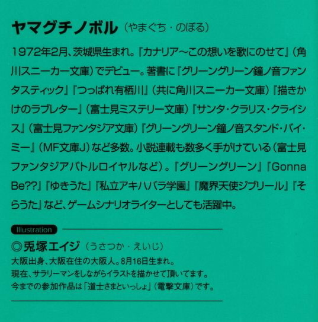

| [ヤマグチノボル] ゼロの使い魔07 | |
| ヤマグチノボル | |
| (2015) | |
|
ゼロの使い魔７〈銀の降臨祭〉
ヤマグチノボル
|

第一章 二人の温度差
桃色がかったブロンドの少女が、マントを素肌に巻きつけただけのなんともはや悩ましい格好でベッドの上に横たわっていた。
その秘密を知る王軍の一部の幕僚の間で、虚無のルイズと呼ばれるようになったルイズ・フランソワーズであった。
今は年末、ウィンの月の第二週。ハルケギニアの気候では、未だ秋のこの季節......、天幕の中はさほど寒くはない。冬は年があけねばやってこない。だからそんな悩ましい格好でいられるのであったが。
藁束をまとめて布を置いただけの簡易ベッドの上、ルイズは小指をくわえてつまらなそうに眉をひそめる。
そんな仕草が、嘘のように愛らしい。陶磁で作られた人形のような頬に、不満の桃色を浮かべ、ルイズは起き上がって膝を抱えた。
そんな仕草は、神がかるほどに愛らしい。気持ちがすぐ顔に出るルイズは、自分の中で揺らぐ不安を隠しきれないのであった。その不安が、ルイズの少女を幾分脱皮させ、色気という名の香水を軽く纏わせる。
マントの下の細く長くのびた足を手持ち無沙汰に撫でる。
指がつま先に向かい、また膝まで引き返していく。
ルイズは知らず知らずのうちに、そんな色気のある仕草を見せようとしているのであった。しまいには羽織ったマントを軽くずらして、のびた素足を、細いけど艶やかな太ももをひけらかそうとした。無意識に。
マントの下は素肌。情動に色づく少女の肌がそのまんま。
つまり何も着てないのである。
なんでかというと、ルイズは寝るときネグリジェしか身につけない。ネグリジェを持ってくるのを忘れたので、マントで代用しているのであった。
下着をつけると、窮屈で眠れないルイズなのであった。
そんな格好でルイズときたら小指を噛んだりしているのである。
いやもう、はやこの瞬間、許せないほどに、悩ましい可愛いルイズの姿だったが......、もったいないことに天幕の中のもう一人はそんなルイズに気づかない様子であった。
ルイズが身体に巻きつけたマントの背中にはトリステイン王家の百合紋章が描かれている。学院で着ているそれとは違う。敵味方識別のためのその紋章は、ここが戦地であることを示している。
女王陛下直属の女官であるルイズには専用の天幕が与えられた。軍港であるロサイスには、宿舎になるような建物が少ない。そのため、至る所に天幕がはられていた。
将官に等しい扱いである。ルイズの伝説の系統魔法虚無は〝切り札〟であるため、当然の処置ともいえる。ランプの灯りに照らされた内部には、藁束の上に布を敷いただけのベッド、折りたたみのテーブル、身の回りのものを入れるチェストに、従兵を呼ぶための、ぶら下がった鈴。天幕の調度品は戦地にしてはそれなりに豪華であった。
そんな天幕の隅っこで、才人はまっすぐに前を見てぼんやりと落ち込んでいるのであった。
「ねえ、サイト」返事はない。
ルイズは身を起こすと、もう一度声をかけた。
「ほら寝るわよ。こっち来て」頬を染めて、そう告げるが、やはり返事はない。
「もう十時過ぎてるし。明日は早く起きて前線の視察に行くんだから、ちゃんと寝てよね」
それでも才人は答えない。異世界から来たルイズの使い魔は、胡座をかいてぼんやりと沈んでいる。一週間前からこうである。ルイズは才人をこんな風に落ち込ませた作戦を思い出し、小さな胸を痛めた。
このアルビオンの港町ロサイスをトリステイン、ゲルマニア連合軍が占領したのは、つい一週間前のこと。北方の港町ダータルネスにアルビオン軍主力を吸引したおかげで、このロサイスにはわずか五百程度の守備隊しか存在しなかった。六万の上陸軍は、なんなく守備隊を打ち破り、ロサイスに陣を構えた。
その吸引作戦を行う際に、ルイズの〝虚無〟が活躍したのであった。
虚無呪文〝イリュージョン〟。巨大な幻影を作り出すことが可能な呪文であった。
ルイズの〝イリュージョン〟は、ダータルネスに上陸せんとす連合軍の幻影を作り出し、ロサイスに向かっていた敵軍を引き返させたのである。
しかし......、ルイズたちがダータルネスにたどり着くためには、犠牲が必要だった。アルビオン侵攻軍総旗艦『ヴュセンタール』号に搭載されていた第二竜衛士中隊。
彼らが敵をひきつけてくれたおかげで、ルイズたちの乗ったゼロ戦は敵竜騎士部隊の追撃を逃れることができたのであった。
作戦の成功と引き換えに......、第二竜騎士中隊は全滅した。竜騎士は貴重だが、敵前上陸で発生するであろう損害に比べたら小さな犠牲であった。指揮官は賞賛されてよいし、喜ぶべき事態ですらある。
ただ、その作戦に参加して、その全滅を目の当たりにした者たちには、また別の感想があるのであった。
ルイズはそんな才人を見つめて、唇を尖らせた。
そりゃあ、確かに哀しいけどさ......。
上陸に際しても、犠牲は派生している。戦に死はつきものである。一人一人の死を悼んでいたらキリがない。
ハルケギニアでは戦は年中行事である。
ルイズにとって死は悲しむべきことだが、身近な存在でもあった。
ルイズは立ち上がった。淡い、ランプの明かりだけの部屋の中は薄暗い。このぐらいなら、ちょっとぐらいマントの合わせがずれても、素肌が見えることはないだろう。
ルイズはマントの裾をぎゅっと握って、抱きしめるような手つきで身体の前で交差させる。才人のもとに向かい、膝を抱えている才人の後ろから声をかけた。
「元気出して」
「うん」ぽつりと才人が呟く。
「でも、しかたないよね。目の前であんなことがあったんだもの。いくら任務のためとはいえ......」
ほんとに才人は落ち込んでいる。ルイズは気づいた。あの少年たちが、才人といくらも変わらない歳だったことに。
才人はきっと......、自分を重ねているのだ。この何を考えているのかわからない、異世界から来たルイズの優しい少年は、自分を重ねて傷ついているのだった。
ルイズはいつか才人が自分にしてくれたように、今度は自分が慰めてやりたいと思った。でも、どうすればいいのかわからない。
ルイズはちょこんと、才人と背中合わせにしゃがみこんだ。
「あのね？ こんなこと言うと、わたしがひどく残酷なように聞こえるけど......。わたし、あの人たちが死んだことより、サイトが落ち込んでいることのほうが哀しい。なんかそう思う自分がイヤだわ。でもそうなの。やっぱりそれってあんたが身近だからなのかな。あのね、ほんとに哀しいのよ」
才人はゆっくりと振り向いた。そしてルイズをじっと見つめた。
「死は哀しいけれど......。その、名誉の戦死よ。名誉の......。彼らは偉大な勝利のために死んだの。だから悲しんだら、彼らが可哀想よ」
「本気で言ってるのか？ そんなこと」
そんなこと言うルイズに違和感を感じた。
「本気なわけないじゃない。でも本気にならなくちゃ。今は戦なのよ」
ルイズは右手をマントの裾から離し、振り向いた才人の額をゆっくりと撫でた。頬に伝わる涙のあとを指でなぞる。
才人は首を振って、泣き出した。
「俺は......、あいつらの名前も知らないのに......」
やりきれないというか、許せなかったのである。
任務のために死ぬ。名誉のために死ぬ。
そんな感覚が、想像できない。
ルイズにはわからないのだろうか？
コルベール先生の手紙を思い出す。先生は、納得するなって言ってた。
殺し合いに慣れるな、って。慣れるもんか、って思った。
ルイズはそんな才人の泣き顔を見ていたら、せつなくなってしまった。先ほどの言葉は嘘ではない。彼らのことは悲しいが、国の勝利のために死んだのである。
ずっと貴族として育てられたルイズと、平和な地球日本で育った才人の温度差であった。
ルイズは才人の泣き顔を見ているほうがせつなかった。死者を悼むより、生者の悲しみを和らげたい。才人の持つ涙を優しさと言うならば、それももうひとつの優しさなのかもしれなかった。
ルイズは思った。
こんなとき、どうすればいいんだろう。傷ついている男の子を慰めるにはどうしたらいいんだろう。
そして......。
あのメイドならどうするのかしら、とちょっと想像が働いた。
きっと......、自分の身体の温かさでも使うわ、あの平民にはそのぐらいしかないものね。
そんな風に考えると、激しく癪に障った。
そ、そのぐらいわたしにだってできるもん、と思った。
いつだか押し倒されて、散々に首筋にキスされたときのことを思い出し、ルイズはかぁっと頬を染めた。
ただ興奮してのしかかってきただけだった（ルイズはそう思っていた）ので、ルイズはあのときの才人を許していない。そりゃもう、断然許していないのである。
好きとか言ったのも、きっとその、そーゆーことがしたかっただけなんだわ、と思う。そう思うと激しい怒りが湧いた。湧いて、自分も許せなくなった。なにせあのときの自分は、一瞬、その、いくらその勢いに流されたとはいえ、振り上げた手をおろしてしまったのである。
それってその。つまりその。
しかしルイズは心の中で首を振った。
あれね、別にうけいれたわけじゃないの。
だって、強引なんだもの。つい、よ。つい。
なにがついなんだかわからないが、とにかくルイズは頬を染めて才人を抱きしめた。使い魔を抱きしめるなんて、ほんとはいけないことである。身分の差って、あるじゃない。ねえ。食卓につかせるぐらいならまだお慈悲だけど、抱きしめるってこりゃもうお慈悲じゃない。
ルイズはなんなのかしらと首を振った。不思議なことに、心拍数があがるのであった。非情な戦場の空気をも溶かしてしまうぐらいに鼓動のリズムがあがっていくのだった。
しかし......、それでも才人は元気がない。
これじゃあ甘いんだろうか。
抱きしめるだけじゃダメなんだろうか。
元気になってほしい。好きでもなんでもないのよ。でもほら、使い魔がこんな状態では、今後の任務に激しく支障をきたすじゃないの。
ルイズは、いつだかシエスタが、汗を拭くふりしてシャツの隙間をちらっちらっと見せつけていたことを思い出す。ルイズも頑張って真似してみた。そりゃもう頑張った。貴族のプライドをかなぐりすて、チラみせなど、してみた。使い魔のことなんかなんとも思ってないけど、負けるのが癪だったからである。でも、才人の視線は動かなかった。
今の自分の格好を思い出す。マントの下は素肌である。
下着一枚、身につけていない。
ルイズは深呼吸した。ちょっとだけ。このぐらいで才人の悲しみが少しでも和らぐのなら......、やってみる価値はあるんじゃないだろうか？
だめよルイズ。
結婚もしてない相手に、素肌を見せるなんてとんでもないのよ。
使い魔ならいいけど......今はどーなんだろ？
見せたら大変なのよ。
結婚しなきゃなんないのよ。
そうきまってんのよ。
わたし結婚するの？
誰と？
この使い魔と？
無理よ！ むり！ だって平民の異世界人じゃないの！
なんだか沸騰して、頭がパンクしそうである。才人は、ぼんやりとそんなルイズを見つめている。その目にはなんの感情も浮かんでない。
くすん、とルイズまでせつなくなってしまう。
その悲しみを癒してあげたい。
才人はわたしのこと好きなのかしらそういや好きとは言ったけどあれどうせ身体が目当てでしょでもわたしの身体って魅力的なのかなどうなのかなわかんないええいもうこのばーか！
ぐらいにわけわかんなくなって、本格的にルイズの頭が爆発した。
ゆるゆると両手で閉じたマントの合わせ目をひらこうとしたとき......。
死者を悼む優しさ、そして生者を慰めようとする優しさ、二つの優しさが、触れ合おうとしたとき......。
ぶおんッ！
突風で天幕が吹っ飛んだ。
「な、なんだッ！」
「なによ！」
才人とルイズは同時に絶叫した。
天幕のそばに何かが着陸したらしい。
見ると一匹の風竜であった。
上には竜騎士たちの姿が見える。
「て、敵だッ！ 敵ッ！」
慌てて剣を掴んだ才人に、風竜の上からひょっこり顔を出した男が呟く。
「おやきみは」
その顔を見て、才人の目がまん丸に見開いた。
「あ───────────────ッ！」
なんと、風竜に跨っていたのは全滅したと思っていた竜騎士たちの姿であった。
ロをあんぐりとあけて、才人は呟いた。
「......な、なんで？」
「話せば長くなるんだが......」
小太りの竜騎士が口を開いた。周りの騎士たちが、気まずそうに目を伏せている。
「話はあとにしよう。そ、その......、邪魔してごめん」
と、照れたような口調で小太りの隊長が言った。
素肌にマントを羽織っただけのルイズは、唖然として才人に寄り添っている。
ルイズは思いっきり才人を突き飛ばして怒鳴った。
「なな、何にもしてないわよ！」
二つの優しさの温度差が、奇跡を起こしたのかもしれない。
空の露と消えたと思しき竜騎士たちが、残らず勢ぞろいしていた。
竜騎士たちは、乗ってきた一匹を除いて騎乗した竜を失っていたが......、とにもかくにもひとり残らず戻ってきた。
才人とルイズは、喜ぶより前に、口をあんぐりとあけて放心した。
何がなんだかわからなかったのである。
「お前たち、どうして......」
「いやその......、自分たちにもよくわからないのです」
突然の騎士たちの帰還に、竜騎士大隊本部の天幕の中にいた大隊幕僚の全員は目を丸くした。
全滅から一週間が過ぎている。
しかもここは敵地アルビオン大陸。生存は絶望視されていたのだった。
三つの竜騎士中隊を束ねる、第二竜騎士大隊隊長のギンヌメール伯爵は、とりあえず両手を広げて奇跡の生還を果たした勇者たちを迎え入れた。
「まあよい！ とりあえず生還を喜ぼうじゃないか！信じられない！まさに奇跡の生還だな！」
天幕の中が拍手と歓声に沸いた。
ここまで案内してきた才人たちの隣で、はにかんでいた少年竜騎士はしっかりとした声で呟く。
「まったくもって、自分にも信じられないのですが...」
「しかも傷まで癒えているではないか」
生還した連中の身体を改めていた騎士が、驚いたような声をあげる。
「はい」
「敵が手当てしてくれたのか？」
「いえ......、わかりません。とにかく自分たちが体験したことを、すべて報告します」
隊長の少年騎士が、天幕の中の連中に報告を始めた。
百騎もの敵竜騎士に囲まれた第二竜騎士中隊は、敵の魔法攻撃を受けて、一騎、一騎と確実に仕留められていったこと。
ほぼ全員が竜といっしょに深手を受けて、地面へと落ちていく最中、意識を失ったこと。
「で、意識が戻ったら？」
「皆といっしょに、風竜の背中に乗っておりました。風竜にまかせて飛ぶと、このロサイスに到着しました。すると一週間たっていたというわけで。はい」
「撃墜されてから、今日までの間の記憶がないと言うのか？」
竜騎士たちは顔を見合わせた。
「はい。ほとんど残っておりません」
「おいおい、一週間ものあいだの記憶がないのか？」
「そうなんです」
竜騎士たちは恥ずかしそうに頷いた。
「一匹だけ生き残ったあの風竜は誰のだ？」
尋ねる。
一人の竜騎士が手をあげて「自分のベイヤールです」と言った。双子の片割れの少年だった。ギンヌメールは彼に注意を向けた。
「状況は？」
「敵に囲まれたとき、竜より先に自分がやられたんです。肩にマジック・ミサイルを食らって......。ベイヤールは、そんな自分を逃がそうとしたんでしょう。やられたようなフリをして、低空に逃れてくれました」
ちょっと恥ずかしそうな口調であった。他の竜騎士は、竜も自分もボロボロになりながら、戦闘を持続したからであった。
「戦闘が不能になれば離脱するのは当然の義務だ。恥じるべきことではない」
大隊長にそう言われ、少年は顔を輝かせた。
「ありがとうございます」
ギンヌメールは口ひげをしごいた。全員が無事に帰ってきたことは嬉しいが......、怪しいことが多すぎる。ひっかかるのだった。
いったい誰が傷ついた竜騎士たちを救って怪我の手当てをして、一匹だけ生き残った風竜に乗せて、このロサイスに向かわせたのであろう？
墜した竜騎士を確認すべく、敵の捜索だってあったに違いない。それらをすり抜けて、彼らは帰還したのだった。
敵のワナかもしれない。
ギンヌメールは、一列に並べ、と言って竜騎士たちを並ばせた。部下に命令して、ディテクトマジックを使い、帰還した少年騎士たちの隅々まで調べていく。敵に操られているのかもしれないと勘ぐったのである。
しかし......、結果はシロであった。少年たちのどこにも、魔法で操られている形跡はなかった。それ以上尋ねることもなくなって、ギンヌメールは退出を促した。
「竜が残った貴様は、第一中隊の指揮下に入れ。残りは竜がないんじゃしかたがないな。ああそうだ」
ギンヌメールは完全に蚊帳の外でぼんやりと突っ立っているルイズのほうを見つめた。彼女の正体は知らぬが、王室から派遣された、何か特殊な魔法兵器を使用する女官と聞いている。とにかく丁重に扱えとの指示が、総司令部より全軍に出ていた。
「竜の補充が来るまで、ラ・ヴァリエール嬢の護衛につけ。では、下がってよし」
大隊本部の天幕を出たあと......、太っちょの第二竜騎士中隊長は、才人にぺこりと頭を下げた。
「というわけできみたちの指揮下に入ることになった。よろしくな」
才人はまぶたの下を拭いながら、その身体に抱きついた。
「死んだと思った」
「いや......、そういえば忘れてたことがあってさ。簡単には死ねなかったよ」
「忘れてたこと？」
きょとんとした顔で、才人が尋ねる。
太っちょの竜騎士はにこっと笑った。
「きみたちに名乗ってなかったな。トリステイン竜騎士、ルネ・フォンクだ。よろしく」
才人も名乗った。
「平賀才人だ」
へンな名前だな、とルネは笑った。才人は半泣きで笑って叫んだ。
「じゃあ今日はのむか！ 生還祝いだ！」
一行は、ルイズたちの天幕までやってきて、そこで宴会が始まった。生還できた喜びからか、みながんがんのむので酔いつぶれるのが早い。
気づくと、起きているのは才人とルネだけになってしまった。
先ほど風竜に吹き飛ばされた所為で、天幕に裂け目ができていた。その隙間から星が見える。月も見えた。夜の空気が入ってきて、ちょっと冷える。才人は身震いした。
「でも、そんなに落ち込んでたなんてな。いや、心配かけてすまない」
しんみりした口調でルネが言った。
先ほどルイズは、「あんたたちのおかげで使い魔が落ち込んで大変だったのよ！」とルネたちを責めまくっていたのである。それを聞いて「ヘンなやつだなー」と彼らは笑い転げた。その笑い転げた理由が才人はわからなかった。
そんな風に騒ぎまくってたルイズは今、才人の膝に頭をのせてすぅすぅ寝息を立てている。怒鳴ったりして疲れたんだろう。
「落ち込んだらヘンなのか？」
そう尋ねたら、ルネは微笑んだ。
「キリがないだろ？」
「キリがない？ どういう意味だよ」
問い返した。ルネはぐびっと壜から直接ワインを呷った。ふっくらした頬を酒の酔いで染めて、頷く。
「今は戦争だぜ？ いちいち見ず知らずの他人が死んだからって、落ち込んでたらキリがないだろ」
「別に見ず知らずじゃねえだろ。口だってきいたんだし。つうか自分たちを守って死なれたら、そりゃあ落ち込むだろ！お前らおかしいよ！」
才人はくいっと酒を呷った。ルネはちょっと真顔になって、
「別にきみたちを守って死のうとしたわけじゃない。ぼくたちが守ったのは、作戦であり、ひいてはぼくの名誉だ」
「どういう意味だよ」
「あのときは、きみたちをなにがなんでもダータルネスに送り届けろ、と命令されていた。その作戦を守ることは、王軍全体を守ることで、つまり陛下に忠誠を尽くすことに他ならない。陛下に忠誠を尽くしたと認められれば家名もあがる。ぼくが死んでも名誉は残る」
「バカげてる」
「おいおい言葉に気をつけろよ！ きみは平民だからわからんかもしれないが......、貴族にとって名誉とは、命よりも大切なものなんだから！」
「まったく、俺は貴族なんかじゃなくつてよかったよ」
「そうだな、ぼくたちみたいな下級貴族に生まれるぐらいなら、平民のほうが気楽に過ごせるな！」
「下級貴族？」
「そうさ。侯爵伯爵なんかの大貴族と違って、こちとら代々すずめの涙の俸給金暮らし......。金がないんじゃ見栄も張れない、かっこうもつかない。それがイヤなら戦場で頑張って、認めてもらうしかないんだよ。戦で手柄をあげれば、領地だっていただけるかもしれない。叙勲されれば年金もつく。だからみんな死にもの狂いなのさ。生死の危険なんかかまってられないよ......、ふぁ......」
しばらく目をつむって考え込んでから、才人は言った。
「......でもよ、死んだら終わりじゃねえかよ。なんでお前ら貴族は、そうあっさり死ぬとか名誉とか言うのよ。ばっかじゃねえの？」
返事はない。見ると、ルネは寝息を立てていた。
「ぐぅ......」
「......なんだよ。好きなだけまくし立てて寝ちまいやがった」
まったく、貴族って連中は勝手だよなぁ。ルイズだってそうである。あれだけ『あんたの帰る方法探さなくちゃね』と言いつつ、戦争が始まったらそっちに夢中である。
そんなわがままルイズに流されるままにつきあってる自分はアホなんだろうか？
......俺はなんのために命がけで戦ってるんだろ。
いくつか理由は思いつく。
可哀想なアンリエッタクの力になりたいから。
優しいシエスタの故郷を守りたいから。
でも、一番大きな理由は......、ルイズが心配だから。
これにつきるんだろうな、と膝の上で寝息を立てている、桃色のブロンド少女を見て思う。ほっとけないんだ。ぶっちゃけ惚れてるから、ほっとけないのである。
ルイズ可愛い。ルイズに触りたい。でも、我慢した。みんないるし。
ああ、自分のそんな気持ちが報われることはあるんだろうか？
その成否は神さまにしかわからないのだろう。
地球の神さまと、異世界の神さま、どっちに聞けばわかるんだろ。
そこまで考えて、才人は首を振った。
アホか。何どうでもいいこと考えてんだ俺。
そのとき......、不意にさっきのルイズのセリフが蘇った。
『死は哀しいけれど......。その、名誉の戦死よ。名誉の......。彼らは偉大な勝利のために死んだの。だから悲しんだら、彼らが可哀想よ』
その言葉に、なんだかとても違和感を感じた。
埋められないルイズとの距離を感じた。
膝の上で寝息を立てているルイズを遠く感じるのだった。こんなに近いのに......。どうしてそんな風に思うのか、その理由がわからない。
はぁ、寝よ......。才人は膝の上にルイズをのせたまま、こてんと横になった。
二つの月が......、そんな悩める才人を慰めるかのように皓々と光っていた。
第二章 妖精
さて竜騎士たちの生還から三日が過ぎた今日、ルネと才人たちは天幕の中でどんちゃん騒ぎを続けていた。
ルネたち第二竜騎士中隊の面々は、あの酒盛り以来、ルイズの天幕に入り浸っている。護衛というのは建前で、ほかに理由があったのだった。
「奇跡の生還に乾杯！」
才人が、酔いでにごった目で本日十七回目の『乾杯』をロにした。
「かんぱい！ かんぱいだ！」
酔いでへろへろになった声で、竜騎士たちがその唱和に加わる。でもってなみなみとコップについだワインをあける。
「生きてるっていいな！ こうやって再び酒がのめるんだから！」
そう言って手慰みに杖を振り、小さなつむじ風でワインをかき回してのんでいるのは、ルネの副官役だった少年、赤毛のアッシュ・ペンドルトンであった。貧乏貴族の三男坊である彼は、とにかくケチくさい飲み方をする。ワインを水で薄めてがぶがぶとやるのであった。だからたまにこうやって魔法で杯をかき回している。
目立つの双子の竜騎士は、ジルベールとセブランである。柔らかい白い金髪、少女のように可愛らしい顔つきの二人は、没落貴族の出であった。にこにこしながらお互いの杯に酒を注ぎあっている。
ルイズを除く全員がへべれけに酔っ払っていた。いや......、一人なにやら悩んだような顔で、じっと考えごとをしている少年がいた。無口なフェルナンであった。才人が酒をすすめると、首を振った。心悩ます何かを抱えているらしい。
そこに小太りのルネが、ズタ袋いっぱいに何かを抱えて戻ってきた。
「第二竜騎士中隊隊長！ ルネ・フォンク！ ただいま帰還いたしました！」
「ご苦労。大儀である」
と座の真ん中に座った才人がふんぞりかえって言えば、何がおかしいのか竜騎士たちは爆笑する。
天幕の隅っこに膝をかかえて座ったルイズは、そんな光景を苦々しげに見つめていた。
なんなのこいつら。
まるで自分の部屋気取りである。護衛というのは建前で、どうやら酒盛りをするためにここに来ているのだろう。ここなら上官の目も届かない。好き放題できるというわけだ。
ルイズはきりきりと唇を噛んだ。そりゃ、死地から生還したんだから、酒盛りも少しなら目をつぶってあげる。
でもね......。
毎日じゃないの！ 毎日！ しかも朝から晩まで！
その上、こいつらってばほんとに部屋を綺麗に使うってことができないのね！とルイズはぎりぎり歯軋りした。酒瓶や鳥の骨や、食べかすなんかが散らかり、辺りは惨状を呈している。
文句を言うと、「わかりましたぁ！」と威勢のいい言葉が返ってくるが、それだけである。誰も片付けようとしないので、日に日にゴミは溜まる。ついでにルイズのイライラも溜まっていくのであった。
一番許せないのは才人である。ルイズの代わりに文句を言ってくれるのかと思いきや、あのバカは先頭にたってバカ騒ぎを繰り広げ、とうとう今ではリーダー格である。バカの将軍さまね。似合いだわ、とルイズはため息をついた。
「戦果を報告せ～～～よ～～～」とすっかり将軍気取りの才人が言うと、ルネががさごそとズタ袋をあけた。
「ハムに干し肉にソーセージ......、そして酒だ！」
倉庫から失敬してきたごちそうに、皆が歓声をあげた。
「貴官に勲章を授与す～～～る～～～」
しかし勲章はない。誰かが困った才人に何かを手渡した。白くてぴらぴらした布ッキレであった。
「な、なんだこれ？」
その正体に気づいたルイズは慌てて立ち上がる。
「ちょっとぉ！ それわたしの下着じゃないのよ！なに考えてるのよ！」
「いやぁ、そこに落ちてた」と、才人にそれを手渡したアッシュが言えば、
「こ、ここに、た、たた、たくさんあるぞ？」とジルベールとセブランが、ルイズのチェストをあけて、ふるふる震えながら叫ぶ。
「最高の勲章だ！」とげらげら竜騎士たちは笑い転げた。
「最低ッ！ あんたたちほんと最低ッ！」
顔を真っ赤にしたルイズはチェストをあけたジルベールとセぶランの頭を酒瓶で殴りつけ、笑い転げているルネに鳥の骨を投げつけ、酔った竜騎士たちを一人残らず蹴り飛ばした。
最後におろおろしている才人の股間を蹴り上げ、馬乗りになって首を締め上げた。
「あんたまでいっしょになって何騒いでるのよッ！使い魔のくせにツ！使い魔の分際でッ！い、い、犬の分際でッ！犬がッ！ワンコロの分際でッ！」
分際でッ、というたびに声が裏返る。いい加減頭にきたらしい。
「そういや、きみは彼女の使い魔だったね」とルネたちがまじまじと才人の題を見つめ、再び大声で笑い出した。
「人が使い魔だなんて、ヘンな話だな！」
ルネたちは、ぽんっ！ と手を打った。するとばっさばさと彼らの使い魔が天幕に飛び込んできた。〝風〟系統のメイジが多いので、羽のついた生き物が多い。フタロウ、タカ、オオコウモリ......、グリフォンやヒポグリフの子供など、幻獣の姿も見えた。
「使い魔ってのはこういうのをいうんだよ！ あっはっは！」
「好きでこいつにしたわけじゃないもん！ このばかが勝手に来ちゃっただけだもん！」
「まあ、サモン・サーヴァントってのは、相手を選べないからな！」
ルネが笑いながら、ルイズに近づいて言った。
「でもきみ、ミス・ヴァリエール。よかったなあ、ぼくも恋人を呼び寄せればよかった。使い魔と恋人が同じなんて、メイジの理想じゃないか！」
竜騎士たちは爆笑した。
「恋人なんかじゃないもん！ ばか！ あんたたちってばかなのね！なんにもわかってないんだわ！」
するとアッシュはにやにやと笑みを浮かべた。
「だって、この前、ここで、なあ？」
「素肌にマントでしなだれかかってた。なにしてたんだよ！」
ルイズは首まで真っ赤になった。
「下品！ 最低！ 男の子ってほんとにそういうことしか頭にないんだから！」
とうとうルイズは毛布を頭から引っかぶってしまった。
なだめてもすかしても出てこない。完全にすねてしまったようである。
「やばい。怒っちゃったかな？」
ルネたちが心配そうに呟いた。それからいっせいに才人の反応をうかがう。
そのとき才人は......、額に皺を浮かべて悩んでいた。
俺たちほんとにできてねえし。
今はうーむ、どういう関係なんだろう？
使い魔と主人、という関係からは進展していそうな気がするけど......。
ほんとに進展してるんだろうか？
小舟の上でデキそうになったけど、あれはなかったことにしろ、とルイズに言われてしまっている。いったい自分のことを、ルイズはどう思っているんだろう？
気になった。
「悪気はないんだよ、きみからよく謝っておいてくれよ」
「あ、ああ」と複雑な思いで、才人は頷いた。
ルネたちは、顔を見合わせて、
「下品って言われちゃった」
「しょうがないよ。ぼくたち、貴族といっても下級もいいとこだからなあ」とアッシュ。
「爵位なんかだーれも持ってないもんな！ラ・ヴァリエールのお嬢さんと比べたら、下品と言われてもしかたない！あっはっは！」と、ジルベールとセブランが顔を見合わせて笑いあう。
なるほど、と才人は思った。魔法学院に通う子弟は、貴族の中でもおぼっちゃんお嬢ちゃんなのだ。ルイズはもちろん、ギーシュやモンモランシーだってお金はないようだったが家柄は相当なもんなんだろう。ギーシュのオヤジなんか元帥らしいし。元帥って軍隊で一番偉いんだろ？
ルイズとこいつらの温度には、たとえは悪いが、私立の名門校と落ちこぼれ公立学校みたいな違いがあるらしい。
ああ、だから俺はこいつらに親近感を覚えたのかあ、と妙な納得をする才人であった。
あの晩のルネの話を思い出す。
下級貴族が出世するには、戦場で手柄をあげるしかない、って言ってたっけ。なんとなくルネたちが不憫になってしまい、ちょっと酔いが醒める才人であった。
「はぁ、確かに酒盛りも楽しいけど、はやく手柄をあげたいな！」
とルネ。
「そうとも！ 竜騎士中隊は翼を失っても役に立つってところを、偉いさんたちに見せつけてやりたいよ！」
あっはっは、と笑うジルベールとセブラン。
「あああ、いつになったら、ロンディニウムのアルビオン軍をやっつけにいくんだ？もう上陸して十日がたったぞ！」
アッシュがつまらなそうに言った。
そうなのである。連合軍は、上陸から十日過ぎても進軍する気配がない。どうやら攻めてくるであろうアルビオン軍を、このロサイス近辺で迎え撃つつもりだったらしいが......。アルビオン軍はまったく攻め寄せてくる様子がないのであった。
そのとき......、竜騎士たちの願いが通じたのか、天幕に一人の少年兵がやってきた。
「りゅ、竜騎士大隊本部からの伝令です」
十三、四ぐらいの少年であった。柄の悪い年上の貴族たちが、昼間っから酒をのんでくだを巻いているのを見て、怯えた顔をしている。
「大隊本部？ 竜を失った竜騎士に、ギンヌメールさまがなんの用なんだ？」
とルネがちょっと皮肉っほい調子で言った。
「わかりません。自分はただの伝令でして......」
何らかの任務をくださるんじゃないのか？ とジルベールが呟くと、皆真顔になっていっせいに身なりを整え始めた。
しかし......、竜騎士たちにとって残念なことに、手柄をたてられるようなチャンスではなかった。おっとり刀で駆けつけたルネたちは、天幕の中であくびをしているギンヌメール伯爵を見て、自分たちの予想が外れたことを知った。
「報告書を作成するのを忘れておってな。今いちど、生還のときの話をしてくれ」
才人とルイズもやってきていた。一応〝護衛されてる〟身分なので、離れるわけにもいかない。
ルネたちは、なんともやる気のない口調で報告を開始した。内容はほとんどこの前話したのと変わらない。
撃墜されて、ボロボロになって......、一週間後、気づいたら全員が竜の背に乗っていた。以上。
確かに不思議な話である。でも、ハルケギニアでの魔法を使った戦争は、思いも寄らないことが多々起こる。戦時であるゆえ、かまっているわけにもいかない。
ただ、ルイズはじっとそんな話を聞いていた。興味が湧いてきたようであった。
さて、これお終いか、というとき......。
一人の少年が、もじもじとし始めた。
おとなしいフェルナンであった。彼は、ちょっと思いつめた顔で、言葉をロにした。
「あ、あの......」
「どうしたフェルナン、トイレに行きたいのか？」
アッシュが茶々を入れた。どっと座が沸いた。
「ち、違うよ！ 報告さ！ からかうなよ！」
いつもはおとなしいフェルナンが、真顔でまくし立てるので、皆黙りこくった。
「あ、あの......、こないだはちょっと夢か現か判断がつかなくて話しでもよいものかと迷いましたが......、でも、冷静になって考えてみるとやっぱり、でもその......」
「どうした。報告は簡潔に述べろ」と、ギンヌメール。
「は、はいっ！ 報告します！ 墜落した際に、自分は竜の背中から投げ出されて......、しばらく地面に横たわっていたんです。動こうにも、身体はどうにも動かなくって......、気が遠くなりました。ああ、これで死ぬんだなって。でも、そのときです。見たんです」
ギンヌメールは気がなさそうに促した。
「なにをだ？」
少年はちょっと言いにくそうに、もごもごと呟いた。
「妖精です」
「なんの妖精だ？ 水か？ ふん、あれは精霊か」
「違います！ あんなブヨブヨしたもんじゃありません！もっと綺麗な......、そうです！風の妖精！」
「風の妖精など、存在しないぞ。精霊と違って妖精は、すべて伝説の生き物だ」
「なんだかわかりません！ でも、妖精としか......」
「どんな姿だったんだ？」
「とても綺麗な......、女性です。綺麗な金髪で......、身体中がキラキラ光ってました。あれは絶対妖精です！古代の妖精だよ！」
そんなフェルナンに、みんなが嘲笑をあびせた。
そのときである。
「ぼくの金髪と、どっちが美しかったのかな？」
透き通るような声が響いた。男か女か、一瞬判断がつきかねるほどの美声である。
長身、金髪の少年が、天幕に入ってきた。才人とルイズは、その美少年に目が吸いよせられる。第二中隊の竜騎士たちは露骨に嫌な顔になった。
「お前の金髪って言ってほしいのか？ ロマリア人」
「いい加減ぼくの名前を覚えておいてくれ。ジュリオ・チェザーレだ」
名前からいって、どうやら男らしい。ジュリオと名乗ったハンサムな竜騎士は、優雅な仕草でギンヌメールに一礼すると、報告した。
「第三竜騎士中隊、哨戒飛行より戻りました」
ギンヌメールは微笑んで頷いた。
「第一中隊に引き継いだか？」
「はい」
「では休め」
「かしこまりました」
騎士とは思えぬ、柔らかい仕草で一礼する。
ジュリオはそれから、天幕の中をぐるりと見渡した。以前、ワルドに会ったときと同じような生理的嫌悪を才人は覚えた。うお、こいつなんか気に入らない。
とにかくまあ、 驚くぐらいの美形である。 ギーシュも色男だが、格が違う。まるで女か？と見まごうばかりの、細長い色気を含んだ唇。睫が長く、ピンとたってまぶたに影を落している。小鹿の革の白い手袋に包まれた細い指で物憂げに髪を巻きながら、天幕の中を見回す。
才人は髪をかきあげたその仕草で、驚くべきものを目撃した。
ジュリオと名乗るその少年、左眼はルイズのような鳶色だったのだが......、髪に隠れていた右目は透き通るような碧眼であった。つまり、左右の瞳の色が違う。
光の加減かと思ってじっと見つめていると、そんな才人に気づいたのか微笑まれた。
「瞳の色が違うのが珍しいのかい？」
「い、いや......」と思わず顔を赤らめる。なんだよ、相手男だぞ、と才人は自分に言い聞かせた。
「そんなに見つめられたら照れるじゃないか」
と言いつつ、表情に照れた様子はどこにもない。見るとにやにやと微笑んでいる。どうやら才人の反応を楽しんでいるらしい。食えないやつだ、と思った。
「虹彩の異常らしくてね。きみが噂の使い魔サイトーンくんだね？」
「サイトだ」
と名乗れば相手は大仰な身振りで、手を振ってのけぞった。優雅に一礼する。
「すまない！ 大変失礼をしたよ！ ぼくはロマリアの神官、ジュリオ・チェザーレだ。以後お見知りおきを......。人間が使い魔だなんて、珍しいからね。きみに一度会いたいと思っていたんだよ。......おや、あなたは」
ルイズに気づき、ジュリオはクールな仮面を脱ぎ捨て、特大の笑みを浮かべた。大輪の花が開いたような、無邪気さを感じさせる、そんな素の笑みであった。
「あなたがミス・ヴァリエール？ 噂どおりだね！なんて美しい！」
ルイズがぽかんとロをあけていると、いきなりその手をとって口付けした。
才人は震えた。
手前、誰の手に口付けてんの？わりいけど、それ俺の。俺の、ごしゅじんさま。
まあまあ、と才人は自分をなだめた。あのルイズがいきなり手に口付けされて、黙っているわけがないじゃないか。蹴りが飛び、拳が飛び、終いには血が飛ぶに違いない、とわくわくしながら見つめたが......、なにも飛ばなかった。
代わりに、
「いけないひとね」と、ちらっと斜め前に視線を落として頬を染めた仕草が彩る、はにかみを含んだ言葉が飛んだ。
才人の額から冷や汗が流れた。
なにその反応。
ワルドの一件を思い出す。何気にルイズが美形に弱いことを思い出し、才人は胃液を吐きそうになった。
「申し訳ない！ ぼくはロマリアより新たなる美を発見しに参戦したのです！あなたのように美しい方に出会うために、ぼくは存在しているのです！マーヴェラス！」
ギーシュに輪をかけてキザな言い回し。才人の肩は震えた。そんなキザ野郎に怒らないルイズにも腹が立つ。
「神官が女性に触れていいのか？ これだからロマリア人ってやつは......」
才人の代わりに、アッシュが苦い顔を浮かべて言った。どうやらジュリオは第二中隊の
連中からあまり好かれてないらしい。
「参戦するために、一時的な還俗の許可を教皇よりいただいていてね」
「詭弁だな」
「方便と言ってくれたまえ。坊さんの特権さ。でもまあ、きみたちの言うことももっともだ。ミス、失礼した。未だ僧籍に身を置く身ゆえ、女性に触れることが赦されぬ身」
おどけた調子で後ろに飛びのき、それから悪戯っぽい微笑みを浮かべてルイズに一礼した。
「しかし......、神はこの地をあまねく照らす偉大なる存在だが、たまに目をつむるという慈悲深さも持ち合わせております。再びお目にかかれる、そのときを楽しみにしております」
アホみたいにキザ。
だが......、そんな仕草が板についている。ギーシュも色男でキザだが、クネクネしてて間が抜けている。しかしコイツには隙がない。ワルドがどことなく冷たさを感じさせるのに比べ、こいつには妙な人懐っこさがあった。才人は本能で理解した。
こいつ、まじでモテる。
それもハンパなしに。
それからジュリオは真顔になった。その変わり身の早さが、デキる男って感じでこれまた憎らしい。才人はハンカチを噛み締めたい気分にかられた。
「話がそれたね。きみは、妖精を見たと言ったね？」
フェルナンが頷く。
「う、うん」
「きみたちが撃墜されたのは、どの辺りだい？」
ジュリオはテーブルに広げられたアルビオン大陸の地図を指差して尋ねた。
ルネが答えた。
「確か......、大陸に入って一時間ほど飛んだ辺り......」
地図の一角を指差す。
ジュリオは興味深げな顔で頷いた。
「ふむ、サウスゴータの辺りだな」
そのとき、ギンヌメールがこほんと、咳をした。
「暇なら竜の世話でもしてこい」
ジュリオは両手を広げると、「竜の世話をしなくてもいいきみたちが羨ましいよ」と、イヤミを言い残して天幕を出ていった。むきー！と竜を失った第二中隊の面々は、そんなジュリオの背中を憎々しげに見送った。
「あのキザ野郎は誰なんだ？」
竜騎士大隊本部から出た才人が尋ねると、ルネは露骨に顔をしかめた。
「ロマリアから来た神官だよ。坊さんのくせに、竜騎士の真似事なんかしくさって......、いけすかないやつだ」
「ロマリア？」
才人がきょとんとして、尋ねた。
「きみはロマリアを知らないのか？」
驚いた顔で、尋ね返される。才人は首を振った。こっちの世界の人間ではない才人は、国や地方のことなんか知らない。でも異世界から来ました、なんて言ったら面倒なことになるので、こんなときに言う言い訳を口にする。
「俺はその、東方......、ロバ・アル・カリイエからやってきたんだ」
「へえ！ あのエルフどもと年がら年中やりあってる土地から来たのか！」
いつかは、エルフたちの住まう地を通ってやってきたのか！と驚かれた。どうやらこの世界では、エルフというのは恐ろしい、好戦的な種族であるようだった。そのうえ人間とかなり仲が悪いらしい。
「ロマリアってのは、ハルケギニアの寺院を束ねる〝宗教庁〟がある国だよ。まあなんだ、ある意味貴族以上に威張ってる神官たちがたくさんいる国さ」
「ロマリアの神官どもときたら、神に仕える身分だからって、調子にのってやがるんだ」
貴族でもないのに、態度がでかかったのはそういうわけか。
「神官も魔法を使えるの？」
まさか！ と一人の貴族が叫んだ。
「貴族の家に生まれて、出家した神官ならそりゃメイジの血をひいてるから魔法が使えるけど......、平民の出なら、当然魔法は使えない」
ジュリオはその平民の出だよ、と誰かが言った。
あいつ、メイジじゃなかったのか。
「なんでそんなやつが、竜なんかに乗ってるんだ？おまけに中隊長とか言ってたぞ」
「あいつ、平民のくせに竜に乗るのが異常にうまいんだ」
悔しそうな口調で、一人が呟く。
「メイジでもないくせに、竜の声が聞こえる、とか言ってたぜ。ほんとかどうか知らんが」
「そんなわけでギンヌメール伯爵に気に入られ、第三中隊の隊長におさまりやがったんだ。いくら第三中隊が外人部隊だからって、破格の出世だよ！神官が騎士中隊の隊長だなんて、竜騎士隊は他の隊の笑いものじゃないか！」
そんな風に天幕から出たところで話し込んでいる才人たちは、杖を持った将校に追い立てられた。
「こらこら！ こんなところで集まって話し込むな！邪魔だ！邪魔！」
才人たちは顔を見合わせた。
「ミス・ヴァリエールの天幕に戻ろう。今じゃ、あそこがぼくたちの巣というわけさ」
そこでルイズのことを思い出し、才人は振り向いた。
ルイズは一人突っ立って、なんとなく、ぽや～～～っと、夢見がちな顔をしている。
才人は不審に思った。
なんでルイズ、あんな顔してんの？
そこで思い出す。
う！ もしかして、あのジュリオか？
ハンサム竜騎士か？
いや神官なんだから竜神官？
ええい、呼び方なんかどうでもいい！
とにかくさっきなんか、顔を赤らめやがって......。
才人はめらめらと嫉妬し始めた。
手に接吻されたぐらいで、あんな顔しやがって！なんてぇ女だ。浮気者！浮気者！と別に恋人じゃないのに、才人は心の中で悪態をついた。
なにが『いけないひとね』だ。ちょっと褒められたぐらいであんな顔しやがって！
俺なんか、好きって告白したじゃねえかよ。
差がついてんなあ......、どうしてだろ？ と思った瞬間......。
才人の頭の中で閃くものがあった。
すると先ほど、ルネたちと宴会しているときに脳裏をよぎった『ルイズと自分は今、どういう関係なんだろう？』という疑問が解決した。
以前ルイズの実家で、好きって告白したのに『忠誠のあらわれね』なんて言われた俺。
それって......、考えてみ？
いやもう戦争が始まって慌ただしくって、みんな死んだと思ってて哀しくて考える余裕もなかったが......。
よくよく考えてみ？
それって、もしかしてフラれてんじゃねえのか？
なんか自分に都合よく、 『一種の受け入れ』とか思ってたけど......、 よくよく考えてみ？受け入られてねえよそれ。
忠誠のあらわれってなんだよ。意味わかんねえよ。
つまり......。
フラれたんだ俺。
才人は頭をハンマーで殴られたように感じた。ガクッ！と膝をつき、首を振った。そんな才人を見て、ルネがおろおろとし始めた。
「お、おい......、サイト？」
しかしこうなった才人にはもう他人の言葉は届かない。
すっかり〝俺ワールド〟に入り込んでしまった。
絶望の次に浮かんできたのは、〝怒り〟であった。
可愛さ余って憎さ百倍のアレであった。
ああ、お前が行きたい言うから戦争まで参加してやってんのに、この女俺をフッた。
あんだけ助けたりなんだり、とにかく命がけで頑張ったのにフッた。
フ、フ、フリやがった。
キシャウ！ フフフフフフフ、フリやがった！
ゴゴゴゴゴゴゴ、とルイズに対する怒りが激しく渦巻いた。そりゃもう火山から噴出する溶岩流のように、男のセンチメンタルが逆流する。
平賀私立裁判が開廷され、二秒で判決が下された。
被告、女王直属女官、ルイズ・フランソワーズ・ル・ブラン・ド・ラ・ヴァリエール。
裁判長、俺。
はんけーつ、有罪！ ギルティ！ 情状酌量の余地なーし！
裁判長のことば。
普通男がここまでしたら、お世辞でも『わたしも好きだよ♪じゃあ友達からはじめよっ♪』ぐらい言うのが社会のルールであります。
そ！ れ！ が！
『忠誠のあらわれね』ってなに。
『一箇所だけ好きなとこ触っていいわよ』ってなに。
それってまるでご主人様に『お手』を許されたワン公じゃねえか。
俺犬か。犬じゃねえか。あ、犬か。
でもまだ犬言うか。もう犬はさすがにいいんじゃないのか。
次に、こないだの天幕の中でのルイズの格好を思い出す。
ルネたちが死んだと思って哀しくて、どんよりとしてて気に留める余裕さえなかったが、素肌にマント一枚だったですよ。こ、この女はバカにしてからに。フラれた男がどんな気持ちかわからんのか。
あったまきた。
平賀裁判長は男と女のラブゲーム法第三条に基づき、被告に以下を求刑する。
求刑、無視。
もうしゃべんない。
才人は、ルイズを無視して歩きだした。
さて、竜騎士大隊本部の天幕を出てからも、なんとなく先ほどの話と美少年のことが気になって、ちょっと心ここにあらずのルイズであった。
なんとなく、気になるのである。
彼を見ていると、妙な胸騒ぎがするのだった。
はっとするほどの美少年だから？
それもある。ルイズだって年頃の女の子なので、そりゃあ美少年は嫌いじゃない。でも、それだけで恋人を選ぶほど、単純でもない。とりあえず自分の心の中には一人の少年が住んでいる、かも、しれないので、とりあえず『顔がいい』だけの理由で他の男の子が住み始めてしまうことはありえないのであった。住人が、大家を徹底的に怒らせる何かをした場合はその限りではないが。
その胸騒ぎは、本能の部分が訴えかける何かであった。
そして、そんな本能の胸騒ぎはもうひとつ。
竜騎士の一人が目撃したという〝妖精〟のことである。夢と笑い飛ばしてしまうのは簡単だが......、彼らは現実に一週間分の記憶を失っているのだった。生きて帰ってきたんだから理由なんかいいじゃないかと、誰もあまり気にしていないのが、ルイズには不満だった。
これだからがさつな軍人っていやぁね、なんて思うのだが、いちいち細かいことを気にしていては戦場では生き残れないのかもしれない。
そんな胸騒ぎの正体を考えているうちに......、ルイズは我に返った。
おやおや、才人が歩き去ろうとしているではないか。
ルイズを無視して。
竜騎士の少年たちと、何がおかしいのか笑い転げて、ルイズをほったらかしてまた酒をのむ相談なんかしている。あのばか、なんでかちょっとわざとらしいぐらいに笑い転げている。
わたしをほっといて笑い話？
また酒盛りの相談？
なによなによ。いいかげんにしなさいよ。
「ねえ、待ちなさいよ」
と声をかけたが、才人は振り向かない。聞こえないの？と思って、今度は怒鳴った。
「サイト！ 待ちなさい！ ちゃんとあんたご主人さまを天幕までエスコートしなきゃダメでしょお～～～！」
でも無視。
へ？ なんで！ なんでよ！
才人は振り向きさえしない。距離はそれほど離れてない。聞こえている......、はずである。
ルイズの中に、ふつふつと才人に対する怒りが湧き上がった。気になる相手（ルイズは絶対認めないが）のそんな行動に、桃色のブロンド少女は簡単に癇癪を爆発させた。
そんなルイズを〝気が短い〟と責めてはいけない。人間恋をすると、些細なことで喜んだり傷ついたり怒ったりするものであるからして。
ルイズは自分の〝恋〟を認めないため、自然矛先は百パーセント才人の人格に向けられた。こんな風にわたしを怒らせるあいつ最低、というわけである。
ねえ！こないだわたしどれだけあんたのこと心配してあげたと思ってんのぉ～～～～！それなのに無視とかするわけぇ～～～～！
あんた好きって言ったくせに無視とかするわけぇ～～～～！
と拳を握り締めて石を蹴飛ばしてルイズは地団太踏んだ。
なんだかじたばたと暴れまわっているルイズに気づき、ルネが才人に耳打ちした。
「彼女は、きみの主人なんだろう？ なんか怒ってないか？ほったらかしでいいのかい？」
才人はルイズのほうを見た。
ルイズ、怒ってる。地団太踏んで暴れている。
使い魔に無視されて癇癪か。わかりやすいやつめ。どうせこっちは使い魔ですよ。はいはい。
ああそうだよな、なにせ貴族さまだから使い魔には恋できねえよな。
才人は泣きそうになりながら、そう思った。
フラレマシター！ と絶叫して、男泣きして、ルネたちに慰めてもらいたい。
でも......、才人は涙をこらえた。
考えてみれば、ルイズはなに、子供なのである。わがまま貴族っ子なのである。
優しくしなくてはいけない。
才人は拳を握って、ぐっと夜空を見上げた。
星が瞬いて......、綺麗だ。
二つの月が妖しく輝いて......、夢のようだ。
ああ、お月さんお星さま、俺のこの醜い嫉妬を洗ってくれ。
そう。俺は男じゃねえか。
フラれたからって、怒りに任せて無視とか......、やっぱりよくねえ。
結局、才人はそこまで考えて引きつった笑みを浮かべた。
俺は男男オトコ、と自分に言い聞かせてぷるぷると震えながら。
思いっきり冷や汗をたらしながら。
でもって随分と譲歩したつもりで「......ほら、ルイズ行くぞ」と声をかけた。
すると驚くべきことに！
ルイズはそっぽを向いた。
「お送りさせてください、でしょお」
腕を組んで頬を膨らませ、横など向いている。
な、なんだこいつ！
最低だ。フッた男にここまで冷たくするなんて、なんてぇ、女だ。
いつもだったら、ルイズのこのぐらいの態度では怒ったりしない。
ただ......。今回はルイズに対する違和感があった。
ルイズはこんなに頑張ってる俺をどう思ってるんだろうか？つていう違和感だ。
だからすましたルイズの態度に、過剰に反応してしまったのかもしれない。
才人はくるりと振り向いて、すたすたと歩き始めた。
「させてください？ ふざけんな。一生そこにいろ」
ルネたちは心配そうに才人とルイズを見ていたが......、結局才人を追いかけた。
あとに残されたルイズは、怒りに身を震わせた。
才人が去っていった方向に向かって大声で怒鳴る。
「なんでほっとくのよ！ 迎えに来なさい！」
そしてしばらく待った。でも......、戻ってこない。
な、なな、なんて自分勝手なやつなんだろう。
ルイズは心底頭にきてしまった。
今のわたし、戦場で不安なのに......。
手柄をあげなきゃいけないのに......、あんたってば協力する気あるの？
才人ときたらまったくそんなことには気がまわらない様子であった。
じわっと、目に涙が浮かんだ。こ、こないだなんか、欲望にまかせて奪おうとしたわ。
別に、まあ、それはいいの。よくないけど、いいの。許してあげるの。男の子はそういうことが好きなんだからしかたないの。わたしは好きじゃないけど、ほんとに好きじゃないけど、ああ、ちょっとなら。
ぶるんぶるんとルイズは首をふる。
好奇心っていやぁね。だめ。やっぱりだめ。
正直いうと、まあ、好きっていうんならしかたないか、とか思いました。
でもねえ、何が『好き』よ。嘘ばっかりじゃない。
好きだったら、どうしてそんな風に冷たくするの？意味がわかんない。
おまけに、メイドにも手を出してるじゃない。
絶対他の子にも同じこと言ってるわ。ばか。きっとメイドだけじゃないのよ。ふんだ！
よくそれでわたしに『好き』だなんて言えたわね。
許せない。嘘つき。きらい。きらいよ。
もういい、と小さくルイズは呟いて唇を噛んだ。
第三葦 ロマリアの神官
トリステイン・ゲルマニア連合軍が上陸して布陣した港町ロサイスは、アルビオンの首都ロンディニウムの南方三百リーグに位置している（一リーグは才人たちの世界の距離に直して、ほぼ一キロほどの距離単位である）。
上陸直後、連合軍は敵の反撃を予想した。軍を揚陸させてすぐに、まずはロサイスを中心とした円陣を築いた。
が......、アルビオン軍の反撃は行われなかった。
連合軍総司令官のド・ポワチエ将軍ら、侵攻軍首脳部は拍子抜けした。彼らは上陸早々の敵の攻撃を予想して作戦をたてていたのだった。ロサイス周辺で〝決戦〟を行い、敵の大軍を一撃で撃滅して、一気にロンディニウムに進軍するつもりだったのだ。
ほぼ三週間後に控えた年があけるヤラの月、その初日......、つまりは〝元日〟である始祖ブリミルの降臨祭までに、ロンディニウムを落とす計画であった。
つまりは短期決戦を企図していたのである。
これはしかたがない。六万もの大軍を維持するためには大量の兵糧が必要だ。強力な魔法を唱えるための秘薬（特に治療に際しての水系統は秘薬を必要とした）、そして火薬や大砲の弾といった軍需物資も要る。それを本国から前線の部隊に運ばねばならない。
敵地で長期戦を行うなど、悪夢以外の何物でもないのであった。またトリステインの国力では、長期戦を行うことは不可能である。
まんまと吸引されてしまったダータルネスから引き返したアルビオン軍主力は、現在首都ロンディニウムに立てこもっている。
敵軍はどうやら決戦を回避する心積もりのようであった。つまりはアルビオン空軍に与えた損害が、想像以上だったのだ。空を制されていては、戦の主導権は握れないために、アルビオン軍は反撃を断念したのであろう。
連合軍はそんなアルビオン軍に対し、攻勢の準備を行っていた。
予想が外れて具体的な損害が発生したわけではなかったが、決戦に備えて無駄な陣地を構築したので、その分の時間が取られた。一週間半分の兵糧を、連合軍は無駄にしてしまった。
短期決戦を企図せざるをえない連合軍は、六週間分の補給物資しか用意していない。それらが尽きたら、本国から食料や火薬を船で運ばなくてはならない。ギリギリの財政で遠征軍を編成した両国にとって、あまり考えたくない事態であった。
そんな緊張の中、連合軍がアルビオン大陸に上陸してから八日後の今日......、今後の侵攻作戦をめぐって、軍儀が開かれていた。
ロサイスの空軍基地、王立アルビオン空軍司令部、そして神聖アルビオン共和国空軍本部、そして現在はトリステイン・ゲルマニア連合軍総司令部、と一年で三度も主を買えた建物の中、赤レンガ造りの由緒あるその建物の二階の大ホール。
円形のテーブル、窓を背にした上座に腰掛けているのは、連合軍首脳部であるド・ポワチエ将軍。美髯を右手でしごきながら、二つに分かれた意見に耳を傾けていた。
当初の予定通り、短期決戦を主張しているのはゲルマニアの将軍、ハルデンベルグ侯爵。彼はがっちりした身体と見事な白いカイゼル髭をゆらしながら、
「進軍です。進軍！ 進軍！ 我らには残り四週間半分の兵糧しかないのですぞ！途中の砦や城など迂回して、とにかくロンディニウムを目指すのです。幸いなことに、我らは空を制している。始祖ブリミルの降臨祭までに戦は終わる、と言って兵を連れてきた以上、降臨祭を過ぎてしまったら士気が下がりますぞ！」
とゲルマニア将軍らしい、炎のような進撃を主張した。
「降臨祭までに終わる、と言って終わった戦がハルケギニアの歴史にありましたかな？」
そう言って、冷ややかにメガネの奥の眼球を光らせて反論したのは参謀総長のウィンプフェン。冷たい雰囲気の、四十男であった。
「だったら、我らが先例になればよい」
ハルデンベルグ侯爵はじろりとウインプフェンを睨んで言った。
「ロンディニウムを包囲したはいいが、途中の砦や城に後ろをさらすのは......。上策とは思えませぬ。そのうえ進軍すれば補給路も延びる。横から補給路をつかれては、お手上げです。面倒ですが、ここは飛び石を慎重に踏んでいくように、途中の城や要塞をひとつひとつ攻略しながら進軍すべきです」
「街ひとつ、城ひとつ攻略するのにどれだけの損害が出ると思っているのだ！補給路？降臨祭までにロンディニウムを落とせばよい！」
「侯爵がおっしゃるとおり、我らは空を制しているではありませんか。攻略時の損害は最低限に抑えられます。降臨祭までにロンディニウムを落とす？またそのような寝言を！」
ハルデンベルグ侯爵は軽蔑を浮かべた顔で言った。
「......なまじ系統が〝風〟だと、すぐに臆病風がふくようだの」
「威勢ばっかりよくって、あっというまに燃え尽きる〝火〟の数倍マシかと」
二人は睨み合った。
「臆病者のトリステイン人に勇気を教えてやる」
「野蛮人から教わる作法などありませぬ」
同時に杖を抜きあう。間に総司令官のド・ポワチエが割って入った。
「我らが争ってなんとする！ 侯爵！ 侯爵！ゲルマニアの勇気は戦場で示されい！ウィンプフェン！わたしに恥をかかす気か！」
二人はようやくおさまった。
「とりあえず当初の計画は崩れたことを認める必要があるようだ。アルビオン軍主力を決戦で打ち破り、余波をかってロンディニウムに進撃。クロムウェルの首をあげ、ホワイトホールに百合の旗を掲げる......。やはり計画通りに進む戦などありえんな」
アルビオン革命政府打倒後は、アンリエッタの名の下に親政を行う手はずであった。もちろん、ゲルマニアにも領土は割譲される。その後は、アルビオン王族の生き残りを捜し出し、トリステイン統治領の王座に据え、王制を復活させる計画であった。アルビオンの王族を捜すといってもほとんど革命時のごたごたで処刑されているので、適当な貴族を王族に仕立て上げ、玉座に据えるしかないのだろうが。
ド・ポワチエは首を振り、その想像を頭からはらった。
それは今考えることではない。今、考えるべきは、ロンディニウムに立てこもった敵軍をどうやったら壊滅できるのか、だ。
ド・ポワチエは唇を噛んだ。とにかく自分の出世がかかっている。
この戦に勝たねば、元帥にはなれぬ。
決戦ひとつで片付けば楽だったのに......、とド・ポワチエはアルビオン軍を恨んだ。どうしてクロムウェルはロンディニウムに立てこもり、打って出ぬ？
国土を敵に蹂躙されておるのだぞ？
閣僚に対する見栄も、貴族に対する示しも、民意もあるだろうに。
いったいどのような心積もりだ？
そんな風に考え込んでいる姿を、同盟国の将軍と参謀稔長が心配そうな顔で見ていることに気づき、ド・ポワチエは己の作戦計画を披露した。
「......決戦はなくなったが、計画は実行されねばならん。とにかくロンディニウムのハヴィランド宮殿に、女王陛下と皇帝陛下の旗を翻さねばならんからな。さて、一気呵成にロンディこウムを攻めるのは危険が過ぎる。かといってひとつずつ城を落としていったらこの戦、十年はかかるぞ」
侯爵と参謀総長は苦い顔で頷いた。ド・ポワチエはテーブルに広げられた地図を示した。ロサイスと、ロンディニウムを結ぶ、線上の一点を叩く。
「シティオブサウスゴータ。観光名所の古都だな。ここを取ってロンディニウム攻略の足がかりとする。五千をここロサイスに残して補給路と退路を確保。残りは攻略に参加する。空軍は全力を持ってこれを支援。もちろん敵の主力が出てくれば、決戦に持ち込む」
ふむ、といった顔で、侯爵と参謀総長が頷く。折衷案のような、どっちつかずの作戦計画であったが、悪くはない。
サウスゴータは大きな街だ。街道の集結点でもある。ここを取れば他の城や街にも睨みをきかすことが可能になる。もし降臨祭を過ぎても決着がつかず持久の態勢を取るにしても、大都市ならばそれがやりやすい。
作戦が決定されたそのときに、扉がノックされた。
「誰だ？」衛兵が問うた。
「わたしです。女王陛下の女官、ラ・ヴァリエールです」
ド・ポワチエは衛兵に顎をしゃくり、入室の許可を促した。軍俵に小娘を参加させる趣味はないが、女王陛下の女官で、伝説の〝虚無〟の担い手ともなれば邪険に扱うわけにもいかない。機嫌を損ねられても困る。
ド・ポワチエは、ルイズを〝駒〝どころか、〝道具〟としてしか見ていなかった。
「おお、ミス〝虚無〟。きみには豪華な天幕を用意したはずだ。面倒事は我ら軍人に任せて、そこで休養をとっていなさい。必要があれば呼ぶ」
ルイズは周りが偉いさんばかりなので気後れした。しかし、もじもじしていてはお役目は果たせない。勇気を出して口を開く。
「あ、あの......」
「なんだね？ ああ、ダータルネスでのきみの働きは叙勲に値するな。さすがは〝虚無〟。よくやってくれた。諸君！拍手！」
ぱちぱちと、気のない拍手が会議室に響く。
「王室に叙勲申請を出しておこう」
「い、いえその......」
「なんだね？ まだなにかあるのかね？」
ド・ポワチエの口調に不機嫌なものが混じる。
勲章だけでは足りぬというのか？ 小娘が欲張りおって！
強欲な人間というものは、自分の基準として人間をとらえる癖がある。ド・ポワチエは、ルイズがこれ以上の賞賛を欲しがっていると感じ、気分を害したのだった。
「違います。あの、勲章をいただきに来たんじゃないんです。その、生還した竜騎士たちについて......」
将軍たちは一瞬、なんのことだかわからなかったが......、三日ほど前に生還した竜騎士中隊のことだと気づき、頷いた。
「ああ、それがどうした？」
「その......、喜ばしいけど、おかしいと思いませんか？墜落から一週間もたって、無傷で帰還するなんて......。しかもその間の記憶がないんですよ？」
「そうだな」
煩そうに、将軍たちは相槌をうった。そんなことで軍儀の邪魔をしにきたのか？と言わんばかりの態度であった。
「場所はサウスゴータの辺りです。調査の必要があると思いますけど」
ルイズがそう言うと、将軍は手を振った。
「ああ、わかったわかった。進軍路の近くだな。捜索小隊を編成して、謎の究明にあたろう」と言ったが、本気で捜索する気などない口調である。
「おおかた頭でもぶつけたか、妖魔の類にたぶらかされたのであろうよ」
「......妖精を見たとの報告もあがっています」
「親切な妖精だな！」
誰かがそう言って、会議室は笑いに包まれた。誰も気にもとめていない。十騎ばかりの騎士が経験したであろう不思議な事柄など、意にも介してないのは明らかであった。
「そんな！ もし、重大な秘密が隠されていたらどうするんですか！戦局にも影響するかもしれません！」
「ミス、確かに不思議な出来事ではあるが、大局に影響があるとは考えにくい。我らはそのような些事にかまっている暇はないのだ」
「でも......」
それからド・ポワチエは、気づいたような口調で付け加えた。
「ちょうどいい、調べてほしいことがある。やってくれるな？」
赤レンガの司令部から、追い出されるかたちで出てきたルイズを見て、建物の入口に待っていた才人やルネたちが駆け寄った。
「どうだった？」
ふん、とルイズはそっぽを向くと、つかつかと歩いていく。
才人は、鼻を鳴らした。昨日からほとんどルイズと口をきいていない。昨日の畳、竜騎士大隊の天幕前にルイズを置き去りにしてから、二人は険悪な雰囲気になっていた。
そんなルイズの後ろを、才人たちはちょっと離れて歩く。
「はあ、まるで姫さまとその奉仕者だね」と皮肉っぽい口調でルネが言う。
それから、ちょっと小声になって才人の耳元で囁く。
「ちょっと小耳に挟んだんだが......。きみたちは、アカデミーの研究負なんだろ？」
「アカデミー？」才人はきょとんとして、ルネの顔を見つめた。興味探そうな顔で、次々と少年騎士たちが寄ってくる。
「あの飛行機械も、アカデミーで作ったものなんだろ」
「すごい新型魔法兵器を積んでるって話だぜ？」
「こないだの任務は、そいつをダータルネスに炸裂させて、敵をひきつける陽動作戦だったんだって？」
目をきらきらと輝かせて、少年騎士たちは才人に話しかけてくる。どうやら、ルイズと才人のことを魔法研究所の研究員だと思っているようだ。なるほど、ルイズの〝虚無〟を知るものは一部の将官のみである。
城下では奇跡の光で通っているらしいが、貴族相手にそんな言い訳が通用するとは思えない。公式のその効果と存在は、もっともらしく〝アカデミーの新魔法兵器〟ということになっているのだろう。
才人たちの会話に聞き耳を立てていたのか、ルイズがぴたりと立ち止まる。
ぎくっ！ と緊張して、才人たちも立ち止まる。なぜか全員直立。ルイズのぴりぴりした雰囲気に、全員が飲まれてしまった。さすがは公爵家の三女というべきか。
ルイズは振り返らずに、澄ました声で、
「違うわ。わたしはアカデミー所属の研究員なんかじゃないわ。女王陛下直属の女官よ」
才人は焦った。おい！ ばかルイズ！虚無は秘密なんだろ！噂が広まって敵に知られたら大変だろ！狙われちゃうよ！とあたふたした。
「わたしたちは王室直属の新兵器開発部門〝ゼロ機関〟の一員なの」
へ？ と才人は拍子抜けした。ゼロ機関ってなんだ。初耳だ。
「そ、そうだったのか！ すごい！」
「なんだかよくわからないけど、すごく強そうな機関だな！」
「いいこと？ 秘密の機関なのよ？ 誰にも言っちゃダメよ？そこで開発されている魔法兵器は、アカデミーで開発されてるそれとは比べものにならないほどすごいんだから！言ったら死刑よ。あなたたち」
「わ、わかった！」
「始祖に誓って誰にもバラさないよ！」
酔って気が大きくなった彼らは方々で話すことだろう。
自分たちが護衛しているのは、ゼロ機関とやらの新型魔法兵器だと。敵も味方も、伝説の〝虚無〟の存在など想像すらしないだろう。
才人はなるほど、と思った。誰かが適当な噂を流し、そして本人がその噂を否定。次に
もっともらしい〝真実〟を述べることで、真実から好奇の目をそらしたのである。
うまいこと情報を操作したってワケだ。
思わずルイズに駆け寄り、耳打ちした。
「......いつの間にそんな謀略覚えてんだよ。随分とやるじゃねえか」
「......姫さまの命令書に書いてあったとおりのことを言っただけよ。〝虚無〟は味方だって一部しか知らない機密だから、このように言い訳しろってね」
「お前！ だったらそういうこと俺にも言っとけよ。俺がうまく言いふらしてやったのに」
「あんた演技できないからダメ。ばかだし」
それからルイズは、ふんっ！ と顔を背けて歩き去った。
「なんかきみの女主人は、完全にご機嫌斜めだな」
とルネが呟いた。
才人はいやみったらしい声で、
「ふん。いっつもあんな感じだよ」と言ったら、ルイズは振り向いた。
「あんたたちが生還できた理由が気になるから調査を上申したってのに、却下されたから頭にきてるだけよ。いつもってなによ」
「いっつも〝頭にきてる〟状態じゃねえか」才人も言い返した。
ルイズはちょっとの間、冷たい目で才人を見つめた。
「な、なんだよ」
ふん、と小さく鼻を鳴らし、くるりと背を向け、ルイズは再び黙って歩き始めた。才人も無視を決め込んだことを思い出し、顔を背けた。
さてそんなルイズが向かう先は、才人たちの天幕ではなかった。
「あいつ、どこに行くつもりだろ」
巨大な鉄塔が並ぶ船着場を過ぎ......、工廠らしい溶鉱炉の横を過ぎ......、元は教練場か何かだったらしい大きな広場までやってきた。
「ぼくらの隊じゃないか」
ルネが言った。果たしてそこは、昨日もやってきた竜騎士大隊本部の天幕であった。なんでほかの天幕から離れて、ぽつんと寂しく張られているのかは、周りを見ればわかる。
周りには二十致匹の風竜が杭に繋がれて、ぎゃあぎゃあわあわあびぃびぃと鳴きわめいていた。煩いし危ないので、他の隊から維れた場所に設営されているのだろう。
そんな風竜を世話している人物がいた。
長身、美形のロマリア神官......、ジュリオであった。
まるで恋人を甘やかすように、ジュリオは飼葉桶に首を突っ込む風竜の首筋を撫でている。なにやらぶつぶつと竜に話しかけていた。ルイズはそんなジュリオにまっすぐに近づいていくので、才人は気が気ではなくなった。
咄嗟にルイズの後ろに駆け寄る。ルネたちも才人のあとを追った。
「ミスタ・チェザーレ」
ルイズがそう呼びかけると、ジュリオの顔がばぁああああっ！と笑顔に変わる。これはこれはこれは！と大仰な身振りでルイズに近づき、その手をとって接吻した。
「フタロウかハトで知らせてください。そうすればこちらからお迎えに参りましたものを」
「いや、あなたとその風竜に用事があったのよ」とルイズは言った。
「ぼくと風竜？」
「今からわたしを乗せて、飛んでほしいの」
ジュリオは理由も開かずに、満面の笑みで一礼した。
「あなたのような美しい方のお役に立てる好機がめぐってくるとは！ぼくも満更捨てたもんじゃないな！まったく、これは望外の喜び！」
「なんだあいつのあの仕草！ 芝居じゃねえんだぞ」
才人が苦々しい口調で呟けば、
「ロマリア人はそういうものだ」と、やはり苦い顔でルネ。
「どちらに飛べばよろしいのですかな？」
とジュリオが言ったとき、才人は思わず無視の誓いも忘れてルイズの肩を掴んでしまった。
「おいルイズ」
「なによ。邪魔よ。あっち行ってなさいよ」
才人は深く深呼吸したあと、言った。
「飛ぶんなら、俺のゼロ戦使えばいいじゃないかよ。なんでこんなキザ......、いやさ、ロマリアとやらの神官さまに頼むのよ」
「ふん。あんたなんかいやだもん」つん、と澄ましてルイズが言った。
「はぁ？」
「間が抜けてるし、優しくないし、気がきかないし。そのうえ、ヘンなことしか考えてないし。そそ、そういうことしか考えてないし。誰でもいいんだろうし」
「間が抜けてる以外は飛行にゃ関係ないだろ」
「じゃあはっきり言ったげる。どうせ後ろに乗るなら、格好いい男の子がいいの」
ルイズがそう言った瞬間、才人の身体が固まった。
「......なな、な、なんだと？」
思いっきり冷や汗をたらしながら、才人がそう言うと、ルイズは才人に指を突きつけた。
「あらなに？ やきもち？ ばかじゃないの？あんた誰と誰を比べてやきもちやいてるの？ここにいる美形が服を着て歩いてらっしゃるようなロマリアの神官さまと、犬とモグラを足して三で割って四をかけて五をひいて踏んづけたような自分の顔を比べてやきもちやいてんの？おかしいんじゃないの？ばっかじゃないの？死んだほうがいいんじ
ゃないの？」
「お、お前......」
才人は酸欠になり、口をぱくぱくと動かした。嫉妬の炎が激しく燃え上がり、身体を焼き尽くしそうになっていた。
「おあいにくさま。というわけでわたしは美形の神官さまと秘密の任務に向かいますから、あんたは天幕の中掃除しといてね。自分たちで汚したんだから、ぴかぴかにしときなさいよね。あと洗濯」
でもってルイズは最後に、思いっきり才人に向かって舌を突き出した。
風竜に跨ったジュリオが、そんなルイズに声をかける。
「準備は完了です。ミス・ヴァリエール」
「待って！ 今行くわ！」と、ルイズは風竜にひょいっと飛び乗った。
「しっかりつかまっててください。あなたはトリステインの宝石だ。落としたらとんでもない外交問題だ！」
「まあ、お上手ね！」
ルイズは、才人なんかにゃ見せたことのない特大の笑みを浮かべてジュリオの腰に腕を回した。そして、得意げに髪などかきあげる。
風竜は力強く羽ばたいた。地面の砂や埃が舞い上がり、才人たちは思わず目をつむる。
目を開いたときには......、風竜は高く空に浮かび、ついで鮮やかに飛び去っていく。呆けた顔で、才人はそんな風竜を見送った。
「なんだあいつ！ なんだあれ！ なんだあの態度！」
才人は背負ったデルフリンガーを抜いて、怒りに任せて剣をぶるんぶるんと振り回した。ルネたちは慌てて才人から離れ、呆然としてそんな様子を見つめている。
「おひさ。いやぁ、なんだか、相棒も苦労してるねぇ」
「なんだよあれ！」
「しっかし、あいつ、なんかひっかかるなあ......」
「どーなってんのよ！ なんでそこまで意地悪言うのよ！」
「気のせいかなぁ......、つて相棒聞いてねえね。ま、どうでもいいんだけどね」
風竜に跨ったルイズは地面を見下ろした。どんどんと人や天幕が小さくなっていく。呆然として見上げている才人の顔に気づき、にや～～～～～～～っと、再びルイズは特大の笑みを浮かべた。見て！あの間が抜けた顔！なぁに？いっちょまえにやきもちやいてんの？
そしてルイズは、地面に向かって、べぇ～～、っと再び舌を突き出した。
「さて、どこに向かって飛べばいいのかな？」
と自分のすぐ前から声がして、ルイズは我に返った。
「え、えっと......」と何から説明しようか迷っていると、
「どこを偵察すればいいのかな？」とジュリオに返された。
「ど、どうして偵察任務ってわかったの？」
「子供でもわかるよ！ 単騎での任務だもの！でも、いただけないね！」
「なにが？」
「アカデミーの研究員たるあなたのような重要人物を、偵察任務なんかに投入するなんて！考えられない！偵察なんて、普通は使い魔の仕事じゃないか」
ルイズは左手で、ぎゅっと〝始祖の祈祷書〟を握り締める。落とさぬよう、革の紐で綴じられ、肩から鞄のようにして下げていた。
「上層部は試しているのよ。わたしの持つ......、その、〝魔法兵器〟がどの程度の役に立つシロモノなのかってね。きっと、あらゆる任務に投入するつもりだわ」
「便利ってのは、不便なことだね」
そうね、とルイズは頷いた。
ルイズはじぶんの持つ伝説の〝力〟でさえ、国や軍組級という大きな装置の中では一個の歯車に過ぎないことを肌で悟りつつあった。どれだけ使えるのか？何に使えるのか？どうやったら己の役に立つのか？偉い将軍たちに、自分はそんな日で見られている。
当たり前だが、そこに自分の意志が介在する余地はない。自分はルイズ・フランソワーズではなく、ここではただの〝虚無〟なのだ。
でもそれは自分とて同じかもしれない。散々自分をバカにしてきた家族やクラスメイトを見返すために、自分だって〝虚無〟を利用しょうとしている......。
そんな風に物思いにふけっていると、笑い声が響いた。
「で、どちらかな？」
「あ、ごめん！ シティオブサウスゴータ！」
「古都だね。美しい都と聞いている。あそこを戦で破壊するのは忍びないなあ」
ルイズが答えに困っていると、ジュリオは振り返り、「気にしないで。今は戦争だ、理解はしている。ただ、ぼくは神官だからね」と、にこっと笑って言った。
はっ！ とするぐらい、魅力的な笑みである。ルイズは思わず頬を染めてしまった。
「そ、そうね」
ジュリオは振り返ったまま、ぐいぐいと顔をルイズに近づけてくる。
「ほんとにきみは綺麗だね。ミス・ヴァリエール」
軽くあとずさって、ルイズは誤魔化すように尋ねる。
「ど、どうしてロマリアから？ 同盟国でもないのに......」
「義勇軍だよ！ 規模は小さいけどね！ 今のアルビオンは、ハルケギニアの国すべてにとって目の上のたんこぶさ。王制を打倒して、貴族たちで共和制をしく？そんなことをされたら大変だ！共和制ってのは、どこの国にとっても悪夢なのさ。教皇さまが治めているロマリアだって例外じゃない」
「わたしには政治のことはよくわからないわ」
「気が合うね。ぼくもあんまり興味がない。じゃあ、もっと興味のある話をしよう。そうだな......」
「なぁに？」
「どうやったらきみのような、妖精みたいに可愛い女の子ができるんだい？」
真顔でそう尋ねられ、ルイズは軽く俯いた。
「バカなこと言ってないで、ちゃんと前見てなさいよ。道を間違えたら大変じゃないの」
「平気さ。さっき、ちゃんとこのアズーロに指示したんだ。シティオブサウスゴータに飛んでくれってね」
ルイズは怪訝な顔になった。確かこの神官は、メイジではないはずである。つまり、身分的にはともかく、能力的には平民と変わらないのだ。メイジでさえ、使い魔と心が通じ合うようになるまでには、相当の年月を要するのに......。
使い魔じゃない幻獣と、 メイジでもない神官の心が通じ合う？ そんなことってあるの？
ルイズがきょとんとしていると、ジュリオは笑った。
「きみがアカデミーの魔法兵器を扱えるように、ぼくは神の奇跡を使えるのき」
「冗談言わないで」
神の奇跡？ 冗談にもほどがある。神は形而上の存在だ。魔法が世の理を司る現世に力を及ぼすことなどありえない。
「なんてね！ そう、冗談だよ！ ただ、人よりちょっと、獣の気持ちがわかるだけさ！なぁ、アズーロ！」
風竜は、きゅい、と二戸鳴くとぐんぐん速度をあげた。
二人は一時間ほどの飛行でシティオブサウスゴータの上空までやってきた。
円形に配置された城壁の中に、色とりどりのレンガで組まれた家々が並ぶ。人口四万近い大都市である。
「高度を下げて」
ジュリオは頷くと、高度を下げた。街行く人々が手を振っているのが見える。味方と勘違いしているのだろう。ジュリオは微笑むと、風竜に何か呟いた。アズーロは翼を交互に振り、奇妙な感じに身体をゆすりはじめた。
「なにしてるの？」
「アルビオン産の風竜の真似してるのさ。この〝ダンス〟で、アルビオンの風竜は伴侶を探すんだよ。アルビオンの竜騎士はそれを利用して、敵味方の識別に使ってる」
「あなたのアズーロは、アルビオン産なの？」
「まさか！ ぼくが仕込んだんだよ！」
「あなた、すごいのね」
ルイズは感心した。メイジにだって竜に芸を仕込むのは並大抵のことではない。
「いいから早く敵情を調べたまえ」
ルイズは頷くと、街の情景を眺めた。報告の際に、〝イリュージョン〟を用いて、鮮明な映像として上層部に提供するつもりなのだ。幻影の魔法〝イリュージョン〟は詠唱者が見た光景を、記憶から取り出して正確に再現する呪文である。
この〝イリュージョン〟の使い方は、参謀部の指示である。彼らはルイズの〝虚無〟を、あっというまに軍事的に応用する。なるほどと思うと同時に、自分が道具だということを、ひしひしと感じる瞬間だった。
街中の広場を、闊歩している大きな化物に気づく。
「オーク鬼だわ」
「そうだね。あまり人の兵隊の姿が見当たらない気がするんだが......、気のせいかな？」
気のせいではない。街を我がもの顔で歩いているのは、槍や棍棒を担いでいるオーク鬼やトロル鬼といった、大柄な亜人ばかり。それを指揮するメイジの姿が見えたが......、あまり兵隊の姿は見当たらない。
「あいつらは、亜人で兵力を水増ししているのね。でも......、よくあの凶暴なオーク鬼たちが人間に従っているわね......」
「なんらかの手品があるんだろうさ。まったくきみたちメイジのすることは、神の敬虔なるしもべたるぼくには理解できないね」
ルイズは精神を集中して、目の前の光景を脳裏に焼きつけはじめた。
〝虚無〟系統は一回大きく使うと、再び精神力がたまるまでに時間がかかる。先日使ったばかりのために、あまり大きな......、つまり広範囲の風景を切り取る〝イリュージョン〟は作成できないかもしれない。
「もう一度、街の上を旋回して」
「そろそろ危険かもしれない。いつまでもこんなごまかしはきかないよ」
五分おき程度に、風竜にアルビオンの〝ダンス〟を踊らせているジュリオが呟く。
「正確な情報が必要なの。呪文が足りない分は、紙に書くしかないわ」
ルイズは危険を犯して、何度も街の上を往復しながら羊皮紙のノートに街の情報を書きとめていった。そのノートと、〝イリュージョン〟を使って、できる限り正確な情報を持ち帰ろうとしたのである。そんなルイズの様子を見ながら、ジュリオは笑みを浮かべた。
「やきもちをやかせたいだけじゃないんだろ？」
「え？ ええ？ なに言ってるのよ！」
「武装がないんじゃ危険だからだ。きみじゃなく......、あの使い魔くんがね。危険はしかたがない。任務だからね。でも、無謀な危険を冒させるわけにはいかない。違う？どうしてどうして、きみは怒っていても冷静な部分を残してる。女の子だからかな」
「意味がわからないわ」
ルイズは、頬を染めて誤魔化すように言った。
「あの飛行機械は弾切れなんだ。秘密兵器も使っちまった。速く飛べるだけじゃあ、役立たずだ」
「......なんで知ってるの？」
「ぼくもヴュセンタール号に乗り込んでいた。興味が湧いてね、甲板に繋がれていたあの飛行機械を調べたんだ。随分とよくできてるな！感心したよ！」
「好奇心は身を滅ぼすわよ」
とルイズがちょっとすごんで言うと、ジュリオは大声で笑った。
「安心してくれ！ ぼくはきみの味方だよ！ 自分のことしか考えてない将軍たちと違って、利用したり、陥れようなんてこれっぽっちも考えてない。......さて、時間切れだ」
「まだよ。もうちょっと」
「無理だよ」
「命令よ！」
「敵だよ」
ジュリオは顎をしゃくった。風竜の編隊が、一個中隊九匹、こちらに向かって急降下してくるのが見えた。
ルイズは呆然とした。
「逃げて！」
「......んー、無理っぽいな。ちょっとおしゃべりに夢中になっちゃったなぁ」
と、薄い笑いを浮かべて、ジュリオが呟く。上空にいた分、敵のほうが速い。全力で飛んでも逃げきれない。
勢いをつけて降下してくる風竜を見つめ、ルイズは震えた。将軍たちに自分の実力を認めさせたくって、ちょっと長居が過ぎたようである。唇をかみ締めて、膨れ上がる〝死〟の可能性に恐怖する。
首を振り、そんな恐怖を振り払う。なんとか......、〝虚無〟で反撃してやる。何発〝エクスプロージョン〟は撃てるだろう？精神力は......、低い。規模は小さい。うまく当たるだろうか？
そんな風に考えているとき、ジュリオから指示が飛んだ。
「ルイズ、きみは乗馬は得意かい？」
いきなり呼び捨てにされたが、今は文句を言ってる場合じゃない。怪訝な顔で頷く。
「え、ええ......、ヘタではないわ」
「じゃあしっかりつかまってて！ ギャロップで柵や植え込みを飛び越えるみたいにね！アズーロ！」
風竜は、きゅい、と小さく鳴いた。そして、敵に向かって猛烈に加速する。
「ちょっと！ ちょっとぉー 突っ込んでどーすんのよ！あんた魔法使えないんでしょ！」
まっすぐに、ジュリオは敵の竜騎士編隊に突っ込んでいく。ルイズは悲鳴をあげた。
「ちょっと！ あ！ 魔法撃ったわ！ いやぁあああああ！」
九騎の竜騎士が、次々と魔法を放つ。氷の刃が、火の玉が、飛んでくる。こっちも魔法を唱えようとしたとき......、ジュリオに怒鳴られた。
「手を離すな！」
敵の魔法が当たる......、と思われた瞬間、風竜はとんでもない動きをした。身体をひねり、まるで空中で激しく踊るように身をくねらせ、次々と魔法を回避したのだった。
信じられない。風竜とは思えぬ機敏な身のこなしである。まるで小鳥のようなその動きに、敵も度肝を抜かれたらしい。一瞬、速度が鈍る。
「ブレスだ！ アズーロ！」
ぶふぉッ！ と風竜の口から、まるで火竜のような大きなブレスが飛んだ。一騎の竜騎士が正面からまともに食らい、地面へと落ちていく。
そしてすれ違いざまに、爪を使い、一騎の翼を切り裂いた。その一騎は行き先を地面へと変えた。
唖然として、ルイズはその光景を見つめた。
風竜があんな大きなブレスを吐くなんて！ どーなってんの！
七騎に減った敵の竜騎士は、反転して、再び戻ってくる。
さすがアルビオンの竜騎士。
ジュリオの風竜の動きに、一瞬驚いたが、すぐに平静を取り戻したらしい。味方が二騎撃墜されたことにも動じず、怯まずに突っ込んでくる。
広がって包み込む構えのようだ。
慎重に逃げ道をふさいで、仕留めようというのだろう。
無造作ともいえるような動きで、ジュリオのアズーロは包囲網の中に入り込んでいく。警戒するように、一定の距離をとっていた敵のうちの一騎が突っ込んでくる。
その敵に首を向けた瞬間、後方から別の一騎が飛んでくる。前方のは囮らしい。
「後ろ！ 後ろ！」
とルイズが絶叫したが、ジュリオは薄笑いを浮かべたまま、囮を追いかけている。
後ろについた敵は、てっきり囮に注意をひきつけたと思ったのだろうか。ぐんぐんと距離を詰めてきた。
真後ろについた敵の魔法攻撃と同時に、アズーロは身体をひねらせた。後ろに目がついているような動きだ。鮮やかに宙返りして攻撃をかわすと、アズーロはブレスを吐いた。
ブレスを食らい、攻撃をしかけてきたアルビオンの竜騎士は墜落していった。
唖然として、ルイズはことの成り行きを見守っていた。
信じられないぐらいに鮮やかで、無駄のない風竜の動き。
「りゅ、竜がこんな動きをする生き物だなんて！」
「しゃべると舌噛むよ」
とどこまでも落ち着き払った声のジュリオ。
三騎をやられ、敵の空気が変わった。はぜるような怒りを感じたルイズは首をすくめる。包囲をゆるゆると縮め、全騎がいっせいに突っ込んできた。
瞬間、ルイズの視界が上下にゆれ、左右に回転した。まるで曲芸師の持ったボールのように、身体が振り回される。目をつむることも忘れ......、ルイズはジュリオにしがみついていた。
アズーロが身をひねるたびに、ブレスか爪か牙で、敵の風竜が深刻なダメージを受けるのが見えた。敵の攻撃を避ける動作が、そのまま攻撃の動作になっている。
わずか四秒ほどの間に、突っ込んできた六騎は叩き落とされた。
「終わり。じゃあ戻ろうか」
まるで道端で子供をあやしたあとのような、何気ない声でジュリオが言った。
「な、なにが起こったの？」
風竜と乗り手が一体化したような、鮮やかな機動。
いや、それだけでは説明がつかないような、信じられないアズーロの動き。
「竜の本来の能力を、引き出してやっただけだよ。みんな、竜に無駄な動きをさせすぎている。そんだけさ」
こともなげに、ジュリオは言った。メイジではない彼が、どうして第三中隊を預かっているのか......、ルイズは理解した。
第四章 秘書と皇帝
アルビオンの首都ロンディニウム、ホワイトホールでは出撃をめぐっての激論が戦わさてれいた。
ルイズの〝イリュージョン〟でダータルネスに吸引されてしまったアルビオン軍は、水際で敵軍を叩く好機を逃すことになった。きっちりロサイスで、上陸してくる敵を迎え撃つことができれば、アルビオン大陸からハルケギニア大陸へ敵を追い落とすことも可能だったのだが......。
「敵が完全に上陸し終わって陣を築いた現在、こちらから反撃を試みるのは自殺行為です」
十五人ほどが腰掛けた円形のテーブル、北側に腰掛けた年若い将軍が、憔悴した顔で言った。そのとおりである。四十隻が残っていたアルビオン空軍艦隊は、先日の艦隊決戦で半数が撃沈され、残りのフネも深刻なダメージを受けた。出撃できるのは、十隻にも満たない。
対してトリステイン・ゲルマニア艦隊は、十二隻が沈み、八隻が探刻なダメージをうけたが、未だ四十隻ほどが戦闘可能である。完全に制空権を怒られた状態だ。
その上アルビオン軍は、数を減らしていた。タルブの敗戦で三千を丸々失い、先日の敗北でさらに軍全体の士気が下がり、離反する隊まで現れる始末。現状では四万数千の兵を残すのみ。革命時の勢いは、すでにない。
制空権を握った六万に対し、攻撃を加えられるわけがない。
座の中心に控えた、神聖アルビオン共和国議会議長にして、初代アルビオン皇帝クロムウェルに、非難の視線が集中していた。
数々の謀略も失敗した挙句、敵の上陸を許してしまったからだ。
しかし、クロムウェルはそんな視線を受け流し......、涼しい顔のままだ。
アルビオン軍主力の実質的な指揮をとっているホーキンス将軍が、口を開いた。
「反転は小官のミスです。初動で敵を殲滅できる好機を逃しました。詫びの言葉もありま
せぬ」
「ボロボロだな、我が軍は」クロムウェルはにっこりと笑った。
「魔法学院の子弟を人質にとる作戦も、失敗に終わった」
失敗したというのに、悪びれた様子は見られない。
ホーキンスは、ため息をつくように言った。疲れた声であった。
「敵が使用する魔法兵器は、こちらの想像を超えております」
「ミス・シェフィールド」
クロムウェルの後ろに控えた黒ずくめの秘書、シェフィールドが頷いて羊皮紙に書かれた報告書を読み上げる。
「ダータルネス付近に突然現れた〝幻影〟は、十三時間に亘って遊弋し、その後忽然と姿を消しました」
「たかが幻影を浮かべる姑息な魔法にすぎん。何を恐れることがある？」
「効果は甚大です」
ホーキンスは目をつぶって言った。幻影で惑わし、軍を引き返させる......。つまりは数万の軍勢と変わらぬ効果をあげている。たかが幻影と、侮る気持ちにはなれない。
「正直に申し上げて、小官は敵が恐いのです。ダータルネスの幻影のみならず、敵は未知の魔法を多々使用しております。タルブで、我が艦隊を吹き飛ばした魔法の光......」
クロムウェルはシェフィールドに向かって頷いた。
シェフィールドが、寺院で賛美歌を歌う声楽隊のような、よく響く声で再び羊皮紙を読み上げた。
「敵軍は......、かつてタルブで我が艦隊を殲滅した、あのような光は撃てない状態であると判断いたします」
「何ゆえか？」
「使用するなら、先日の上陸前の艦隊決戦のおり、使用しているはずです」
「温存の可能性は？」
「敵軍は、あの艦隊戦で負けたら、あとがない状態でした。使用できるものならば、確実に〝奇跡の光〟を投入したはずです。しかし、敵は通常の艦隊戦を行いました。衆寡敵せず、それでも我が艦隊は敗北いたしましたが」
「陸で勝てばよい」と、クロムウェルは言葉を引き取った。
その言葉を受けて、参謀本部の将軍が立ち上がる。
「閣下、参謀本部は敵の攻略予定地を、シティオブサウスゴータと推定しました。ここは......」とテーブルの上の地図を、杖の先で叩きながら説明をくわえる。
「街道の結束点であり、重要な大都市です。推定を裏付ける要素として、この辺りの敵の偵察活動が活発になっております。先日も偵察目的と思われる竜騎士が飛来し、我が軍の竜騎士隊と交戦いたしました。我々はシティオブサウスゴータに主力を配置して陣を構え、敵を迎え撃つべきです」
他の将軍たちから賛同の声があがる。もっともな作戦案である。
しかし、クロムウェルは首を振った。
「まだ、主力はロンディニウムから動かさぬ」
「座して敗北を待つおつもりか？」
おもちゃを取り上げられるのを拒む子供をたしなめるような目で、ホーキンスはクロムウェルを見つめた。クロムウェルは再び首を振った。
「将軍、サウスゴータの街は取られてもかまわぬのだ」
「敵にみすみす策源地を与えると申されるか。敵は大都市で少ない兵糧を補給し、休養も取るでしょうな」
「兵糧など与えぬ」
「どうやって？」
「住民たちから丸々食料を取り上げる」
ホーキンスは言葉につまった。なんという......、クロムウェルは、シティオブサウスゴータの住民たちを、利用しょうというのだった。
「敵は敬少ない食料を、住民たちに与えねばならぬはめになるだろう。いい足止めだ。なまじ防衛戦を展開して損害を被るより、賢い方策だ」
「敵が見捨てたらどうします！ 大量の餓死者が出ますぞ！」
「それはない。なに、敵が見捨てたとて、たかが都市一つではないか。国の大事の前には、些細な犠牲だ」
元司教とは思えぬ、冷たい言葉であった。しかし、その読みは正確といえた。
連合軍はクロムウェルと交渉するために侵攻してきたわけではない。クロムウェルを廃し、この地を支配するためにやってきたのだ。十中八九、戦勝後の民意を考え、施しを行うであろう。
しかし......、我がほうが勝利を収めた場合、どうするのだ？下手したら大都市一つ、叛旗を翻すかもしれない。それほどに食い物の恨みは恐ろしい。
「大都市一つを敵に回すおつもりか......。どのみちしこりを残しますぞ」
「なんのために、先遣で亜人どもを配置したというのだ。やつらの独断ということにすればよい」
どのような手を使ったものか、クロムウェルは亜人との交渉術に優れていた。亜人先遣は通常の軍作戦ではなく、このような謀略に使うためだったと知り、将軍たちは唖然とした。
彼らの指導者は、条約を破り、何度も姑息な手段で謀略を仕掛けたのみならず、ついには卑劣な手段で己の国の民をも裏切ろうというのだった。
「ついで、サウスゴータの水にワナを仕掛ける」
「水場に奉でも投げ込むおつもりか？ 毒など、すぐに流れてしまいますぞ」
「毒ではない。〝虚無〟だ」
「〝虚無〟のワナですと？」
「そうだ。面白いことになるだろう。ただし、効果を発するまでに、時間がかかる」
クロムウェルはにっこりと笑った。
そして立ち上がると......、拳を振り上げた。
「諸君、降臨祭だ！それまで敵を足止めするのだ！降臨祭の終了と同時に......、余の
〝虚無〟と交差した二本の杖が驕り高ぶる敵に鉄槌を下す！」
交差した二本の枚は、ガリア王家の紋章である。
おお！ いよいよガリアが！ と会議場は色めき立った。
「そのときこそ、我が軍は前進する！ 驕る敵を粉砕するために！約束する！」
会場の空気が熱せられていることを感じ、クロムウェルはつかつかとバルコニーへと向かった。居並ぶ将軍や閣僚が立ち上がり、あとに続く。
「忠勇なる兵士諸君を、閣僚全員で励まそうではないか！」
バルコニーに出でたクロムウェルたちを、歓呼の声が包んだ。
かつて王の謁見を待つために設けられた広い中庭には、熱狂的な信頼をクロムウェルに捧げる、親衛連隊がずらりと並んでいるのであった。
数千の歓呼の声が届く。クロムウェルは手を振ってその声に答える。
「敵は我が祖国に上陸した！ 諸君！ 勇敢なる革命兵士たる諸君に余は間う！これは敗北か？」
「否！ 否！ 否！ 否！ 否！ 否！ 否！否！否！否！否！否！否！」
歓声の輪がクロムウェルを包む。
「そのとおり！ これは敗北ではないッ！ 断じて、ないッ！・我は勝利を、諸君らに約束しよう！ 無能な王から冠を奪い取った忠勇にして無双の諸君らに余は勝利を約束する！驕れる敵は降臨祭の終了と同時に、壊滅するッ！やつらは神の怒りに触れたのだッ！よいかッ！よいかッ！迷えるハルケギニアを導くのは、神より選ばれし我らアルビオンの民であるッ！そのために始祖は我に力をたくしたのだッ！」
バルコニーには、戦死した兵隊が幾人か並べられていた。
クロムウェルは、高く指輪を掲げた。
すると......、死んでいた兵士たちが蘇り、歩き出した。
「諸君！ この 〝虚無〟ある限り、我らに敗北はないッ！余を信じよ！祖国を信じよ！始祖より選ばれし我らの力、〝虚無〟を信じよッ！」
「虚無！ 虚無！ 虚無！ 虚無！ 虚無！ 虚無！虚無！虚無！虚無！虚無！」
「そう〝虚無〟だ！」クロムウェルはさらに拳を振るった。
「始祖は我らと共にありッ！ 恐れるな！ 始祖は我らと共にありッ！」
中庭の熱狂は最高潮に達した。クロムウェルは大声で叫んだ。
「革命万歳ッ！ 驕敵粉砕ッ！」
熱気がバルコニーまで届く。
「革命万歳！ 驕敵粉砕！ 革命万歳！ 驕敵粉砕！革命万歳！驕敵粉砕！」
「神聖アルビオン共和国万歳ッ！」
「神聖アルビオン共和国万歳！ 神聖アルビオン共和国万歳！神聖アルビオン共和国万歳！神聖アルビオン共和国万歳！」
「神聖皇帝陛下万歳ッ！」閣僚の一人が立ち上がり、大声で叫ぶ。
「神聖皇帝陛下万歳！ 神聖皇帝陛下万歳！ 神聖皇帝陛下万歳！神聖皇帝陛下万歳！神聖皇帝陛下万歳！」
終わることのない連呼が、空へと吸い込まれていった。
熱狂の謁見のあと......。
元は王の寝室であった巨大な個室で、クロムウェルは頭を抱えて椅子に腰掛けていた。
その身体が小刻みに震えている。
シェフィールドはその前に立って、クロムウェルを見下ろして呟いた。
「見事な演説だわ。司教殿」
司教殿、と以前の役職で呼ばれた男は、椅子から転げ落ちるようにして、シェフィールドの足下に跪いた。
先ほど見せた、威厳の仮面は吹き飛んでいた。
ただ恐怖に怯える三十男が、ただの司教に過ぎない痩せ男がそこにいた。
「おおおおおおお！ ミス！ ミス・シェフィールド！あのお方は！あのお方は確実にこの忌まわしい国に兵をよこしてくださるのでしょうか？先ほどの将軍の言葉ではないが......、わたしは！わたしは恐いのです！この細い、魔法さえ操れぬただの男であるわたしは恐いのです！」
そんなクロムウェルに、まるで子供をあやすような口調で、シェフィールドは話しかける。
「何を言うの。今更恐くなったなど！ あの酒場で『王になってみたい』と申したのはあなたじゃないの。あなたのその率直な言葉に感じ入り、わたしの主人はあなたにこのアルビオンを与えることにしたのよ」
「一介の司教の身で、夢を見すぎたのでありましょうか......。あなたとあの〝お方〟にそそのかされ、アンドバリの指輪を手に入れ、王家に不満を持つ貴族を集め、わたしに恥をかかせたアルビオン王家に復讐を開始したところまでは楽しい、それは楽しい、まるで夢を見ているような時間でした」
「結構じゃない」
「おお、空の上のこの大陸だけで、小物のわたしには過ぎたるものでありましたものを......。何故に、トリステインやゲルマニアへ攻め込む必要があったのでありましょうか？」
「何度言ったらわかるの。ハルケギニアは一つにまとまる必要があるの。聖地を回復することが、唯一始祖と神の御心に添うことになるのよ」
「わたしとて聖職者の端くれであります。聖地回復は夢であることに間違いはないのですが......」
「ならば夢を見つづけなさい」
「荷が重すぎるのです！ 敵が攻め込みました！我が国土に敵が！あの無能な王たちのようにわたしを吊るそうと、敵がやってきたのです！どうすればいいのでしょうか！これは悪夢ではないと、言いきってください。ミス......」
シェフィールドは、笑みを浮かべてクロムウェルの前にしゃがみこみ、涙に塗れたその顔を覗き込む。クロムウェルは、顔をあげた。シェフィールドはその顎を持ち上げると......「甘えるな」と小さく呟いた。
「ひっ」
それまでの丁寧で柔らかい物腰が掻き消え、シェフィールドは一転して猛禽類のような顔をしてみせた。
深い、闇のようなブルネットの長い髪がゆれ、その下の目が妖しい輝きを放っている。その目に飲み込まれ、ガタガタガタとクロムウェルは震え出した。
「並の神官が百度生まれ変わっても見られぬような、甘い糖蜜のような夢を見ておいて、今更悪夢は見たくない？〝我が国土〟？貴様の土地など、このろくでもない貧乏ったらしい白の国の上とて、五十サント四方さえも存在しないわ」
「もッ！ もうしわけありませんッ！」
クロムウェルはシェフィールドの足下の床に頭をこすりつける。舌を突き出し、シェフィールドの靴を舐めあげた。
「お許しを......、お、お許しを......。は、ひぎ......、お許しを......」
「アンドバリの指輪を」
クロムウェルは、おそるおそる、嵌めた指輪をシェフィールドに手渡した。水の精霊の秘宝、死者に偽りの生命を与える魔法の指輪......。
この指輪を水の精霊から奪いに、ここにいるシェフィールド、およびガリアの魔法騎士といっしょにラグドリアン湖へ赴いた日のことをクロムウェルは思い出した。
始まりは、酒場で放談したことがきっかけだった。届け物があって、ガリア王国の首都リュティスに赴いたときのこと......。
クロムウェルは、酒場で一杯の酒を物乞いの老人に奢った。
「司教、酒のお礼に望むものを一つ、あなたにあげよう。言ってごらんなさい」
物乞いにそう言われ、ふざけてクロムウェルは言った。
「そうだな、王になってみたい」
「王とな」
深くローブで顔を隠した物乞いは、にっこりと笑って言った。
「ああ」クロムウェルは頷いた。
もちろん、冗談のつもりだった。酒の席の戯れだ。本気になど、していなかった。
しかし翌日の朝......、宿泊した宿にこのシェフィールドがやってきた。彼女は言った。
「あなたを王にしてさしあげるわ。ついてらっしゃい」
地方司教だった自分の人生は、その瞬間別の軌道を描き出したのだ。猛烈な勢いで......。
シェフィールドは愛しげに、アンドバリの指輪を撫でている。
指輪の石は、妖しく、深い水色に輝いた。
「お前は、この指輪が蓄えた力を、なんだと思う？」
クロムウェルは首を振った。死体が蘇るのは知っている。それは事実だ。〝虚無〟かどうかなど、知りようがなかった。
「魔法を扱えぬわたしには、わかりかねます。この力を〝虚無〟と称せよ、と申されたのはあなたさまではありませんか」
「〝風石〟を知ってるでしょ？」
クロムウェルは頷いた。空行く船を浮かべるための物質だ。〝風〟の力が凝縮されているといわれる、魔法の石。風石を掘り出すための鉱山は、このアルビオンにも無数に存在した。
「それと似たような物質よ」
「では、〝虚無〟ではないのですね？」
「そう、〝虚無〟じゃない。〝風石〟も、この〝アンドバリの指輪〟も、この世界を司る力の源の雫に過ぎないの。これは、先住の魔法と呼ばれる魔法の源となる物質よ。いろんな呼び名はあるけどね。賢者の石、生命のオーブ......。歴史的にはどちらかというと、〝虚無〟の敵......」
「あなたさまの知識の深さには、感じ入るばかりです」
「だから使うたびに、魔力が削られ少しつつ小さくなっていくのよ。ほら」
クロムウェルは頷いた。
確かに、以前より縮んだように見えた。
「要は先住の、〝水〟の力の結晶なの。ただ、その辺にありふれた風石などとは比べものにならぬほど、秘めた魔力が凝縮されてできている......。珍しい石。なればこそ水の精霊が守りし秘宝......。アンドバリの指輪。つまりは先住の秘宝......」
シェフィールドは、じっと指輪を見つめた。
すると......、その額が輝きはじめた。
内から溢れる光だった。
初めてこの光を見たとき、クロムウェルは驚いたものだ。このアンドバリの指輪に触れると、シェフィールドの額は輝きだす。
人の額が輝くことなどあるのだろうか？
尋ねてもシェフィールドは答えない。重要なことを、肝心なことを、この謎めいた女性は何一つ教えてくれぬ。ただ命令を下すだけだ。
シェフィールドは、その石ですっとクロムウェルの頬を撫で上げた。
「ほ、ほぉおおおおおおお......」
びくっと、クロムウェルは震えた。アンドバリの指輪が、かすかに振動している。触れただけで、電流が流れたように感じたのだ。
シェフィールドの手に触れた途端、アンドバリの指輪が目覚めた......、そのような振動であった。
「知ってる？ 水の力の特徴を」
「き、傷を治したり......」
「それは表面的な事象よ。〝水〟の力は身体の組成を司る。心もね」
「......は、はぁ」
「死体を動かすことなど、この指輪が持つ能力の一つに過ぎないのよ」
第五章 サウスゴータの古都
シティオブサウスゴータの城壁から、一リーグ離れた突撃開始点で、ド・ヴィヌイーユ大隊三百五十名は、ラッパの合図を待ち構えていた。
上陸から十五日が過ぎた今日、やっとのことで攻勢が開始されたのである。
第二中隊を率いるギーシュは、小刻みに震えながら朝もやの向こうにけぶるサウスゴータの街を見つめた。
「中隊長殿」
そばに控えた中隊付き軍曹のニコラが、ギーシュにそっと呟いた。
「な、なな、なんだ？」震える声で、ギーシュは問い返した。
「杖を落っことしてますぜ」
ギーシュは足元を見つめた。
そこには薔薇を模した、己の魔法の杖が転がっている。慌てて拾い上げ、精一杯の威厳を保とうとしながらそれを胸ポケットにさした。
「中隊長殿」
「な、なんだ？」
「大きなお世話かもしれませんが、小便をたれといたほうが、よいですぜ」
ギーシュは、ニコラを睨んだ。
「済ませた」
「結構で」
ニコラはそれから、微笑みを浮かべた。
「緊張することはありませんや。敵の大砲は先日の艦砲射撃でほとんど潰したっていうし、なぜか配備されてるのは亜人の部隊だけって話じゃないですか」
「あ、亜人は凶暴で、でっかくて......」
「でも、くみしやすい相手ですよ」とニコラは前を見て言った。
ギーシュは、この火縄銃をかついだ小男を見つめた。初の実戦だ。ほかに頼りになるヤツはいない。そう思うと、彼がどんな大男よりも大きく見えた。
「でも......、いったいどこから攻めればいいんだ？この街、周りは高い石壁で囲まれてるし......」とギーシュが尋ねると、ニコラは頷いた。
「今、〝工事〟をしてくれますよ」
そのまま待っていると、艦隊が上空に現れた。十数隻の戦列艦は一列に並ぶと、城壁に向けて砲撃を開始する。空に浮かんだ艦隊に、敵はなすすべもない。
ドォ───ンッ！ ドンッ！ ドンッ！ と煙と砲撃音共に、城壁が壊れていく。突撃開始点に控えた兵士たちから、歓声が沸いた。砲撃で何箇所か、城壁が崩れた場所ができた。
ついでのっそりと現れたのは、巨大な土ゴーレムたちである。
「トライアングルクラスが作ったゴーレムだな」
ギーシュは呟いた。〝ドット〟メイジの自分には、あんな大きな土ゴーレムは作れない。
感嘆して、見上げる。かつてトリステインの城下をにぎわせた、土くれのフーケが操るそれに比べると小柄だったが、それでもでかい。身長二十メイルほどの土ゴーレムが、ずしん、ずしん、と地響きを立てて、崩れた城壁へと近づく。
土ゴーレムは、それぞれ作成者の家の幟を背中に立てている。見慣れた紋章に気づき、ギーシュは歓声をあげた。
「兄さん！ 兄さんのゴーレムだ！」
果たしてグラモン家の幟であった。王軍所属の次兄に違いない。背中に翻る幟に、薔薇と豹グラモン家の紋章が光っている。
近づくゴーレムの一体に向かって、しゅんッ！と巨大な何かが飛んだ。ぼごっ！と巨大な穴が一体のゴーレムの腹にあいた。そのゴーレムはバランスを崩し、地面へと崩れ落ちる。近寄るゴーレムめがけて、その銀色の光は次々に飛んだ。何体かのゴーレムが、食らってバラバラになった。
「なんだあれは」とギーシュが呟くと、
「巨大バリスタでさ」とニコラが答えた。
「おそらく、オーク鬼が扱っているんでしょうなあ。三メイルほどもある、でっかいでっかい矢を飛ばす、ボウガンのお化けみたいなもんでさ。人間なんかが食らった日には、バラバラになっちまう。ま、人を撃つもんじゃありませんけどね」
ギーシュははらはらしながら、兄のゴーレムを見つめた。足元に矢がささる。幸運にも、兄のゴーレムは生き残っていた。
そんなギーシュを見て、ニコラが尋ねた。
「中隊長殿は、グラモン家の係累で？」
「末っ子だ」とギーシュが答えれば、ニコラは目を丸くした。
「元帥の！ おったまげた！なんでまたこんな場末の鉄砲大隊なんかに？父上のお名前を借りれば、近衛の騎士隊だろうが、一流の連隊参謀部だろうが、お望みのままでしょうが！」
「父の名前を使ったら、ぼくの手柄にならんじゃないか」
前を見つめたまま、ギーシュは言った。ニコラは唖然としていたが、そのうちににっこりと笑みを浮かべてギーシュの肩を叩いた。
「気に入りましたよ、ぼっちゃん。こりゃあ手柄を立てんことには国には帰れませんなあ！」
そのうちに、竜騎士の部隊がやってきた。城壁の上に運び込まれたバリスタに向かって、ブレスや魔法が飛ぶ。バリスタは沈黙した。
生き残ったゴーレムはやっとのことで、先ほどの艦砲射撃で壊れかけた城壁にたどり着く。取りつき、瓦礫を取りのぞきはじめた。
「入口を作ってるんでさ」
あそこから自分たちは突入するのだ。ギーシュは震えた。
「震えてますぜ」
「......む、武者震いと言いたいが......、恐いだけだな。うん」
「正直でいいですな。勇気を奮ったって手柄は立てられねえ。かといって臆病もんでも困っちまう。とにかく任せておいてくだせえ」
ニコラは後続の兵、百人ほどの銃兵に向かって手を振り上げた。五十人程度の短槍隊が、護衛についている。稔勢百五十人ほどの中隊が、ギーシュの手勢だ。
「弾こめぇーッ！」
のそのそと銃兵たちは銃に弾と火薬を込めた。
「中隊長殿、お手数ですが、こいつに火をいただけませんかね」
ニコラはギーシュに火縄の束を差し出した。ギーシュは頷くと、火縄に〝着火〟の呪文で点火する。ジジジ、と火縄が燃える音とともに、焦げ臭い匂いが辺りに漂う。ニコラは兵隊を呼び寄せて、火のついた火縄を配らせた。
「中隊長どのからいただいた火縄だ！ 消えないように注意しろよ！」
あまりやる気の感じられない掛け声が響いた。
がらん、とゴーレムが取りついた城壁が崩れる。同時にニコラは、ギーシュの腰をつついた。
「中隊長どの、行きますぜ」
ギーシュは震えながら杖を掲げ、
「グ、グラモン中隊前進！」
よたよたとよぼよぼの老銃兵たちがあとに続く。そのときにギーシュは気づいた。突撃しているのは自分の隊だけじゃないか！まだ突撃の命令なんか出ていない！
「お、おい、軍曹......」と文句を言おうしたが、ニコラは涼しい顔。勢いづいた隊は止められない。そのまま前進するしかない。
数秒後、後続の隊からも「突撃！」の声が聞こえてきた。
打ち寄せる波のように、兵が、騎士が、追いかけてくる。
「ウチとこは老兵ばっかですからね。早めに出発しておかないと、間に合わねえでさ」
スタートを早くきったおかげか、ギーシュの隊は一つの城壁の割れ目に、一番初めにたどり着くことができた。しかし何人かの騎士が、そんなギーシュたちを追い越して街の中へと飛び込んでいく。
「一番槍だったのに！」
そう言って飛び出そうとしたギーシュを、ニコラが押さえつける。
次の瞬間、飛び込んだ騎士たちが、馬ごと吹っ飛んだ。ぐしゃぐしゃになってギーシュたちの前に投げ出される。城壁の向こうには、大きな棍棒を構えたオーク鬼が、飛び込んでくる間抜けを待ち構えていたのであった。
体重が人の五倍はある巨大な豚の化物。そんなオーク鬼は、ギーシュたちを見つけると、突っ込んでこようとした。ギーシュはいつだか、皆と宝探しに行ったとき、このオーク鬼に襲われたことを思い出した。あのとき自分の青銅のゴーレムは、ぼこぼこにやっつけられた。
恐怖に襲われる。
「撃て！ 撃て撃て！」慌ててギーシュは叫ぶと、素早くニコラが反応した。
「まだ撃つな！ 中隊長どの！ 一番後ろのやつに転ばす呪文を！早く！」
ギーシュは言われたままに薔薇の造花を振った。にょっきりと地面からはえた腕が、最後尾のオーク鬼の足に絡みつく。
どうッ！ と狭い城壁の割れ目のど真ん中に、オーク鬼は転んだ。
「第一小隊！ 目標先頭集団！ てえ─────────ッ！」
ニコラは、ついで先頭のオーク鬼に集中射撃を命じた。
三十人ほどの銃兵が、先頭の一匹に一斉射撃を浴びせた。蜂の巣になって、先頭のオーク鬼たちが地面に倒れる。
後ろの集団は撃ち倒された先頭につかえて、身動きがとれない。その隙を逃さず、ニコラは命じた。
「第二小隊！ てぇ───────ッ！」
少しぐらいの鉄砲の弾を受けたって、平気で棍棒を振り回せるオーク鬼であったが、至近距離での数十発の一斉射撃ではたまらない。
後続は逃げ出そうとしたが、狭い城壁の亀裂の中、最後尾がギーシュの魔法で地面に倒れているので身動きが取れない。前は味方の死体でつかえている。越えようともたもたしているところに、残りの鉄砲隊の一斉射撃を受けた。
残った少数は、短槍隊の突撃を受けて壊滅した。
転がった二十匹近いのオーク鬼の死体を見つめ、ギーシュは感嘆の声をあげた。
「す、すごいな......」
再び銃兵に弾を込めさせながら、ニコラは微笑んだ。
「こいつらは単純だからね。敵とみればまっすぐ襲いかかってくるんでさ」
歴戦の傭兵軍曹は、にっこりと笑ってギーシュの肩を叩いた。
「中隊長どの。さ、一番槍ですぜ」
そんな風に、ギーシュの預かった残りものの大隊がなかなかに息の合った展開を見せている一方、まったく息の合ってない、〝侵攻軍の切り札〟も存在した。
ルイズとその使い魔であった。
シティオブサウスゴータは、小高い丘の上を利用して建設されていた。円形に城壁で囲まれ、中には五芒星の形に大通りが造られている。始祖が初めてこの地に築いた都市だといわれているが真偽は定かではない。
しかし、綺麗に幾何学模様を描いているのは五芒星を描く五本の大通りだけで、内部は入り組んだ細い道やら、ごみごみした路地やらが無数に入り組んでいる。ハルケギニアのどこにでもある街と同じだった。
ルイズは必死になって路地の一本を走っていた。その隣にはデルフリンガーを握った才人がいた。様々な変装を施した竜騎士隊の面々が、あとに続いている。
その後ろから十匹ほどの大きなトロル鬼と、牙の大きなオグル鬼がのっしのっしと追っていた。どちらも、身の丈は五メイルはあろうかという巨人である。
狭い路地が幸いした。トロル鬼たちは、窮屈そうに横になって歩いている。突き出した壁やら、出窓やらを破壊しながら追いかけるので、時間がかかる。これが広い野原とかだったら、すぐに追いつかれてしまうところであった。
なんでルイズたちが、シティオブサウスゴータの迷路のような路地を逃げ惑っているのかというと、与えられた任務が原因であった。
かいつまんで説明すると、ルイズたちの任務は主力の突撃に呼応して反対側から街内に潜入。
〝イリュージョン〟で幻の軍勢を作り出し、敵を混乱させるというものだったのだが......。
「なんであんたはいきなり騒ぐのよ！ ねえッ！」
走りながらルイズが怒鳴った。
夜陰に乗じ、この街に潜入したのは三時間ほど前のこと。
「言ったでしょ！ 何を見ても驚かないことって！ねぇ！」
「だ、だって......、でかいんだもん！ あのトロルとか！オグル鬼とかって！」
ルイズの虚無の詠唱には時間がかかる。
街の片隅で、辻説法のふりをして呪文を唱えていたら......、警邏のアルビオン貴族に質問された。
「お前たちはなにものだ？」
「古都サウスゴータに始祖巡礼の旅に参ったものでございます。アルビオンの勝利を祈願して、祈りと教えを捧げているのでございます」
と、ルネがもっともらしい顔つきで言ったのだが、警邏のメイジは怪訝な顔になった。
ルイズや変装したルネたちをじろじろ見つめ、
「お前たち......、トリステインやゲルマニアの間諜ではあるまいな？」
と尋ねてきた。
ルイズは思いっきり首を振った。
ルネも振った。
直後、才人がそのメイジの後ろに立った巨大なトロル鬼に気づき、うめき声をあげた。
「でけえ。なんだこれ！」
思わずそう叫んだ才人に、メイジは顔を近づけた。
「見ない顔だな......」
怪しまれている、そう思った才人は直立した。じろじろと、そんな才人をメイジは眺めまわした。
「質問だ。神聖アルビオン共和国第二軍を指揮する将軍は誰だ？」
才人は焦った。
将軍？ そんなの知らねえよ！ 周りを見ると、皆して冷や汗をたらしている。参った。自分の答えに任務の成否がかかっている。でも、将軍の名前なんか知らない。
ぐいっ！ と敵メイジは顔を近づけた。
「どうした？ 知らんのか？ この地をお守りになる将軍さまの名前も知らんのか？貴様本当にアルビオン人か？どうなのだ？」
才人はぱにくった。ぱにくって......、頭の中が真っ白になってしまい......
「徳川家康」
と答えた。将軍の名前といえば、それしか知らなかったのである。
「トクガワイエヤスってなによ！ どこの人よ！もうちょっと当たり障りのないこと言いなさいよ！」
走りながらルイズが叫ぶ。
「しかたねえだろ！ それしか知らねえんだよ！」
「まあそれはいいとして！」
いや、よくないんだけどしかたない。ルイズは言葉を続けた。
「いつものようにやっつけてよ！ あのぐらい！」
才人が『徳川家康』と答えた瞬間、はぁ？ と呆れられ、怪しいやつ！とトロル鬼たちとメイジが襲ってきた。
才人はその攻撃を受け止めようとしたが......、トロル鬼に吹っ飛ばされたのである。
巨大な亜人の力は、ガンダールヴといえどもてあます。しかもそれが十匹近くいるのである。それでもいつもの才人なら倒せずともなんとかあしらうことぐらいならできようが......、今日の才人は勝手が違っていた。
「どうした相棒。やる気が感じられねえなあ」
敵の攻撃を受け流しているときに、デルフリンガーにまでそんなことを言われてしまう始末。ルネたちの魔法の援護でなんとか敵を退け、逃げ出すことができたのである。しかし、ほとんど〝ドット〟ぞろいの竜騎士たちは、あっという間に魔法をうちつくす。
逃げ惑ううちに追っ手は増えた。通り沿いの住人たちは、窓をうっすらとあけて心配そうにそんな捕り物を見つめている。
そのうちに街の反対側から、爆発音が聞こえてきた。主力の攻撃が始まったのだ。
「攻撃が始まったわ！」
ルイズは唇を噛み締めた。自分たちは、主力の攻撃を補佐するために背後のかく乱任務を担っていたというのに......、失敗したのだった。
「あんたのせいだからね！」
隣を走る才人に怒鳴る。
「ったく、なんなんだよ......」
才人は悔しそうに呟いた。
身体が軽くならない。
いつもなら......、〝武器〟を握れば羽にでもなったように身体が軽く感じ、思い描いた軌道のとおりに腕が足が、身体が自在に動くのに......、今はなんだかゴムひもで縛られたように動きがもどかしい。
そりゃ、普段の才人よりは素早く動けるし、戦えるのだが......、キレがない。こんなんでは、メイジや化物の相手をするのは不可能である。逃げるしかない。
「なんで肝心なときに役に立たないの？ あんたってば！」
イライラした声で、ルイズが叫んだ瞬間、前方の街角からオーク鬼が飛び出てきた。
後ろからトロル鬼、前方からはオーク鬼。
完全に挟まれた。反撃の手段はない。
ルネが唇をぬぐった。
「せめて空で死にたかったな」
「あのまま、墜落して死んだほうが、幸せだったかもなぁ」
前後から敵亜人に挟まれ......、ここまでか、と空を見上げた瞬間......。
ぶおおおおおおおおおッ！ と、前にいたオーク鬼の集団が、いきなり燃え上がった。
「竜騎士だ！」
ルネたちが叫ぶ。才人も空を見上げた。
空から降ってきた竜騎士隊は散々にブレスや魔法を吐き散らし、敵を追い散らした。
「第三中隊の連中だ！」
白い衣装に身を包んだジュリオが、先頭の風竜に跨っている。総勢十騎ほど。五騎がトロル鬼に向かい、残りの五騎が才人たちの周りに着地した。
「早く乗れ！」
ジュリオが叫ぶ。慌てて才人や、ルネたちは竜に飛び乗った。全員が竜に乗ったことを確認すると、ジュリオは浮かび上がった。
「上空から、きみたちが追いかけられているのが見えてね」と、ジュリオ。
ルイズはほっと、胸を撫でおろし、ジュリオに礼を言った。
「ありがとう。助かったわ」
「礼には及ばないよ」
ルイズはがっくりと、肩を落とした。
「わたしたち......、任務に失敗したわ。ダメね......」
ジュリオは地面を指差した。
「気にしないで。あまり大局に影響はないみたいだよ」
トリステイン・ゲルマニア両軍の勢いは激しい。亜人たちばかりのアルビオン軍は、慣れぬ市街戦で大柄な身体をもてあまし、後退していくさまが見えた。
「でも、こないだの偵察任務といい、今回の陽動任務といい、随分と荒っぽい使い方をするもんだね......」とジュリオが言えば、ルイズは俯いた。
「きみみたいな可愛い子を〝道具〟としてしか、見てないんだろうなあ。軍人っていやだなあ」
ルイズの後ろに跨った才人がイヤみったらしく言った。
「お前も軍人じゃねえのかよ」
「僕は軍人じゃない。神官さ」
才人はジュリオの言ったことを反芻する。いけすかなヤツだが、言ってることはもっともかもしれない。
「そうだな、俺もそう思うな」と才人は頷いた。
「なあルイズ。いいのか？ ちょっと文句言ったほうがいいんじゃないのか？あの将軍ども、俺らがなんでもできると勘違いしてんじゃねえのか？」
しかし、ルイズはきっぱりと言い放った。
「望むところだわ。なんでもできるってところを、見せてあげようじゃないの」
才人は、そんなルイズに、また違和感を感じて黙りこくった。
ゲルマニア・トリステイン連合軍は、攻撃開始から一週間ほどでシティオブサウスゴータを制圧した。
損害は軽微であった。巨大な亜人たちは、人間用に整備された市街地ではうまく動くことができずに、一匹、また一匹と始末されていった。
街をスムーズに占領できたのは、住人たちの協力もあった。食料を取り上げられた街の住人はアルビオン軍を恨み、連合軍に協力するものが続出した。彼らは亜人たちが潜む建物を連合軍に通報したり、共に戦ったりしたのであった。
そして年末はウィンの月の第四週、の中日であるイングの曜日、シティオブサウスゴータの中心の広場で、街の〝解放〟が宣言された。
市長をはじめ、シティオブサウスゴータの市議会員や、市民たち、そしてトリステイン・ゲルマニア連合軍の首脳部の姿が集まっている。
広場の真ん中に設けられた段に上って、挨拶をしているのは連合軍総司令官のド・ポワチエ将軍。
「ここに、シティオブサウスゴータの解放を宣言する。シティオブサウスゴータ市議会に対し、トリステイン、およびゲルマニア政府の監督のもと、限定的な自治権を与えるものとする」
現アルビオン政府に不満を抱いていた住民たちから歓声が沸いた。
そんな中......、才人はぼんやりと、自分の左手を見つめていた。
右手にデルフリンガーを掴む。
すると......、ぼんやりとルーンが光る。いつもの眩い光は感じられない。電池が切れかかったような、そんな色だ。
「さえねえなあ相棒」
デルフリンガーが呟く。才人は頷いた。
「調子悪いな」
この前の陽動作戦からこんな感じである。身体は重く、動きは鈍い。力も出ない。
「どうしちまったんだろ」とため息混じりに言えば、
「いつだか言ったじゃねえか。ガンダールヴの強さは心の震えで決まる。相棒の心は震えてねえのさ。つまりあれだ。やる気がねえんだな」
「なんでだ？」
「さあね。そりゃ、相棒のほうがよく知ってるんじゃねえのか？俺じゃなく、相棒の心のことだかんね。まあ、俺が予想するに......」
デルフリンガーはぴりぴりと震えた。
「貴族の娘っ子とうまくいってねえからさ。いつか説明したろ？感情の震え、それこそがガンダールヴの力の源さ。今、おめえさんは主人に疑いを抱いてる。自分が守るに値する主人なのかって、疑ってる。それじゃ感情が震えるわけねえ。そりゃあ力は出ねえよ」
「............」
「魔法使いと使い魔ってなあ、そういうもんだ。お互いが信頼しあえば、威力は倍増。しかし、そうじゃなけりゃ、伝説だってナマクラだぁね」
才人はぼんやりと思った。
このままじゃもう、戦えないんじゃねえか？
そんな不安が心をよぎったが......。
でもまあ、いっか、と才人はちらっと横目で自分の主人を見つめた。
ルイズはロマリアの神官とずっと話し込んでいる。
才人が見ても、こっちを見向きもしない。いつだかワルドの背中に寄り添っていたのを見たときより、重い無力感が肩にのしかかった。
なんていうか......、あいつにならルイズをとられても、しかたないんじゃないか？そんな風に思ってしまうのだった。心の底に沈んだ何かが、そう訴えかけるのであった。
そう思うと才人の気持ちはさらに沈み、深い無力感が全身を包んでいく。
壇上ではえらい将軍が、一生懸命に演説している。アルビオンはもう負けたも同然であるとか、我が軍の勝利は動かない、とかなんとか。
そんな言葉が、耳から入って反対側へと抜けていく。
自分はなんのために、こんなとこで戦っているんだろう？
ちょっと前までなら、その理由は明白だった。
ルイズのため。
そう、ルイズのためだった。
見てるとドキドキする女の子......。
でも、そんな女の子に『好き』を拒まれたら？
ルイズはいったい自分のことをどう思っているんだろうか？
〝好き〟じゃないなら、どうしてそばにおいておくんだろう。
わからない。
わからないのか？
いや......、その理由に気づくのを心が拒否してる。そんな感じだ。
だったら考えるのはよそう。
そしてわけもなくせつなくなり、ルイズの態度が許せなくなっていくのであった。
一方、ちょっと離れた場所で、ジュリオと話し込むルイズも上の空だった。目線はジュリオに向けられている。どきっとするぐらいに端正な顔。彼に惹かれない女の子はいないだろう。
でも、心の目は使い魔を向いていた。たまにちらっと横目で様子を確かめる。才人はこっちを見て、せつなさそうにため息などついている。
へぇえ、いっちょまえにやくんだ、やきもち。
使い魔のくせに、やきもちなんかやいちゃうんだ。
へぇ、へぇえええええええええ、と、ルイズは心の中で凱歌をあげた。
思わず笑みがこぼれてしまうが、必死に噛み殺す。
いい気味！
いつもわたしがどんな気持ちでいたのか、そうやって少し反省しなさいよね、と心の中で呟いた。
「ミス・ヴァリエール」
「あ、はい！ な、なに？」
ジュリオはにっこりと笑った。
「失礼。呼ばれたんで、ちょっと行ってくる」
「え？」
ジュリオは人ごみをかきわけ、壇上の将軍の前に向かった。ジュリオの美貌に、シティオブサウスゴータの女たちのため息が漏れた。あの士官さん、ハンサムじゃない？士官じゃなくて神官さまじゃないの？首から聖具を下げてらっしゃるわ、とかそんな会話が聞こえてくる。
見ると、ド・ポワチエ将軍の前にはジュリオだけでなく、何人かの貴族が並んでいた。
貴族たちが自分の前に集まったのを確認すると、将軍はロひげをしごいた。
「えー、諸君に偉大なる勇者たちを紹介する。彼らはこのシティオブサウスゴータの解放戦において、伝説の勇者にも引けをとらないような武勲を立てたものたちである。彼らの努力によってのみ、この勝利がもたらされたわけではないが、帰するところは大きい。よって大将権限において彼らに杖付白毛精霊勲章を授与する」
拍手が湧いた。
次に呼び出し役の士官が、叙勲者の名前を呼び上げる。
「ド・ヴィヌイーユ独立銃歩兵大隊、第二中隊中隊長、ギーシュ・ド・グラモン！」
「は、はいっ！」
ルイズは口をあんぐりとあけた。
「ギーシュ？」果たして魔法学院の同級生、ギーシュの姿であった。
「彼とその中隊は、勇敢にも街への一番槍を果たした。その際にオーク鬼の一部隊を片付
けるという、戦果も加えている。その後も順調に制圧任務を務め、解放した建物は数十余にのぼる。彼とその中隊に拍手！」
割れんばかりの拍手が鳴った。ギーシュははにかんだ笑みを浮かべながら、勲章を首から下げてもらっている。よく似た顔の青年が出てきて、ギーシュに抱きついた。あちこちで、グラモン元帥の末っ子だそうだ。今出てきたのは次男で......、いやぁ、獅子の子は獅
子というべきかな......、等々、噂の言葉が飛んだ。
ルイズはおかしくなった。あの間抜けのギーシュが勲章？いやはや、モンモランシーが聞いたらなんと言うだろうか？少しは見直すかしら？
抱きついているのはどうやら兄らしい。兄さんにも祝福されて、よかったじゃない、と独りごちた。
なんだかそんなギーシュが羨ましい。
家族に祝福されるような、手柄を立てるなんて......。
ルイズだってギーシュ以上の戦果をあげているが、公にはできない類のものである。
でも、この戦争が終わって......、平和になれば......、家族に、自分が果たした祖国への忠誠の在処、多大なる戦果を報告できるだろう。
そうすれば家族も自分のことを見直すだろう。でも、そのためには今、決して躓くわけにはいかない。些細なミスで、自分の手柄を曇らすわけにはいかないのだ。
そう思うと、才人のミスが気にかかる。街に潜入しての陽動作戦は、才人のおかげで失敗したのだった。ちらっと横目で見つめる。
伝説の力とて、使いようなのだ。使い方を誤まれば、こないだのように容易にピンチに陥ってしまうのだ。もっと才人にも慎重になってほしい、とルイズは思うのだった。
第六章 休戦
トリステインの首都トリスタニアでは、十七歳の女王が執務室で目をつむり、祈りを捧げていた。無駄な装飾が排された執務室の中は、空気が、しんと冷えている。
まるで霊廟のようであった。
その部屋の真ん中で、黒いドレスに身を包み、深いベールを被ったアンリエッタが膝をついている。目の前には、小さな祭壇があり、中には小さな始祖ブリミルの像が飾られていた。
始祖像。始祖ブリミルがハルケギニアに降臨した際の様子がかたどられている像である。
扉を開くように両手を前に広げている、抽象的な像だ。ちょっと人の姿には見えにくい。
始祖を正確にかたどることは不敬とされているためだ。かといって、始祖の正確な容姿など、知るものは存在しなかったが。
静かに祈りを捧げるアンリエッタの耳に、ノックの音が響いた。
「陛下。わたしです」枢機卿マザリーこの声であった。
傍らに置かれた杖を握って『アンロック』を唱えようとしたが......、首を振り杖をテーブルの上に置くと、アンリエッタは立ち上がり、ドアの鍵を外した。
アンリエッタの執務室に入ってきたマザリー二は、眉をひそめて謝罪した。
「これはこれは、お勤めの最中でございましたか。失礼をいたしました」
「いいのです」とアンリエッタは答えた。
「どのみちわたくしは、明けから宵まで、祈りを捧げております。いつなんどきいらしても、同じこと」
マザリーニは、冷えた目で主君を見つめた。アルビオンへの侵攻以来、アンリエッタが、一日中お祈りをしているという噂は本当だったのだ。
言い訳をするように、アンリエッタは告げた。
「この無力な女王は、祈りを捧げることしかできないのです」
「黒に身を包まれて、ですか。陛下は白がお似合いですのに」
「戦です。倒れる将兵は少なくありません。喪に服しているのです」
マザリー二は、困ったように視線をずらしたあと、アンリエッタに報告した。
「昨日、我が連合軍はシティオブサウスゴータを完全占領いたしました。ロンディニウムヘの足がかりが、これで確保されました」
「よい知らせですね。ド・ポワチエ将軍には、わたくしの名前で祝辞を送ってください」
「かしこまりました。そして、もうひとつ......」
「悪い知らせですね」
「そのとおりです。連合軍は、兵糧の補給を要求しております。すぐに送る必要があります」
「計算では、あと三週間はもつはずです」
マザリーニは、手元の報告書を見つめながら言った。
「シティオブサウスゴータの食料庫はからっぽでした。アルビオン軍が、残らずかっさらっていったのです。住民たちに施しをする必要があります」
「敵は、食料に因っているのですか？」
「いいえ。我が軍を困らせるためでありましょう。我々が兵糧を供出することを見越して、住人たちから食料を取り上げたのです。要は足止めですな」
「むごいことを」
「戦ですから」
アンリエッタは頷いた。
「手配をお願いします」
「かしこまりました。しかしながら......、そろそろ国庫の心配をなされませんと」
「財務卿は？」
「ガリアの大使と会談中です」
「ガリア？」
「借金の申し込みです。戦争には金がかかるのですよ」
アンリエッタは、己の手を見つめた。それから、苦しそうな声で言った。
「勝てばよいのです。そう、勝てばよいの。アルビオンの財布から、返すことにいたしましょう」
「その財布が手に入る日なのですが、少し遠ざかることになりそうです」
「どういうこと？」
アンリエッタの顔が曇った。こちらのほうが、悪い知らせの本命のようだ。
「敵は休戦を申し込んでまいりました」
「休戦ですって？ 期周は？」
「明後日より、降臨祭の終了までの期間です。降臨祭の間は、戦も休むのが慣例ですから
な」
降臨祭は十日ほど続く、ハルケギニア最大のお祭りである。降臨祭は新年の第一日から始まるから......、あと一週間弱で始まってしまう。
「二週間も休戦するですって？ いけません！慣例だろうが、そんなことは認められませんわ！それに、条約破りの恥知らずとの休戦なんて、信用できません！あの恥知らずどもは、魔法学院を襲って子弟を人質にとろうとしたのよ！そんな卑劣な連中と......」
魔法学院が襲われたのは、侵攻艦隊が出発した翌日のことであった。幸いにも生徒たちは無事だったが、鎮圧するために何人かの犠牲者が発生した。
「信用はなりませんが、選択の余地はないかと。どのみち兵糧を運ばねばなりません。その間は動けませんから」
「ならばあと一週間でロンディこウムを落としなさい！なんのためにあれだけの艦隊を！あれだけの軍勢を！なんのために〝虚無〟を！切り札をつけたと思っているのですか！」アンリエッタはマザリー二に詰め寄った。
激昂した女王を、宰相は諌めた。
「陛下。兵も将も人ですぞ。無理をさせるということは、どこかにしわ寄せがくるということ。早く決着をおつけになりたい気持ちはわかりますが......、ここは譲歩なされよ」
アンリエツタは我に返って、頭を垂れた。
「......ロが過ぎました。忘れてください。皆、よくやってくれている、そうよね」
それではさっそく休戦条件の草案を作成します、とマザリーニは立ち上がった。ドアの前に立って、振り返る。
「陛下。戦が終わりましたら、黒はお脱ぎなされ。似合いませぬ」
アンリエッタは答えない。
優しい、父のような声でマザリーニは言った。
「忘れなさい。永久に喪に服されるのは、母君だけで十分です」
枢機卿が去っていったあと、アンリエッタは額を押さえた。
「ああ。わたくしはなんてことを言ってしまったのかしら。ルイズのことを、〝虚無〟ですって？」
押し殺したような哀しげな声で呟く。
「......強い目的は、大事な人をも道具に変えてしまうのね」
神聖アルビオン共和国との休戦が発効した日から三日目のシティオブサウスゴータ。
連合軍が接収した宿屋の一室の中、ルイズは暖炉の前で丸くなっていた。
あと四日ほどで新年である。そうしたら始祖の降臨祭が始まるのだ。
まだ戦争は終わっていないのに、街は妙にうわついた雰囲気に包まれていた。いや、戦時だからこそ派手に騒ぎたいのかもしれない。この街に住むアルビオンの民にとって、この一年は心休まる日がなかっただろう。
始祖からのプレゼントのような休戦期間を、シティオブサウスゴータの市民も、トリステインやゲルマニアの兵士も、十分に楽しむつもりのようであった。
そんな風にうきうきと街を行く人々の装いは、随分と厚着になっている。
高度三千メイルに位置しているために、アルビオンの冬は早く、また浮遊大陸のために、突然やってくるのであった。
やせっぽちのルイズは寒がりである。初めて体験するアルビオンの冬はたまらなかった。赤々と燃え盛る暖炉の前で毛布を引っかぶり、ぶるぶる震えている。
ルイズから離れたところで、才人が正座してなにかしていることに気づき、ルイズは声をかけた。
「そこ寒いでしょ。暖炉の前に来たら？」
返事はない。なによもう！ とルイズは頭にきた。この前の戦いぶりを思い出してしまう。
ルイズは才人に文句を言った。
「ねえ、サイト。聞いてるの？ そんなとこいたら風邪ひくでしょ！こないだみたいなやる気のないの、わたしごめんだからね！体調は万全にしときなさいよ！使い魔の義務でしょ！」
またもや返事はない。才人はベッドの横で、さっきからルイズに背を向けて、一生懸命に何かをしている。
「何やってんのよ」
毛布を引っかぶったまま、近づく。見ると才人は、ワインのコルクを使って何かしている。
「ねえってば」
と首を伸ばして覗き込もうとすると、さっ、と隠された。
「見せなさいよ」とルイズは才人を押しのけた。わりと従順に才人は押しのけられた。
紙の上に、コルクが小さく刻まれている。
「なにこれ」
才人は無言で、コルクをむしりつづけた。小さく、細かく爪で割り砕いている。どうやら手慰みに、コルクを刻んでいるらしい。
......暗い。暗すぎる。見てるだけで気が滅入る暇つぶしである。
「やめてよ......、もう......。暗いなあ......」
ぼそっと才人は呟いた。
「暗いもん」
「嫌な使い魔！」
「モグラだもん」
モグラきた。ルイズはこういうの、好きじゃない。男の子は堂々としていてほしい。
そう思ったらイライラしてきた。
「何がモグラよ。いい加減にしてよね」と、どんっ！と突き飛ばしたら、呆気なく才人は転がった。
「なんか言い返しなさいよ。ほら。ほらほら。もぐらー。もぐもぐらー」
ぐりぐりと頬をつっつくと、才人はじろっとルイズを見つめた。
ルイズはびくっ、と肩をすくめた。怒った才人が飛びかかってくるんじゃないかと思ったからだ。やだ、わたしってば、こないだみたいに押し倒されちゃうの？いい加減にしやがれ頭にきたぞがおー！このやろう！なんてばか使い魔が襲ってきて、わたし襲われちゃうの？や、やだぁ......、やーん、と、脳天気に身体を震わせた。
なんていうか、ある意味そのために挑発していたのかもしれない。本人はそんなこと、絶対認めないんだけども。
しかし才人は、むくりと立ち上がると、ドアに向かって歩き出した。
「ど、どこ行くのよ！」と拍子抜けして言ったら、
「散歩」と短く返された。才人はそのまま部屋を出て行ってしまった。
ルイズは再び毛布をずるずるひきずって、暖炉の前までやってきて、そこでネコのように丸くなった。壁に立てかけてあったデルフリンガーが、そんなルイズに声をかけた。
「つめてえ女」
そう言われて、ルイズは毛布から顔を出した。
「な、なによ......。あいつが悪いんじゃないのよ！いつまでもうじうじしてるから......」
「誰のせいで相棒があんな風になったと思ってるんだね？」
「し、知らないわよ！」
と、ルイズは誤魔化すように叫んだ。
「じゃあ教えてやる。相棒は、お前さんに完全にフラれたと思い込んでるのさ」
そう言われて、ルイズは唇を噛んだ。
「あ、当たり前じゃないの！ あいつは使い魔で、わたしは貴族なのよ！」
「本音？」
ルイズの顔が、くにゃっと崩れた。素の少女の部分を見せて、ルイズはすねたような顔をした。
「あ、あいつが悪いのよ、なんか冷たいし。わたしのことほっとくし。他の子と......」
「何をしたっていうんだね？ 何かしたところを目撃したってのなら話は別だが、あのメイドは『ボタンを外してもらった』と言っただけじゃねえか。それで浮気を疑うとは、お前さんわがままが過ぎるよ」
「う......」
「はあ、だから、ハンサムといちゃついてるところ見せつけたってか。まあ、にしてもやりすぎじゃねえかね？見せるだけならともかく、お前さんひどいこと言ったよなあ。『どうせ後ろに乗るならかっこいいほうがいいわ』とかなんとか」
ルイズは下を向いた。
「そりゃ、どう贔屓目に見たって、あのロマリアの神官のほうがかっこいいさ。顔はもう、そりゃ比べものにならねえよ。空飛ぶ生き物のレベルでいえば、ハエとフェニックスだよ。地を這う生き物でいえば、オケラとライオンだよ。水の生き物でいえば、ミジンコと白鳥だよ」
「......言いすぎじゃないの？」
「まあな、とにかく顔じゃねえ。相棒はな、東に行きたいのも我慢して、お前さんにつきあってるじゃねえか。お前さんに、〝好き〟って告白したじゃねえか。それなのに、『忠誠のあらわれね』なんて言ったら可哀想だろ。ましてや他の男を、絶世のハンサムを選ぶフリなんかしたら可哀想すぎるだろ。せっかく相棒が勇気を出して、好きだって言ったのに......」
ルイズはその言葉を聞いて、たっぷり五分間、顔を真っ赤にさせた。それから窓に寄って外を眺め、カーテンの裏を確かめ、クローゼットを開き、机の下を覗き込み、本当に部屋で聞き耳を立てているものがいないかを確認すると、伝説の剣に向き直った。
「ねえ、それってほんとなの？ 誰にでも言ってるんじゃないの？どうなの？」
「相棒はあれで一途だよ。まあ信じる信じないは、お前さんの勝手だがね」
ルイズは頬を染めて黙ってしまった。
「まったく、ちょっと調子が悪いぐらいでそんな相棒に目くじらたてるなんて、バチが当たるぜ」
ルイズはぶすっと頬を膨らませた。
「わ、わかったわよ。許してあげる！ これでいいんでしょ！」
「だったら謝って、少しは優しい言葉をかけてやりな」
「わたしが？ なんでよ！ あいつから謝ってくるのが......」
「いつもならお互い様だが、今回はお前さんが折れる番だよ。あんだけ意地悪したんだから」
ルイズはしばらく悔しそうに、う～～～、とか、あう～～～とか、い～～～、とか唸っていたが、
「わかったわよ！ 謝ればいいんでしょ！ 謝れば！」
と、謝る気あるのか？ って具合に叫んだ。
しかし、デルフリンガーは脅すようなことを呟く。
「でも、さすがに今回ばかりは相棒も本格的にすねちまってるからな......、もうほんとにお前さんに愛想をつかしたかもしれねえよ。ちょっとやそっとの言葉じゃ、許してくれねえかもな」
ルイズは、はっ！ と不安そうな顔になった。
「心配？」
「ば、ばかじゃないの！ いいわよ！ 誰も許してくれなんて頼んでないもの！」
「あっそ」
デルフリンガーは黙ってしまった。そのままうんともすんとも言わないので、ルイズはやきもきし始めた。
そのうちにルイズは落ち着きがなくなった。暖炉の脇につまれた薪をとりあげると、ぴぃ～～～っと、皮をむき始めた。
「暗い手慰みだなあ」
「っさいわね！ じゃあなんて言えばいいのよ！気取ってないで教えなさいよ！」
「好き」
「はぁ？」
「わたしもサイトのこと好きだよっ！」
「そんなこと言えるわけないじゃないの」
「嫌いなの？」
「そ、そうじゃないけど......」
とルイズはもじもじし始めた。
「じゃあ好きなんじゃねえか」
「そ、そうじゃないの！ とにかくそんなこと言えないし言いたくないし、言うもんじゃないし言えないし、好きじゃないわ！あんなの！ばか！ボロ剣！」
「はぁ、お前さんがそんなんじゃ、もう、いきなり押し倒してくれたり、しないかもよ？」
「結構です」
「ほんと？」
「結構よ。冗談じゃないわ！ まったくご主人さまを押し倒すなんてどういう了見かしら！世が世なら......」
「押し倒されるの、イヤなのか？」
「イヤに決まってるじゃない！ ばか！」
「ああ、好きな相手に押し倒されて、ぎゅーって抱きしめられたら、気持ちいいだろうなあ」
ルイズは頬を染めて、俯いて、小さな声で、
「......あのさ、も、もっと別の言い方ないの？」と尋ねた。
「押し倒されたいんだ」
「さ、されたくないわよ！ ふざけないで！ 元気ないと困るだけよ。イキが悪いガンダールヴなんて、なんの役にも立たないじゃないの。ねえ」
「ねえって言われても」
「とにかくわたしはラ・ヴァリエールの三女なの。あんなばか使い魔に好きなんて言えないの。というかね、好きじゃないのよ。ほんとよ。あいつがわたしのことを好きなのは、まあ、いいわ。認めてあげる。せいぜい崇めるがいいわ。それで十分じゃないの！わかった!?」
「わかったよ......、ったくめんどくせえ意地っ張りだなぁ......」
「とにかく別の言葉であいつの機嫌を直すから、早く教えなさいよね」
「抱いて」
ルイズはゆっくりと立ちあがると、朗々と呪文を唱えはじめた。
「溶かさないで。吹き飛ばさないで」
「ふざけてないで早く答えなさい。なんて言えばいいの？」
デルフリンガーはふるふると震えていたが、
「そばにいて」
と呟いた。
「なにそれ？」
「一生懸命考えたんだぜ。俺なりに。剣なりに。伝説なりに」
「伝説なら、もっと気がきいたこと言いなさいよね」
「いやいい言葉だ。微妙に気持ちを伝え、それでいてどうとでも取れるためにプライドは揺らがない」
ルイズはふむ、と考え込んだあと、頷いた。
「......言われてみればもっともかもしれないわね。あんた、剣のくせに妙に人間の機微に通じてるわね」
「何年生きてると思ってんだよ。ま、おもしれえから協力するよ。どうでもいいときは、知らんふりをするがね。めんどくさいからよ。さて、あとはあれだ、言い方と状況だな...」
ルイズはデルフリンガーと、しばらく相談して......、作戦を決めた。
才人は、サウスゴータの中央広場でベンチに腰掛け、道行く人々を見つめていた。トリステインやゲルマニアの兵隊、そしてサウスゴータの市民が、ひっきりなしに目の前を通り過ぎてゆく。この街を占領した連合軍は、誇らしげに胸をはって歩いている。休戦期間だからか、酔っ払って羽目を外して若い娘を追いかけ回し、貴族士官に怒鳴られているものもいた。
サウスゴータの市民たちの顔にも、敗戦国民の悲愴さは見られない。味方とはいえ、亜人たちに街を闊歩されている状態は楽しいものではなかったろう。そのうえ、アルビオン現政権の貴族派レコン・キスタはあまり好かれていなかったらしい。
さらに、食料を供出したことで、解放軍として連合軍は受け入れられているようだ。
一部城壁は破壊されたものの、極力市街地への攻撃は避けられたため、街や市民の被害はほとんど発生していない。自分たちの戦争が終わったことと、これから始まる降臨祭への期待で、自然と市民たちの顔はほころんでいるらしかった。
はぁ、と才人はため息をついた。
こんな景気のいい街で、暗い顔してるのは俺だけだ。
これから俺、どうなっちゃうんだろ、と左手のルーンを見つめた。まあ、自分には荷の過ぎた力だったのだ、と思う。この戦が終わったら、今度こそ東へ向かおう。ルイズだって、こんな俺はいらんだろうし......。
そう思うと、心にぽっかり穴があいたように寂しくなった。そして、それを埋めるように郷愁が入り込む。才人は故郷を思い出してしまった。異世界の......、見慣れぬ異国の街で、不意に郷愁が膨れ上がる。
そんな風にせつない気持ちに包まれていると......、才人は後ろから声をかけられた。
「サイトさん！」
才人は一瞬、誰の声だかわからなかった。その声は、この街に存在するはずがない声なのだった。
次の瞬間、才人は後ろから猛烈に抱きすくめられ、地面に転がった。
「やーん、こんな早く会えるなんてー！ わたし感激です！か・ん・げ・き！」
やっとの思いで振り返ると、満面の笑みを浮かべて喜んでいるシエスタの顔が見えた。
「シ、シエスタ？ どうして！」
才人は慌てた。なんでシエスタがここに？ ここは雲の上のアルビオン大陸である。魔法学院のメイドのシエスタがいていい場所ではないのである。
「あらん？ シエスタちゃん、お知り会い？」
その背後から、野太い声が響いた。この響きにして、可愛らしいセリフ。
「スカロン店長？」
ぴったりした革の衣装に身を包んだオカマの店長が身をくねらせていた。彼が経営する、トリスタニアの『魅惑の妖精』亭で、才人とルイズは一夏働いていたのである。その隣には、スカロンの娘、ジェシカもいた。才人を見て、目をまん丸に見開いていた。
「慰問隊？」
広場に面したカフェで、才人は素っ頓狂な声をあげた。麦酒をすすって、眉をひそめたあと、スカロンは微笑んで言った。
「そうよぉ！ 王軍に兵糧を追加で送ることになったんだけど、その際に慰問隊が組織されたのよ！なにせアルビオンときたら......」
スカロンは並んだ料理を見て、首を振った。
「料理はまずい！ 酒は麦酒ばっかり！ 女はキツい！で有名なんだから！」
なるほど。こう広場を見回してみても、ワインを出す店は見当たらない。お茶や麦酒ばかりである。アルビオン人は、ワインをあんまり飲まないのよ、とスカロンは説明した。木のジョッキにつがれた酒を一口ふくんで、露骨に眉をひそめる。
「まったく！ こんなまずい麦酒ばっかり飲まされたんじゃ、舌の肥えたトリステイン人はたまらないわ！だから何軒ものトリスタニアの居酒屋が出張してくることになったのよ。そんでもって、わたしのお店にも白羽の矢がたったというわけ。なにせ王家とは縁の深い『魅惑の妖精』亭であるからして。ああ、名誉なことだわ！」
スカロンは身を震わせた。連れてきた店の女の子たちが、元気な声で唱和する。
「名誉なことね！ ミ・マドモワゼル！」
スカロンはテーブルの上に立って、ぷるぷるとポージング。才人はキモくで泣きそうになった。
「サイトくんはあれ？ 兵隊さん？ なんでアルビオンに来たの？」
「いや兵隊じゃないんですけど......」
「まあ言えないこともあるわよね。ミ・マドモワゼルも男だから、その辺聞かないわよ」
マドモワゼルなのか男なのか、はっきりしろと思いながら、才人は曖昧に頷いておいた。
そして自分の隣でニコニコと笑っているシエスタに気づき、
「でも、なんでシエスタがいっしょなんだ？」と聞いてみた。
「親戚なんです」
才人はぎょっとして、スカロンを見つめた。この可愛らしいシエスタと、スカロンが親戚？
「あ、あの店長と？」
「ええ。母方の......」
と恥ずかしそうにシエスタが呟いた。
「もしかして、サイトさんが今年の夏、働いてた居酒屋って......」
「ウチだよー。だから知り合いなんだよ」
とジェシカが説明した。それからジェシカは才人のほうを向いた。
「シエスタはあたしの従姉だよ。あんたたちが知り合いだったなんてね！」
なるほど、そういえば二人とも見事な黒髪である。いやはや、世界は妙にせまいなあ、と才人は独りごちた。
シエスタが言いにくそうにきり出した。
「才人さんたちが出発してすぐに、学院がアルビオンの賊に襲われたんです」
「え？ ええ！ え？」
いきなりの話題で才人は驚いた。軍の士気を考慮してか、戦地にいると本国のニュースはほとんど入ってこない。
「わたしたちはなにがなんやらわからなくって宿舎で震えてたんですけど......、大変な騒ぎだったみたいで......。何人か人死にも出たみたいで」
とシエスタは哀しそうな顔で言った。
才人は学院に残してきた人たちが心配になった。『人死に』の中に知っている人は含まれているんだろうか？
「いったい、誰が犠牲になったの？」
「わたしたち平民には、詳しいことを教えてくれなかったものですから......」とすまなさそうにシエスタが言った。
知ってる人だったらやだな、と才人は思った。誰が死んでも哀しいことは哀しいが、知ってる人だったらなおさらだ。
「それで、戦争が終わるまで学院は閉鎖になっちゃったんです。で、どうしようかなって思って。それで、叔父さんのお店手伝おうと思って......」
「シエちゃんには昔っからお誘いかけてたのよ」
「そんなわけでトリスタニアのお店に行ったら、スカロン叔父さんやジェシカが荷物をまとめてて......。アルビオンへ行くって言うもんですから」
「それでくっついて来ちゃったの？」
と才人が言ったら、シエスタは頬を染めて頷いた。
「え、ええ......。だって......」
「だって？」
「サ、サイトさんに会えると思ったから......」
二人の様子を見つめ、ジェシカが身を乗り出してきた。
「え？ なになに？ どゆこと？ シエスタとサイトってデキてたの？あんたって確か、あのルイズと......」
ジェシカがそこまで言ったとき、シエスタの目が光った。
「ミス・ヴァリエールはお元気ですか？」
「う、うん」と才人が頷いた。
そして沈黙が流れた。
ジェシカがにやにや笑いを浮かべて、才人に近寄った。
「あんたって、割とやるのね。なんだか、見損なってたかも」
「いや、別に......」と複雑な気分で才人は呟いた。
「あらまあ、ルイズちゃんもいるの？ それじゃご挨拶しなきゃね」と、スカロンが爪をいじりながら言った。
さて、一方ルイズは宿の部屋の中でデルフリンガーの指導のもと、『才人の機嫌を直す大作戦』を展開していた。
デルフリンガーの指示通りに、宿屋の召使に命じて買ってこさせた品々を前に、ルイズは駄々をこねていた。
「ちょっとぉ！ ふざけないでよ！」
ルイズは剣を散々に怒鳴りつけた。
「ふざけてねえよ。相棒にきちんと謝るには、これしかねえってのよ」
どこまでも真面目なデルフリンガーの声である。
「なんで獣の格好しなきゃいけないのよ！ わたし貴族よ貴族！わかってんの？」
「その高飛車がなあ、いけねえんだ。謝るなら下手に出るしかねえだろ？」
「そんでわたしが使い魔のフリするっていうの？」
「そうだよ。いい作戦じゃねえか。『サイト、意地悪言ってごめんね。今日は一日わたしが使い魔になってあげる』」
とデルフリンガーがルイズの声を真似て言った。
「そんな状態で『そばにおいてください』なんて言ってみ？たぶん相棒は単純だから、すべての罪を許す気になっちまうだろうなあ」
ルイズは首を振って言った。
「まあ、百歩ゆずって獣の格好でそのセリフを言うとしてもね」
「おう」
「なんで黒ネコなのよ！ わけわかんないわ！」
「一番ポピュラーな使い魔は黒ネコじゃねえか。だから黒ネコの格好すんだよ。わかりやすいだろ。こういうのはな、そういうわかりやすさが大事なんだよ」
目の前に並んだ、黒ネコに仮装するための材料を見つめ、ルイズは頬を赤らめた。
「じゃあその材料を、俺が言うとおりに加工するんだ」
ルイズはしぶしぶと、宿屋で借りてきた裁縫道具を取り出し、毛皮やら革やら紐やらを使って、デルフリンガーの言う「黒ネコの衣装』を作り始めた。
しばらく毛皮と格闘して......、黒ネコの衣装はできあがった。ルイズの裁縫の才能はゼロだが、単純な構造のために、なんとか形になったのである。
さて、できあがった衣装を身につけ、鏡に己の姿をうつしたルイズは、黒ネコ衣装の破壊力を目の当たりにすることになった。
「な、なによこの格好！ こんなの恥ずかしくって誰にも見せられないわ！」
「似合いじゃねえか」どこまでも涼しい声でデルフリンガーが言った。
「なによこの耳は！」
ルイズは己の頭の上で存在を主張するネコの耳を模した物体を指差し、怒鳴った。黒い毛皮を切って、ネコの耳のかたちに整え、カチューシャにくっつけたシロモノである。それを頭につけるとあら不思議、黒ネコの耳がルイズの頭の上に出現するのであった。
「いい具合じゃねえか」
「でもってこの衣装はなんなのよ！ いやらしい！いやらしいわ！」
ルイズは鏡にうつった己の姿を指差して、わなわな震えた。つまりその、身体の要所を、黒毛皮で隠しただけのデザインなのである。
胸には黒毛皮を布にはつつけたバンドを巻いた。パンツに毛皮を貼りつけて、それを穿いた。そして足首に、靴下のように毛皮を巻きつける。
余った毛皮で尻尾をつくり、お尻から下げた。
「いやぁ、どっからどう見ても立派な黒ネコだ」と他人事のようにデルフリンガーが言った。
「どこがよ！ 頭が沸いてるようにしか見えないんだけど！」
とルイズはせつない声で言った。こんなバカボロ剣の言うことをきいたのが間違いだったと後悔していた。
「いや、幼いお前さんの身体が、野性的な魅力を発し始めている。相棒、イチコロだろうなあ」
ルイズの身体が、ぴくりと止まった。
「その格好で、媚の一つでも売ってみ？相棒、その瞬間に飛びかかってくるから」
「そ、そんなのイヤよ。冗談じゃないわ」とか言いながら、ルイズは鏡の前でポーズの研究をおっぱじめた。満更でもないらしい。
指をわえてもじもじしてみたり、中腰になって首を傾げてみたり、両手を床について振り向いたり、親が見たら泣くポーズをいろいろと試している。
「なんだ。飛びかかられたいんじゃねえか」
「ち、違うわよ！ じ、実験よ実験！ ほんとにイチコロなのかって！気になるだけよ！」
そのうちにルイズはとあるポーズが気に入ったらしい。
「あ、これいい。可愛い」
セリフも考えついた。デルフリンガーに言ったら、いいんじゃねえの、と賛同を得た。
「よし。じゃあそれでいけ」
しかし、冷静になってみると恥ずかしさがこみ上げてきた。
「や、やっぱり無理よ！ 無理！」
「あんだけのりのりでポーズとっておいて、そりゃねえだろ」
「だって、ねえ......、いくらなんでも、ねえ......、わたし、公爵家だし......、伝説だし......。さすがに......、こういうことやるわけにはいかないと思うの。なんか踏み外してる気がするわ」
「ったくわかってねえなあ。お前さんがそういう風だから、相棒はすねたんじゃねえか」
「......う」
「いいから、今日一日だけバカになってみ。女にはな、そういう愛嬌が大事だよ。うん」
「......でも」
デルフリンガーはそこで切り札を出した。
「かっこつけてたら、メイドに負けちまうぜ？」
ルイズの眉が、びんっ！ と跳ね上がった。
「なんですって？ 誰が負けるですって？」
「いやぁ、そうこなくっちゃいけねえ！ さすが〝虚無〟！」
「あったりまえじゃないの。メ、メイドなんかに誰が負けるもんですか」
そのときである。部屋のドアノブが回された。
「おや、相棒が帰ってきたみたいだぜ」
ルイズは深く深呼吸すると、ドアの前に立った。
「いいか？ 貴族の娘っ子。プライドと己を捨てて、愛嬌。いいな？」
「わ、わかってるわよ！」
次の瞬間、ドアががちゃりとあいた。
ルイズは顔を真っ赤にして目をつむり、中腰になって、ない胸を無理やり両腕で寄せて、左手の親指を唇の下において、右手を開いて腰につけ、先はどデルフリンガーと相談して決めたセリフを絶叫した。
「きょきょきょ、きょ、今日はあなたがご主人さまにゃんッ！」
そして......、ルイズは相手の反応をうかがった。
しかし、なんの返事もない。無限に近い時間が過ぎた。
なによ！ スルー？ 無視？ どゆこと？ ルイズの頭に怒りの炎が沸いた。
「なんか言ってよ！ わたしがここまでしてんのにッ！」
そこでルイズは目を開いて......、目の前にいるのが才人じゃないことを知った。
「ミ、ミミ、ミス・ヴァリエール？」
顔を蒼白にして、わなわなと震えるシエスタがそこにいた。
「あら、ルイズちゃん。何その格好？」
「ぷ。ぷぷ。あんたいつの間にネコになったの？」
シエスタだけじゃない。なぜかスカロンとジェシカもいる。才人がやってきて、そんな連中の後ろから顔を覗かせた。
「お待たせ。酒を持ってきたよ。ん？ なんでみんな部屋に入らないの？」
才人はそこで、黒ネコの格好をしたルイズに気づいた。
「な、なにやってんだ？ お前......」
ルイズは絶叫した。
「いやぁああああああああああああああああああああああああああああああッー」
「ルイズちゃんも可愛いとこあるじゃないの」と、椅子に腰掛けたスカロンが呟いた。
「ぷ。ぷぷ。ぷぷぷ」ジェシカはロを押さえて、必死になって笑いを噛み殺している。
シエスタはルイズが使用した毛皮のあまりの切れっぱしを見つめて、むむむ、と眉を寄せていた。ルイズは毛布を引っかぶってベッドから出てこない。
なだめてもすかしても、なんの返事もない。
才人はなにがなんだかわからずに、デルフリンガーに尋ねた。
「いったい、何がどうなってるんだ？」
「いやぁ、それが傑作でよ......」
と言ったら、がばっと毛布が跳ね上がり、着替えるタイミングを完全に逸したルイズが黒ネコ娘の衣装のまま飛び出てきて剣をひっつかみ、無言でベッドの中へと戻っていた。
シエスタが、そんなルイズをじろっと睨んだ。
才人はわけがわからずに首をかしげた。
窓の外を見てジェシカが、
「なんだか雪でも降りそうなぐらい、冷えるわね」と呟いた。
「雪の降臨祭......、いやぁ、ロマンチックだわぁ」とスカロンが身をよじらせた。
第七章 戦う理由
夜空に満開の花火が打ちあがった。
シティオブサウスゴータの広場にたくさん張られた天幕の下、人々は歓声をあげた。
連合軍が駐屯したおかげで、一気に倍近く膨れ上がった街はいたるところ兵隊が寝泊まりするテントや、仮設の天幕で溢れている。宿舎として借り上げた建物の教にも限界があるからだった。兵隊たちにモノを売るためにいろんなところから商人がやってきて、シティオブサウスゴータはかつてない活気に包まれている。
そして、一年の始まりを告げるヤラの月、第一週の初日である本日はそんな活気をさらに倍増させる日であった。
ハルケギニア最大のお祭り、降臨祭が始まったのである。今日から十日間ほどは、連日のめや歌えの大騒ぎが続くのだ。
ルイズと才人は、広場に設けられた『魅惑の妖精』亭の天幕で酒をのんでいた。周りにはルネたち、第二竜騎士中隊の面々もいた。ギーシュをはじめ、王軍士官の面々も見える。軍上層部は所属の士官たちに、シティオブサウスゴータの店での飲み食いを禁じたのである。
酔って住人たちと揉め事を起こされたら面倒だし、まとめておけば監視もしやすいというわけだ。そんなわけで、トリステインから出張してきた居酒屋はどこも満員であった。
黒ネコ衣装を見られて以来、ルイズは必要以外、口をきかなくなってしまった。よほど恥ずかしかったらしい。一人で黙々と、舐めるようにして酒をのんでいる。
ルイズはとにかく酒に弱いので、ワインをコップの中にちょっと垂らし、果汁やらハチミツやら水やらを入れて徹底的に薄めてちびちびやるのである。それでもすでに顔は真っ赤であった。
横目で才人のほうを見る。
ルネたちや、さきほど再会したギーシュと酒をのんでいる。
ルイズといっしょにいるときとは違って、割と楽しそうである。そんな姿を見ていると、さらにルイズは酒の量が進んでいくのであった。
ルイズはとろんとした目で、コップを振り上げた。
「おかわりー。りー」
ととと、と駆け寄ってきた給仕の姿を見つめ、ルイズは顔を背けた。そして、別の給仕を呼ぼうとした。
「誰か来てちょうだい。誰か」
「ご注文、承りますけど」と澄ました顔のシエスタが、そんなルイズに声をかけた。
「あんたなんか呼んでないわよ」
ルイズはじろっとシエスタを睨みつけた。そして、とろんとした目で呟く。
「こんなとこまで追いかけてきちゃってさ......。バ力みたい」
シエスタは、明るい顔のまま言った。
「黒ネコの格好で気をひこうとするより、マシですわ」
ルイズは顔を真っ赤にした。シエスタはそっとルイズに顔を寄せて、にこにこと笑いながらぼそっと呟いた。
「今日はあなたがご主人さまにゃん」
ルイズはがばっと立ち上がり、ぷるぷると貰えた。
それから思い直す。メイドと張り合っている場合ではない。それに自分には戦果があるじゃないか。それを報告してあげるわ、と心の中でほくそえんだ。平静を装い、呟いた。
「わ、わたしなんか告白されたんだから」
シエスタの眉がぴくっと動いた。ルイズはそんな恋敵の反応を見逃さない。そりゃルイズだって女の子なのである。この子なにもされてないわね。やっぱり勝ってる！ルイズは嬉しくなって、さらに戦果を拡大すべくシエスタにつめよった。
「そうなの。好きって言われちゃった。どうしようかなあ、わたしあんなのなんとも思ってませんけど、言われちゃった。まったく使い魔のくせに生意気よね」
シエスタはにこにこと笑って聞いている。
「へええ。よかったですね」と言いつつ、目が全然笑ってない。
「おまけに、押し倒されちゃった。もちろん許さなかったわ！だって、あんなの好きじゃないもの。あたりまえじゃない！」
「どうせいやらしく媚でもお売りになったんじゃありませんこと」
とシエスタ。ルイズは真っ向から視線を受け止めて言い返した。
「あんたじゃないのよ」
二人はじりじりと睨み合った。
そのとき......、ぱらぱらと、何かが天幕に当たる音がした。
「ん？」
「雪だ！ 雪！」と外から声が聞こえてきた。
なるほど、天幕の隙間から、雪が降っているのが見える。
「雪の降臨祭かあ......」とルイズが呟くと、シエスタが、
「わたし、雪の降臨祭って夢だったんです......」とうっとりした顔で呟いた。
「そうなの？」
「ええ。ほら、タルブの辺りは冬でも暖かいものですから。あんまり雪なんか降らなくって......」
子供のように目をきらきらさせて、シエスタは天幕の外の雪を見つめている。
呆けたようにそんな自分を見ているルイズに、シエスタは気づいた。二人は顔を見合わせて、頬を染めた。雪を見て我に返ったのであった。
ルイズは照れを隠すような口調で、
「......なんだか気が抜けちゃった。こっちも、休戦にしましょうか。降臨祭だし」
「そうですね」
「あんたものみなさいよ」
ルイズはシエスタに座るよう促した。はい、と頷いてシエスタはちょこんとルイズの隣に腰掛ける。
ルイズにお酒をついでもらい、ぺこりとシエスタは頭を下げた。
「乾杯」
と妙な気分で、二人は杯を触れ合わせた。
「おいしい」と、酒で頬をそめ、シエスタは呟く。
「貴族の方におつぎしていただくなんて、感激ですわ」
天幕の隙間からひらひらと雪が舞い散っているのがよく見えた。
「綺麗......、雪が建物にかかって......、まるで砂糖菓子みたいですわ」と、ぼつりとシエスタが呟いた。
「そうね」
「こんな綺麗な土地なのに、どうして戦争しようなんて思うのかしら」
そう言ってから、はっ、とシエスタはルイズのほうを向いた。
「す、すいません......。別にミス・ヴァリエールを責めてるわけじゃ......。お国のために頑張っている、そうですよね」
ルイズは下を向いた。
シエスタは、コップの底のワインを見つめて呟いた。
「......ほんと言うと、わたし、こんな戦争反対です。っていうか戦争は嫌い。いっぱい人が死ぬし......。どうしてですか？」
「どうしてって？」
「どうして戦争なんかするんですか？ 父は......、結局、お金のためだって言ってました。敵の国を占領して、自分たちの言うことをきく王様をすえるためなんですって。それか、自分の出世のためなんですって。そうなんですか？そんな理由で殺し合いをするんですか？」
ルイズは考えた。周りの大臣たちはそうかもしれない。でも、アンリエッタは違う。幼い頃、共に過ごしたルイズにはわかる。アンリエッタにとって、この戦は復讐なのだ。最愛の人を奪った憎い敵を倒す。アンリエッタの心にはそれしかないのだろう。
考え込んでいるルイズに、シエスタは尋ねた。
「ミス・ヴァリエールはどうして戦っているんですか？」
「わたし？」
「そうです」
アンリエッタの手助けをしたいから？ それもある。でも、それだけじゃない。
ルイズにとって、この戦いは......。
ルイズが黙っているのを見て、シエスタは俯いた。
「失礼しました。わたしが聞いていいことじゃありませんわね。でも......」
そのとき......、才人たちのテーブルから、怒鳴り声が聞こえできた。
「まったく！ お前ら、ばっかじゃねえの！」
ルイズとシエスタは、ぎょっとして声のほうを振り向いた。
「な！ 誰がバカなんだね！ どうしてバカなんだね！」
ギーシュが立ち上がってわめいている。
才人が立ち上がって、そんなギーシュに指を突きつけた。
「いーかげんにしろって言ってんだよ！ なーにが、戦で手柄を立てて、モンモランシーに認めてもらうだよ。アホか！死んだらどーすんだよ。モンモンにしてみりゃ、そっちのほうが問題だろ」
「ぼ、ぼくの行いを、ぶ、侮辱するかぁ！」
とギーシュは薔薇の造花を振り回している。どうやらロゲンカのようだ。いっしょにのんでいたルネたちが、とりなすように言った。
「そりゃあ、きみは平民だから、名誉のことなんかどうでもいいのかもしれないけどな」
才人はそんなルネたちをも、睨んで言った。
「まったくいつまでも名誉名誉ってなあ、ばっかじゃなかろかと。なあ竜騎士中隊、お前ら一回死にそうになってんだぞ？少しは怖がれよ！おかしいよ！名誉のためなら死ぬことも恐くない？そんなのクソだ。アホの考えることだ。名誉？そんなもののために死ねるかっつの。俺はまったくお前らのやってることを、くだらないことだと思うね」
「サイト！」
そのとき......、いきなり才人は怒鳴りつけられた。それはギーシュでも、ルネたちでもなかった。ルイズが立って、怒りで震えていた。
才人はゆっくりとルイズに向き直った。
「なんだよ」
「あんた、謝りなさい。ギーシュとルネたちに謝りなさい！」
「なんでだよ」
「〝名誉〟を侮辱することは許せないわ」
ルイズは震えながら言った。
才人にやきもきした真の理由に気づいたのだ。
自分のことをわかってくれてない、と感じた理由......。自分が大事に思うものを、才人がちっとも大事に感じてないから、あんなにやきもきしたのだ。
才人の戦いぶり......、別に調子が悪いから、頭にきたのではなかった。才人が『任務を失敗したからって何よ？』とばかりに悪びれないから、頭にきたのだ。
才人はむっとした声で言い返してきた。
「守るべきものは、もっとほかにあるんじゃねえのか？」
「ほかになにを守るって言うの？ 名誉は命よりも大切なものだわ。それを失ったら、わたしは貴族じゃなくなる。貴族じゃなくなるってことは、わたしがわたしでなくなることだわ。だから二度とわたしの前で、貴族の名誉を否定するようなこと言わないで」
きっぱりとルイズは言った。
一方、才人も気づいた。
才人はそのルイズの顔と目に見覚えがあった。フーケのゴーレムに潰されそうになったとき、ルイズが見せた顔だ。
あのときルイズは『敵に後ろを見せないものを、貴族と言うのよ！』と怒鳴った。
そんなルイズをまっすぐだと思うと同時に、なんか違う、と感じる才人であった。
ああ、と才人は気づいた。
この前のルイズのセリフが蘇る。
『死は哀しいけれど......。その、名誉の戦死よ。名誉の......。彼らは偉大な勝利のために死んだの。だから悲しんだら、彼らが可哀想よ』
自分がすねた本当の理由に才人は気づいた。別にジュリオにべたべたしたり、冷たくされたからだけが理由ではない。
ルイズは自分より、任務のほうが......、つまりは名誉のほうが大事なんじゃないのか？そう感じたから、自分はあんなに落ち込んでたのだ。
だからさっきのギーシュの発言に頭にきたのだ。
なんだよそれ。
名誉がそんなに大事なのかよ。
「じゃあお前は......」
才人はルイズを睨んだ。
「あによ」
「死ねって命令されたら、死ぬんか？ こいつらがそうしたみたいに」
ルネたちを指差して才人は言った。
ルイズは唇をきゅっと噛んだ。
「無理だろ？」だったらもう、そんな生意気は......」と言おうとしたら、ルイズにその先をさえぎられた。
「死ぬわ。あったりまえじゃない」
ふるふると震える声である。
「お前なあ......」
才人は呆れた。ルイズってば、完全な買い言葉の口調である。
「ひ、姫さまと祖国に捧げた命だもん。いざ命令とあらば、喜んで捨てるわ」
そんなルイズに才人はかちんときた。
軽々しく死ぬとか言うんじゃねえよ。
コルベール先生の手紙にだって書いてあったじゃねえか。戦だからって死に慣れるなって！死んでいく人々を見ながらの、あの言葉は響いた。
そして頭にきた。本当に、俺なんかより名誉のほうが大事なんだろうか？
才人はルイズに詰め寄った。
「じゃあ、俺はどーなんだ？」
「へ？」
「お前が死ねと命令されたら、俺も死ぬのか？」
ルイズは困ったような顔になり、誤魔化すように呟いた。
「な、なによ......、あんた死ぬのが恐いの？」
「あったりまえだ」
「臆病者ね！ みんな死を覚悟して、やってきたっていうのに！」
「俺は覚悟なんかしてねえよ。お前のお供で無理やり連れてこられたんだろ？」
「誰も頼んでないじゃない！」
「考える暇もくれなかったじゃねえかよ！ あそこ行くわよこっち行くわよって！」
二人はいつしか声を荒らげて、派手にやりあっていた。天幕の中で飲み食いしていた全員が、唖然としてそんなやり取りを見つめている。
「あの......、そろそろいい加減にしないかね？」とルネや、ギーシュにとりなされ、やっとルイズは我に返ったらしい。
首を振って、冷静さを装い、才人に告げた。
「そうね......、みっともないわね。さあ、サイトあんたも部屋帰って休みなさい。いつなんどき、命令があるかわからないし......。この前みたいな役立たずはごめんだからね」
なんだよ......、話はまだ終わってねえだろ？それなのに外面が気になるのかよ。
そう思った隙間......、才人はさらに気づいた。
ずっと気づきたくない、と思ってたこと......。
ルイズに感じた距離、違和感の正体はこれだったんだ。
いったい自分のことを、ルイズはどう思っているんだろう？
いつか思ったその間いと違和感が結びついた。
将軍たちが......、ルイズの〝虚無〟を道具と捉えているように......。
自分もルイズにとって〝道具〟にすぎないのだ。
伝説の使い魔ガンダールヴ。
主人の呪文詠唱を守るためだけに、特化した存在......。
つまりは自分のゆく道と名誉を守るための、大事な道具......。
そりゃご機嫌もとるはずだ。たまには触っていいわ、なんつって、ご褒美の一つもくれるんだろう。
「お前もあの将軍たちと同じじゃねえか」
と才人は呟いた。
「な！ それ、どういう意味よ......」
「俺は〝道具〟なんだろ？ そうだよな。使い魔だしな」
ルイズを押しのけ歩き出し、天幕の外へと出て行った。
待ちなさいよ、と怒鳴ったけど、才人は立ち止まらない。隣に座っていたシエスタが立ち上がって、才人を追いかける。ルイズはワインの壜を取り上げると、なみなみとコップに注いで、ハチミツも果汁も込れずにそれを一気に飲み干した。
雪が降る街を、才人はとぼとぼあてどなく歩いた。古都と呼ばれる割には、街を形作る石は綺麗で、ヒどや欠けている部分は見当たらない。ほんとかどうかわからないが、何千年も前に造られた当時の姿を保っているらしい。大昔にかけられた『固定化』の呪文のおかげということだった。
雪のように、白い街だった。街や城壁を形作る壁は、空から舞い散る雪のような無垢なる白さを放っている。
そんな街を、真っ白に燃え尽きてよぼよぼと歩いていると、後ろから声をかけられた。
「サイトさん」
振り返ると、シエスタが立って哀しそうな顔をしていた。魔法学院で見るものとはちょっとデザインの違うエプロンに黒服姿。軽く胸があいてるデザインなのは、『魅惑の妖精』亭の趣味なんだろう。
「シエスタ」
ととと、とシエスタは駆け寄ってきて、才人の手を握った。
「ゆ、ゆ......」
そして、頬を染める。すごく言いにくそうに、言葉を繋げる。
「ゆ？」
「ゆ、雪降ってて、か、風邪ひいちゃいますから......」
「風邪？ いいよ別に......」
そんな風に言ったら、シエスタはぽろぽろと泣き出した。
「ダメです。風邪、ひいたらダメです......」
道ゆく人が、好奇の表情でそんな二人を見つめている。才人は慌てた。
「シ、シエスタ......、こ、こんなとこで......」
「彼女を泣かすなよ！ 色男！」
「なんだ、国から女が追いかけてきたのかぁ？」
そんな風に、道ゆく兵隊や住人たちが野次を飛ばす。
才人は困ってしまって、
「シエスタ、とりあえず場所変えて......」
ぐしぐし泣いているシエスタの肩を抱いて歩き出した。
ルイズといっしょに借りてる宿屋には行く気がしないし、『魅惑の妖精」亭にはまだ皆いるだろうし、戻れなかった。シエスタが借りてる宿屋は相部屋ということで、才人たちは落ち着ける宿屋を探した。兵隊や商売人で溢れた街で、空いている部屋を探すのは大変だったが、なんとかぼろぼろの居酒屋の地階に、部屋を見つけて入り込んだ。
「こんな部屋で、エキュー金貨一枚も取るのかよ」
と文句を言いながらベッドに腰掛けた。窓がないので薄暗い。シエスタはまだしくしくと泣いていたが、才人が頭を撫でているうちにやっとのことで泣き止んだ。
「ごめんなさい」
とシエスタは唇を噛んで言った。
「どうしたの？」
と才人は聞いてみた。
「サイトさんが可哀想で......、一生懸命に働いているのに、あんな冷たいこと言われて......、そしたら、すごく哀しくなっちゃって......」
「大丈夫だよ」
とちょっと嬉しくなって才人は言った。
シエスタはそれから、ぶるる、と震えた。
火の気のない部屋は冷える。才人は立ち上がると、暖炉に薪をおいた。部屋を借りるときに貰ってきた火種をそこにくべる。マッチなんていう便利なものは、ハルケギニアではまだ発明されていないのであった。
ふぅふぅ、と息を吹きかけ、薪に火を移していると......、後ろからそっとシエスタに抱きすくめられた。思わず、息が止まる。
「ごめんなさい......」と泣きそうな声でシエスタが言った。
「え？ いや、いいよ......、金なんかどうせ使い道ないし......」
部屋を借りたことで恐縮しているのかと思ったら、違った。
「こんなところまで追いかけてきて......、迷惑ですよね」
ぎゅっと、シエスタは強く抱きしめてきた。
薪に火が移り......、赤々と燃え始めた。半地下の部屋は、上に明かり取りの窓がある。通りに面していて、道ゆく人々の足と雪が見えた。
「迷惑なんかじゃないよ」
「会いたかったんです。すごく」
また、泣き出しそうな声で、シエスタが呟く。
「だって、戦争じゃないですか。サイトさんにもしものことがあったら、あったらって、わたし......。二度と会えないのがいやだったから、じゃあどうしたら来れるのかって考えてて。そしたら、ジェシカたちがアルビオンへ行くっていうから......」
話しているうちに、また感極まってきたらしい。
再びシエスタはぼろぼろと泣き出した。
「そんな風に会いたいと思ってて。会えて嬉しくて、でも、何話していいのかわかんなくて。話したら、こぼれちゃいそうで。いろんなこと。すごく」
ぐしぐしとシエスタは、涙に塗れた頬を背中に押しつけてきた。
「うん......」
「......ごめんなさい。ごめんなさい。泣いてごめんなさい」と何度もシエスタは呟いた。
才人はシエスタの手を解いて振り向き、左手で頭を撫でながら、右手の指で涙を拭いてやった。
「サイトさんが可哀想で。違う世界から連れてこられて、それでも文句言わずに頑張ってるのに。道具だなんてひどい。そんなのひどい。わ、わたしの大事な人......、道具だなんて......」
そう言って泣きながら、シエスタは才人の顔を覗いた。シエスタは思わず、すっと、そのまま唇を近づけようとして......、自分のしていることに気づき、すぐに引っ込めようとした。
才人は思わず、そんなシエスタの頬にそえた手に力を込めてしまった。離したくない、と思ってしまったのである。
シエスタは才人の手に込められた力に気づき、迷うのをやめた。才人の首に手を回し、素早く唇を合わせてきた。
初めて合わせるシエスタの唇は温かかった。シエスタは全部が柔らかい。いつも厨房で食べさせてもらった焼きたての白パンのように、温かくそして柔らかい。
シエスタはちょっと顔を離して、才人の顔を潤んだ目で覗き込んだ。そして再び、激しく唇を押しつけてくる。そのままシエスタは体重をかけて、才人を床に押し倒した。
赤々と燃える暖炉をバックに、シエスタの黒い髪が動く。ぱらぱらと頬をなぶる。
いつもそばにいた優しい女の子。
シエスタは決心したように目をつむると、背中のホックを外し、上着を脱ごうとした。
ま、待った、と言ったら、キスで唇を塞がれる。
またそのキスが甘くて激しくて、しどろもどろになっていると、シエスタは顔を赤らめて胸元に手を置いた。
そんな格好でシエスタは身を乗り出し、才人の唇をなぞるようにして、何度も唇を重ねてきた。
そして軽く唇を離して、呟いた。
「好き」
燃え盛る炎をバックにそう言うシエスタは激しく愛らしく、また色っぽかった。いっしょにお風呂に入ったときには感じなかった色気である。
好き、という言葉が、キスが、もたらした色気なのかもしれない。
女の子はまるで炎のようにころころ形を変える。
シエスタが、こんななまめかしい色気を持ってるなんて知らなかった。
それでも才人がこわばったように動かないのを見て、シエスタは唇を尖らせた。
「ジェシカが言ってた。ここまでして何にもしてこない男の子なんかいるわけないって。そんで何もしてこなかったら、ほんとになんとも思われてないって」
「そ、そ、そうじゃないよ......」
と、爆死しそうな勢いで才人は言葉を搾り出した。
「じゃあ、触ってください」
と手を握って黒服から覗く谷間に導かれそうになったので、才人は顔を背けた。そんなシエスタを見ていたら、どうにかなりそうだったのである。
「嫌い？」
と尋ねられ、才人は首を振った。
「そうじゃない。そうじゃないんだ」
才人は苦しそうな声で言った。健全な男子である。我慢はつらい。死にそうである。こんな可愛いシエスタを抱きしめて......、自分のものにしたい。でもそうしたら......、偽りになってしまう気がした。何か大事なものに、嘘をつくような気がした。
だから才人は首を振った。
「......なんていうか、嘘になりそうな気がしてさ」
「嘘？」
「うん。シエスタは俺にとって大事な人だから......、こんな風に、その......、なんていうか整理がついてない状態で、その......」としどろもどろになって言った。
そんな態度で伝わったのだろうか。
しばらくシエスタは考え込み......、それから思い直したようににっこりと笑った。
「サイトさん、覚えてます？」
「......え？」
「いつかタルブで......、おっしゃいましたよね。俺は異世界から来た人間だから、帰らなくちゃいけないって。約束はできないって」
「......うん」
「それでもいいってわたし言いましたよね。あれ、嘘じゃないんですよ。今でもそう思ってますから」
「シエスタ」
「待ってますね。嘘にしてもいいぐらい、気持ちがいっぱいになったら......、そんなとき、こないかもしれないけど......、待ってますね。そしたら......、わたしのこと......」
そんなことを言うシエスタがいじらしくって、才人は思わず抱きしめてしまった。
シエスタは、子犬のような目で、才人を見つめて言った。
「今夜だけでいいの。抱きしめてて。......たまにキスして。そのぐらいでもだめ？それでも嘘になっちゃうの？」
「キ、キスはどうかと......」
「キスがいやなら脱いじゃいますから」
脱がれたら我慢できないので困る。
こんなこと言うシエスタに、断りの言葉を言えるわけがなかった。シエスタはベッドに横になると、才人を上目遣いで見つめた。ケーキやワインを配るときに見せる仕事用の顔じゃない、素の表情。漂う、素朴で懐かしい雰囲気。
自分のことを好きだと言ってくれる、そんな女の子を才人は抱きしめた。
シエスタはとてもいい香りがした。ルイズとはまた違う、柔らかい、ふんわりとした女の子の香り。シエスタは才人に抱きすくめられながら、甘えた声で自分のことを話した。
小さい頃、森で迷子になった話。
シロップを塗った、パンケーキが好きなこと。
休みの日は、ほとんど昼寝していること。
一つの話題が終わるたびに、シエスタは唇を重ねてきた。
しばらく話したあと......、シエスタは才人に小壜を渡した。
「なにこれ？」
「魔法のお薬です。貯めたお金で買ったの。〝眠り薬〟」
「眠り薬？」
「そうです。ワインやなんかに垂らして飲めば、ぐっすり」
「こんなものなくたって眠れるよ」
と言ったら、シエスタは首を振った。
「サイトさんに買ったんじゃないの」
「どういう意味？」
シエスタは声をひそめた。
「もし、もしミス・ヴァリエールが......、サイトさんに何か危険なことをさせようとしたら......、これを飲ませて寝ている隙に逃げてください」
才人は思わず笑ってしまった。
「もう......、笑わないでください......、本気なんですから」
「もう、危ないことはないと思うよ」と才人は言った。戦は勝ち戦だ。敵の主力は怖気づいたのかどうなのか、首都にこもって出てこないし......、離反している兵もたくさんいるという。楽勝だ、って将軍も士官も兵隊も、全員が言っている。
「あとはロンディニウムを落とすだけなんだってさ。敵はやる気ないし、らくちんだって、みんなそう言ってる」
ルイズは妙に危ない任務に投入されているが......、こないだ失敗したし、もうそれもないだろう。それに......、今はルイズにも期待されてない俺だ。こんな俺たちに、将軍たちが重要な任務を与えるとは思えない。
「でも心配なんです。弟が......、すぐ下の弟が参戦してフネに乗ってるんです。お姉ちゃん、何も心配なことないよって。でも心配で。そう思い始めたら、サイトさんのことも心配になってきて。心配になりはじめたらいてもたってもいられなくて......」
シエスタはまた泣きそうな顔になった。
「大丈夫だって」
「......嫌な予感がするんです。サイトさんに、なにかよくないことが起こるんじゃないかって。だから、だからわたし......」
才人はシエスタをぎゅっと抱きしめた。
「サイトさん......」
「安心してシエスタ。大丈夫。大丈夫だから。学院に帰ったら、またシチュー作ってくれよ」
シエスタは、はい、と頷くと、微笑んだ。
暖炉の炎が優しく揺れる。
窓の外には雪が積もり、月明かりが反射して銀色の世界が広がっていた。
「......銀色の降臨祭ですね」とシエスタが言った。
「みんな騒いでるけど、降臨祭ってなに？」
「始祖ブリミルが、この地に降り立った日を祝うお祭りです」
「今日って確か......、新年だったよな。降臨祭って新年のしょっぱなから始まるの？」
「そうです。始祖ブリミルがこの他に降り立った日が、一年の始まりになったんです」
ルイズのことを思い出した。
始祖の系統魔法〝虚無〟の担い手......。
そんなえらい人物が使ってた魔法を担ってるんだから......、名誉名誉と燃えるのも、しょうがねえのかな、と才人は思った。
自分に与えられた部屋で、毛布をかぶってうずくまり、ルイズは使い魔の帰りを待っていた。夜もふけているのに......、才人は帰ってこない。
窓の外を見ると......、いつしか雪はやんでいた。
降り積もった雪が、二つの月に照らされ、街を銀色に染め上げている。
今ごろ、こんな綺麗な景色を二人で見ているのかしらと思ったら、嫉妬で身体が焼けそうになった。
もう、知らない、と呟いて膝を抱える。
こんな風に自分を傷つける才人が許せない。
とんとん、と部屋がノックされた。帰ってきた、と顔をあげる。それだけで顔がふにゃっとくずれた。
しかし......、扉の向こうから聞こえてきたのは、才人の声ではなかった。
「ぼくだ。ミス・ヴァリエール。ちょっといいかな？」
ロマリアの神官、ジュリオの声だった。
「どうしたの？ もう夜更けよ」
「ちょっと尋ねたいことがあるんだ」
扉をあけると、ハンサムなジュリオが立っていて、にこりと微笑んだ。
部屋に入ってくると、ジュリオは優雅に一礼した。
「尋ねたいことって？」
ジュリオは無言でルイズの手をとった。思わず、びくっと身を震わせる。
「安心して。変なことをするわけじゃない。きみが嵌めた指輪に興味があってね」
ルイズは警戒したが......、むげに断るのも怪しまれると思い、指を突き出した。
右手の薬指には、アンリエッタから貰った水のルビーが光っている。始祖の祈祷書を読むための、伝説の指輪......。
「椅麓な青だ......。不思議に思ったことはないかい？」
ルイズは首を傾げた。何を言うつもりなのだろう？
「どうしてこんなに青いのに〝赤石〟なんだい？」
「それは......」ルイズは口篭もった。確かに言われてみれば不思議だ。
「これが〝水のルビー〟と呼ばれる宝玉だからだ。そうだよね」
ルイズははっとして、ジュリオを見つめた。
「ジュリオ、あなた......」
「水のルビーは鮮やかな青、風のルビーは透明、土のルピーは茶色......」
ルイズは杖を構えた。
「あなた、何者？」
「ただの神官だよ。正真正銘、ロマリアの神官さ。教皇の任命状を見せたってかまわない。さて講義を続けるよ。どうしてそれらの伝説の宝玉が〝ルビー〟と呼ばれるかというと......、赤が関係してるからさ。始祖の血で、その宝玉たちは作られたといわれているんだよ。ほんとかどうかは知らないけどね」
「随分と詳しいのね」
「ああ。ロマリアには研究熱心な神学者が多くてね。自然と学問も身についた。そういうことにしておいてくれよ。で、宝玉は大昔にハルケギニアの各王家に伝えられた......。水はトリステイン、風はアルビオン、土はガリア......、そしてロマリアには〝火〟というわけさ」
「で？」
「ロマリアの神官たる僕は〝火のルビー〟を探してる。その名のとおり、火のように赤い宝玉だ。変な話だが、一番ルビーらしい、〝赤石〟さ。かつてロマリアから盗まれたが......、トリステインにあるというもっぱらの噂でね。聞いたことはないかい？」
ルイズは首を振った。そんな石、見たことも聞いたこともない。
「嘘じゃないだろうね？」
「ええ。嘘をついたってしかたないでしょ」
「そうか、ならいいや」
ジュリオはあっさり諦めると、ベッドに腰掛けた。
「まだ何か話があるの？」
「きみの話をしてよ」
「わたしの話？」
「興味があるんだ」
にこっと、蕩けるような笑みを浮かべる。女の子なら誰でもころっと参ってしまうような笑みだ。でも、今のルイズはハンサムな笑顔を見ていたい気分じゃなかった。
「あとにしてくれる？ 眠いの」
「いっしょに寝てもかまわないよ」
その自信ありげな態度に、ルイズはかちんときた。
「倣慢なのね」
「ジュリオ・チェザーレってのはほんとの名前じゃないんだ。大昔、ロマリアに王様がいた頃の、偉大な王様の名前さ」
「それがどうしてあなたの名前なの？」
「ぼくは捨て子だったんだ。孤児院で育ったのさ。そこでガキ大将だったんだよ。だからついたあだ名が大王〝ジュリオ・チェザーレ〟。面倒だから、そのまま名乗ってる。傲慢は生まれつきさ」
「帰ってくれる？」
ジュリオは立ち上がった。
「きっとそのうち......、ぼくに興味を持つよ。約束してもいい」
ルイズはドアをあけた。一礼するとジュリオは部屋を出ていった。
「......なんで男って、みんな倣慢なの？」
再びルイズはベッドにもぐりこみ、使い魔の帰りを待った。
でもその晩、才人は帰ってこなかった。
第八章 ガリア王
ガリア王国は、ハルケギニアで最大の人口を誇る大国だ。その人口はおおよそ千五百万人。魔法先進国であるガリアは、メイジ......、つまりは貴族の教も多い。そしてその都、首都リュティスはやはりハルケギニア最大の都市であった。
都市は、シレ川と呼ばれる、大洋に注ぐ川沿いに、〝旧市街〟と呼ばれる大きな中州を挟むように発達していた。しかし、現在リュティスの政治的な中心は、その中州には存在しなかった。川の左側、どちらかというと街外れに位置した巨大な宮殿ヴェルサルテイルが現在の中心であった。
宮殿というより、複雑なかたちの庭国といった趣のヴェルサルテイル宮殿には、様々なかたちの贅をこらした建物が立ち並ぶ。その建物や庭園は、世界中から招かれた建築家や園芸師の手によって日々拡大を続けている。あらゆる文化を糧として成長する生き物のように、ヴェルサルテイルはその姿を変えていくのであった。
そんなヴェルサルテイル宮殿の中、一際大きな建物があった。ガリア王家の一族は、珍しい青い髪を持っている。その髪の色にちなんで、このグラン・トロワと呼ばれる宮殿は、青いレンガで造られていた。
そのグラン・トロワの一番奥の部屋に、ガリア王国千五百万の頂点に位置する男が暮らしている。
ガリア王ジョゼフであった。
青みがかった髪と髭に彩られた顔は、見るものをはっとさせるような美貌に溢れていた。均整のとれたがっしりとした長身が、そんな彫刻のような顔の下についている。今年で四十五になるはずであったが、どう見ても三十過ぎ程度にしか見えない若々しさ。
そのような美髯の美丈夫が興じている遊びは、その美貌に似つかわしくない、異様なものであった。
彼は朝から小姓二人をつきあわせ、その異様な遊びに夢中になっていた。
鍛子の向こうから、貴婦人の声が響いた。
「陛下......、陛下！ お探しのものを見つけて参りましたよ！」
ジョゼフは自ら鍛子をかきわけ、部屋の入口へと向かった。庭園に咲き乱れる薔薇のように美しい貴婦人が立っている。ジョゼフの顔が、ぱぁあああっと華やいだ。
「モリエール夫人！ モリエール夫人！ あなたはわたしの最大の理解者だ！」
モリエール夫人と呼ばれた貴婦人は、ジョゼフに箱を差し出す。
「彼を陛下の軍勢にくわえてくださいまし」
少年のように目を輝かせ、ジョゼフは箱をあけた。中に入っているものを見つめ、さらに顔が輝いた。
「これは！ これは前カーペー時代の重装魔法騎士ではないか！このような逸品を！あなたは素晴らしい人だ！モリエール夫人！」
ジョゼフは箱から二十サンチほどの騎士人形を取り出し、歓喜の声をあげた。
それから今度はモリエール夫人の手をとって、部屋の中心へと案内する。
「さあさあ、これをごらんになってほしい！ わたしの〝世界〟だ！」
部屋中に作られた、差し渡し十メイルはあろうかという巨大な箱庭を見て、モリエール夫人は目を丸くした。
よく見ると、それはハルケギニアの地図を模した、巨大な模型であるのであった。
「まあ！ 綺麗な箱庭でございますこと！素晴らしいわ！」
「国中の細工師を呼んで作らせたのだ！ 完成に一ヶ月もかかったのだ！」
「今度は模型遊びでございますの？ とうとうあの一人将棋にもお飽きになられたのですか？」
「いやいやいや。飽きてはおらぬ！」
「まあ！ お尋ねしてよろしいですか？ わたくしいつも不思議に思っておりましたの。どこが楽しいのかしらって」
「どうしてだね？」
「だって、敵の手まで指すことはありませんわ。敵の駒も味方の駒もご自分で動かして、何が楽しいのですか？」
「哀しいことに、余の相手になるほどの指し手はどこにもおらぬのだ」
モリエール夫人は、苦い笑いを浮かべた。この王は美貌にこそ恵まれているが、魔法が得意ではないためにさげすまれることが多かった。暗愚と椰揄されることもあった。そのため......、不遇な少年時代をすごしたこの王は、一人遊びに夢中になったのだった。将棋に傾倒したのもそのうちの一つである。
「将棋というのは、突き詰めれば定石の応酬でな、ある一定のパターンをなぞることに終始してしまう。だが、余の考えたこの遊びは違うのだ！」
巨大な箱庭を指差して、ジョゼフは言った。
「現実のような地形を作り、その上で駒を‥...、槍兵、弓兵、銃兵、騎士、竜騎士、砲兵、砲亀兵、軍艦......、実際の軍種を模した駒を作ってだな、このように戦わせる！駒の勝敗はこのサイコロを使って決めるのだ！これにより、結果に〝揺らぎ〟が生じ、実際の戦を指揮しているような面白みが生まれるのだ！」
モリエール夫人は、この愛する王が話している戦争ごっこの面白さが、まったく理解できなかったが......、愛人の楽しそうな顔を見て、嬉しくなった。
「ではわたくしも、陛下の親衛隊にくわえてくださいまし」
「喜んで。あなたを花壇騎士団の団長にしてあげよう。ほらこのように、あなたは騎士だってちゃんと持っているんだから」
ジョゼフはモリエール夫人が買ってきた錫の騎士人形にロづけすると、それを箱庭の上に置いた。おどけて、モリエール夫人は恭しく一礼した。
「まあ！ 栄誉あるガリア花壇騎士にしてくださいますの？わたくし、みんなから妬まれてしまうわ！」
「世界一美しい騎士団長の誕生に乾杯！」
ジョゼフは傍らの杯を取り上げる。小姓が駆け寄り、その杯をワインで満たす。小姓はモリエール夫人にも、ワインの注がれた杯を渡した。
「この箱庭遊びも、陛下がお一人で敵と味方を兼ねておられるのですか？」
優雅な仕草で杯に口をつけながら夫人が問えば、
「当然だよ。言ったでしょう？ このハルケギニアに、余ほどの指し手はおらぬと。自分で作戦をたて......、巧妙で緻密な作戦だよ！それをこうして受ける。勝ち誇る己を己の手で粉砕する......。余は言うならば、この箱庭を舞台に芝居を演出する、劇作家といったところか」
「まあ、この箱庭はほんとうに精密でございますわね」モリエール夫人はまじまじと見つめながら、感心した。丘、山、川......、地形に起伏がつけられ、都市や村には小さな建物まであしらわれている。そこかしこに兵隊の人形が立っていた。
「ここでどんなドラマが繰り広げられておりますの？わたくしに説明してくださいまし」
「現在、青軍がこの都市を占領したばかりだ」
ジョゼフは丸い城壁の都市を指差した。
「そして、こちらの都市にこもった赤軍と睨み合っている」
そこから離れた場所にある、大きな建物の模型が立ち並ぶ都市を指差して言った。大量の兵隊の人形が置いてあった。見ると、怪物や竜の姿をした模型も並んでいる。フネの形をした模型もあった。
「さて、ここからが面白い。青軍は勝利に酔っている！その隙にこちらの赤軍がとんでもない〝切り札〟を使って逆転するのだ！」
まるで子供ね、とモリエール夫人は心の中で呟いた。内政も外交もおろそかにして、兵隊ごっこに夢中の王......。そのように城下では噂されている。それはまったく、誤りではない。
ジョゼフはにっこりと笑って、箱庭の上から一体の人形を取り上げた。
黒い髪を持つ、痩せた長身の女性の姿をした人形だ。
その人形に、ジョゼフは耳を寄せる。
まるでその人形が話しているかのように、ジョゼフは何度も頷く。
それからジョゼフは、その人形に大声で話しかけた。
「そうか！ おおそうか！ 計画の通りに進行しているな！これはこれは派手で楽しい出し物が見られそうだ！ああミューズ！余の可愛いミューズ！褒美をとらす！しかし、そろそろ〝詰め〟だ！欲しいおもちゃは手に入れたし、余はもうその人形にも厭いてしまった！そろそろ次の遊びを考えようではないか！」
モリエール夫人は、人形に話しかけるジョゼフを哀れみを含んだ目つきで見つめた。王でなければ、胸を焦がす美貌の持ち主でなければ、愛することもなかった情人の奇行を見て、軽く心が痛む。
常に優秀な弟と比べられ......、王座を脅かされ......、政争の渦中にさらされ......、ジョゼフは心を病んだのだ。
「陛下、陛下......、おお、お可哀想な陛下......」
モリエール夫人は芝居がかった仕草で、ジョゼフの顎を撫でる。そんなモリエール夫人をジョゼフは優しく抱きしめた。
「おお、陛下......、おいたわしや......」
「さて、逆転劇を拝見したら、この対局を終わらせることにしよう。それには勝敗を決めねばならんなぁ」
二つの都市を見つめながら、ジョゼフは呟くと......、小姓を呼んだ。
「サイを振りなさい」
小姓は頷くと、二個のサイコロを振った。出た目を覗き込み、ジョゼフは頷いた。
「おお、七か！ 微妙な数字だ！ ええと......、この場合は......」
しばし黙考したあと、ジョゼフは大臣を呼んだ。
「大臣。詔勅である」
椴子の陰から、小男が現れて頭を下げた。
ジョゼフは、まるで小姓に箱庭の駒を動かすことを命じるような気安さで大臣に告げた。
「艦隊を召集しろ。アルビオンにいる〝敵〟を吹き飛ばせ。三日でかたをつけろ」
「御意」となんの感情も浮かべずに、大臣は頭を下げて退出した。
モリエール夫人は呆気にとられてその様子を見つめ、直後、がたがたと震えはじめた。
今のは箱庭の遊びではない。
たった今、本物の戦の命令が下されたのである。
「どうしたモリエール夫人。寒いのか？ 小姓、暖炉に薪をくべてくれ。夫人が震えている」先ほどと同じ口調で、ジョゼフは小姓に命令した。
「陛下......、おお、陛下......」
「どうした夫人？ 由緒あるガリア花壇騎士団の団長が、そのような臆病では困ってしまうぞ？」
降臨祭が始まった日のこと......、シティオブサウスゴータから三十リーグほど離れた雪
深い山中を、黒い衣装に身を包んだ一行が歩いていた。
「山歩きか......、慣れぬな」
と呟いたのは、長身の男性。深く被ったフードの隙間から、精悍な顔が覗く。
ワルドであった。隣にはフーケの顔も見える。
彼らはシェフィールドの護衛として、つけられたのであった。
しかしフーケには、ここにいるもう一つ理由があった。
「どこかで聞いた地名だと思ったよ。マチルダ・オブ・サウスゴータ」
ワルドがフーケに向かって、かつての名で呼びかけた。慣れた様子で足を運びながらフーケが言った。
「懐かしいね。またこの辺りの山を歩くことになるとは思わなかったよ」吐く息が白い。
「どの辺りまでの土地をサウスゴータと称するのだ？」
「〝シティ〟からこの山脈を含む一帯だね」
「お前の家は、相当な土地持ちだったのだな」
「街は議会が治めていたよ。名ばかりの太守さ」
「それでも相当なものだ」
「まさか昔追い出された土地を案内することになるとはね。皮肉なもんだね」
「貴様の父が、アルビオンの王家に辱められたのは知っているが......、どうしてやつらは、貴様の父からこの土地と名前を取り上げたのだ？」
「そりゃ、〝王室〟の言うことをきかなかったからさ」
「言うことをきかなかった？」
「そうだよ。わたしの父はアルビオン王の分家筋に仕えていてね......、王家に『差し出せ』と言われたものを差し出さなかったのさ」
「ほう、何をだ？」
フーケは悪戯っぽく笑って、男の顔を覗き込んだ。
「あんたが母親の話をしてくれたら、代わりに話してやってもいいよ」
するとワルドは、顔を背けた。フーケは不満げに鼻を鳴らした。
「ねえジャン・ジャック・ワルド。あんた、母親とわたし、どっちのほうが好きなのさ」
そのとき、後ろを歩くシェフィールドが、二人に声をかけた。
「その水源は、もうすぐなのですか？」
フーケは立ち止まると、しゃがんで雪をかきわけ......、土に触れた。トライアングルクラスの土系統メイジであるフーケには、土の中で起こっていることがわかるのだ。ましてやここは生まれて育った地。まるで自分の机の引き出しの中のように、把握できた。
「そろそろだね。全部の井戸の水源じゃないけどね......。でも、〝シティ〟の三分の一ほどの井戸は、この山から水を引いてるはずさ」
「十分ですわ」
なおも進む。茂みをかきわけ......、開けた岩場に出た。雪が積もっているが、隙間に水が見える。こんこんと湧き出す清水のおかげで、中心部は凍っていない。
シェフィールドは、ポケットから指輪を取り出した。ワルドとフーケは、その指輪に見覚えがあった。
「それは......、クロムウェルの指輪じゃないの」
フーケが呟く。シェフィールドは、首を振った。
「別にクロムウェルの指輪ではないわ」
秘書なのに皇帝を呼び捨てである。ワルドとフーケは顔を見合わせた。
「いったい、その指輪を用いて何をする気なの？」
シェフィールドは微笑んだ。彼女の笑みを見るのは初めてだったので、ワルドもフーケも当惑した。
「このアンドバリの指輪は先住と呼ばれる水の力が凝縮してできたもの......、成分としては、水の精霊に似ているわ。というかほとんど同じ」
「ふぅん」
「水の精霊の身体は、秘薬の原料として高価で取引されている。水の力は身体の組成を司る......、したがって心や身体を操るポーションを作るときに欠かせないからよ」
「講義はいいわ。さて、あなたはいったい何をしようと言うの？」
「水の力が凝縮してできている......。つまりはこれだけの量で、街一つ操ることも可能......」
シェフィールドの額が光りだした。
その光をワルドは見たことがあった。かつてルイズの使い魔の少年の左手が、そのような光を帯びたことがあった。その直後......、自分は左腕を切り落とされたのであった。
シェフィールドの額、髪の隙間に光る文字が見えた。古代のルーンだ。
ワルドは目を細めた。
「あんた、何者なんだ？」
シェフィールドはもう答えない。精神を集中しているようだ。指輪を握った手を、泉の上に突き出す。徐々に、指輪は光りだし......、ついで、溶け出した。
シェフィールドの身体から発する熱で溶け出した......、そのようにも見えた。
ぽたっ、ぽたっ、と溶け出したアンドバリの指輪の雫が落ちて......、シティオブサウスゴータに流れ込む水源の泉に波紋を描いた。
第九章 敗走
十日ほど続く降臨祭の最終日は、いつもと変わらぬ朝に見えた。
降り続けた雪のおかげで、街は銀色の世界に変わっている。
二人一組で町を巡回していたトリステイン軍の警邏兵の片方が、もう片方に声をかけた。
「おい、あそこにいるのは、ロッシャ連隊のやつらじゃないのか？」
「そうだ。あいつら、何をしているんだ？」
一個小隊ほどの連中は、宿屋の前に集まってこそこそと何かしているのだった。
「おい」と声をかけた。しかし、返事はない。彼らは黙々と動いている。
「あれって、火薬の袋じゃねえのか？」
片方がちょっと焦った口調で呟く。いかにも火薬が詰まった麻袋であった。
ロッシャ連隊の兵隊たちはそれを宿屋に運び込もうとしているのである。
「おいおい、その宿は倉庫じゃねえぞ。ナヴァール連隊の士官が借り上げてる宿だ。そんな物騒なもん運び込んだら、どやされるぞ」
近寄って、兵隊の肩を叩いた。こちらを振り向いた顔に警邏兵は驚いた。魂をぬかれたような無表情。その顔に何か不吉なものを感じた警邏兵は、かついだ槍を構えた。
「おい！ 袋を置け！ 置くんだ！」
次の瞬間、別の兵隊がベルトにさした拳銃を無造作に抜き、警邏兵に向けてぶっ放した。
もう片方の警邏兵が、悲鳴をあげて逃げ出した。その背に向かって、兵隊が短剣を投げつける。どう、と警邏兵は倒れた。
無言のまま、彼らは宿に麻袋を運び入れる。
そこに火縄を差し込み、火打石で点火した。
数秒後、巨大な爆発音が起こり、着火した兵隊ごと宿屋は吹き飛んだ。
街の一等地に位置した宿屋の二階のホールを丸々司令部とした連合軍首脳部は、今後の侵攻作戦について話し合っていた。
「明日で休戦は終了ですな。補給物資の搬入は、今日の夜までにすべて終わりそうです」
と参謀総長のウインプフェンが羊皮紙の目録を見ながら報告した。
「間に合ったな。しかし休戦期間中、アルビオンのだまし討ちがあると思ったが......」
「向こうも余裕がないのと違いますかな？ 敵は準備が整わず、時間を稼ぐ必要があったのですよ。だからこそ、早期に決着をと......」
不満げな顔でハルデンベルグ侯爵がそう言った。ウィンプフェンがじろりと睨んで文句を言いたげな顔になったので、ド・ポワチエは二人の間に入ってとりなした。最高指揮官の仕事とは、配下の将軍たちの軋轢の緩衝になることだと彼は理解していた。
そのとき......、ドアがノックされた。
「誰だ？ 軍議中だぞ」 ウィンプフェが問えば、
「王室よりお届けものです。今朝の便で届きました」
届いた品は、王室の紋章が彫られた豪華な木箱であった。手紙もついていた。財務卿の押印がついている。それを見た瞬間、ド・ポワチエの顔色が変わった。手紙をむさぼるように読みふける。読み終わったあと、晴れ晴れとした顔でド・ポワチエは呟いた。
「財務卿閣下は豪儀なおかただ！」
ド・ポワチエはいそいそと箱の蓋をあけた。ウィンプフェンとハルデンベルグも覗き込む。箱の中から現れたものを見て、二人の目がまん丸に見開いた。
「おおおおおお！ 元帥杖ではありませんか！」
いかにも、それは黒檀に王家の紋章が金色で彫り込まれた見事な元帥杖であった。顔がうつるぐらいにぴかぴかに磨き上げられたそれを見つめ、ド・ポワチエは歓喜の声を漏らした。
「先日、わたしの正式な元帥昇進が決まったらしい。『この杖で、残りの連勝街道を指揮なされよ』と追って書きがついておるわ。財務卿も憎いことをする」
戦争はまだ終わっていないが、連合軍は現在連戦連勝である。敵軍は首都に閉じこもって出てこない。包囲して勝利を収めるのは時間の問題と、本国もここ現場指揮官たちも判断していた。最後の決戦を、元帥杖で指揮させてやろうという、財務卿の粋な計らいであった。
「おめでとうございます。閣下」ハルデンベルグとウィンプフェンが、手を叩いた。
「なに......、これで気を引き締めよ、とのことだろう。油断はならぬぞ。油断は」
と、溢れ出る笑みを抑えきれずに、ド・ポワチエが言った。
ドォ────ン！ ドンッ！ と窓の外から断続的な爆発音が聞こえてきたのは、そのときであった。
「なんの騒ぎだ？」
怪訝な顔になって、ド・ポワチエは元帥杖を握ったまま窓に近づいた。
窓の外は、広場に面している。一方から兵隊が走ってきて、こちらを指差している。羽織った上着に大きく描かれた紋章に気づく。
「あいつらは、ラ・シェーヌ連隊の兵ではないか」
ここから龍れた、街の西側に駐屯していた連隊である。その一部隊が、どうしてこんなところにいるんだろう？しかもきっちり武装して......。
ハルデンベルグ侯爵も、ド・ポワチエの隣に近づいてきた。
「我が軍の兵隊もいますな。移動命令など出していないのだが......」
二人して、顔を見合わせた次の瞬間......。
兵隊たちは、持った銃を二人がいる窓に向けた。
伏せるよりも、一斉射撃のほうが早かった。
ド・ポワチエが最後に見たものは、自分の握った元帥杖が銃弾を食らい、粉々になる瞬間であった。
窓のそばに立ったド・ポワチエとハルデンベルグ侯爵が、蜂の巣になって倒れるのを見たウィンプフェンは、呆然として立ち尽くした。何が起こったのか理解できなかった。
次の瞬間、部屋に士官が飛び込んできた。
「反乱です！ 反乱がおこりました！」
「反乱だと？」
「ロッシャ連隊、ラ・シェーヌ連隊など、街の西区に駐屯していた連隊および一部ゲルマニア軍反乱をおこしました！現在街の各地で我が軍と交戦中です！ここも危険です！」
士官は、割れた窓と倒れたド・ポワチエとハルデンベルグ侯爵に気づき、ウィンプフェンに向かって直立した。
「ご、ご命令を！ 総司令閣下！」
シティオブサウスゴータに駐屯していた連合軍の崩壊は早かった。
まったく予想すらしていなかった反乱で、指揮系統は混乱した。というか原因すらわからぬ反乱であった。特に兵から不満の声があがっているという報告もなければ、内通者を匂わせる動きもなかったからだ。
まさに反乱は〝突然〟始まったのだ。
兵たちも対応に窮した。なにせ、先日までいっしょに戦い、勝利を祝った戦友たちである。それがまるで腑抜けたような無表情で、自分たちに武器を向けてくるのだ。
「撃てぇ！」
指揮官がそう叫んでも、王軍の銃兵たちは引き金をひけない。弓兵はつがえた矢を放てない。槍兵は槍で突くことができない。
「......う、撃てません。隊長どの」
「ええい！ ばかものどもが！ 王軍に叛旗を翻したやつらだぞ！」
指揮官はしずしずと無表情に追ってくる反乱兵に向けて魔法を唱えようとしたが......、先頭にたつ指揮官に気づき、首を振った。
「マルコ！ 俺だ！ モーリスだ！いったい何があった！なんで俺たちに杖を向ける！」
返事は銃弾だった。足元に着弾した弾に身をすくめ、隊長は後退を命じた。
「くそ！ 退け！ 退却だ！」
「ど、どこまで退却すればよろしいんで......」
「知るか！ とにかく退け！」
昼前には、市内の防衛線は崩壊し、いたるところで王軍は壊走を開始した。
そして......、ついに恐るべき報が、偵察の竜騎士からもたらされた。
ロンディニウムのアルビオン軍主力が、動き出したというのである。まっすぐにこのシティオブサウスゴータを目指して、進軍中だと言う。
街の外れに臨時の司令部を置いたウィンプフェンは決断した。もとより勇猛さとは程遠い、作戦肌の参謀長だった男である。
「ロサイスまで退却する。ここはもうダメだ」
指揮下の全軍に退却命令が出された。
勝利に沸いて通ってきた道を、反乱で三万に数を減らした敗軍は引き返した。どの顔も疲れきり、絶望の色が浮いていた。
ド・ポワチエ将軍自身が反乱軍を組織して裏切ったのだ、とか、いや、将軍は戦死されたのだ、未知の魔法で彼らは操られているのだとか、大金をつかまされたのだ、等々......、敗軍の中では、真偽入り混じりいろんな噂が飛び交った。
しかし、将も士官も兵士も、そんな噂より、一番関心があったのは、生き残ることであった。動物のような生存本能だけが、逃げ出す彼らの頭の中に渦巻いていた。
反乱勢だけでなく、アルビオン主力も追撃に加わったということで、混乱は頂点を極めた。
ぞろぞろと連合軍の軍勢は細く長く延び、ロサイスへと通じる街道をわれ先にと敗走した。
そんな中に、ルイズと才人の姿もあった。
剣を担ぎ、才人は隙をとぼとぼと歩くルイズに声をかけた。降臨祭の二日目の朝、部屋
に帰ってきたときからまともにルイズとロをきいていない。
だからこれはほほ十日ぶりに口をきく瞬間であったのだが......、出てきた言葉は辛らつなものであった。
「どこが名誉の戦だよ」
ルイズは俯いた。
「周りを見ろよ」
騎乗した士官の一団が、どけどけ！ と怒鳴って一目散に駆けていく。歩兵の一団が、驚いて道を左右にあけた。もう、銃兵なのか槍兵なのか区別はつかない。皆、重たい武器など打ち捨てて、逃げ出してきたからである。
「どいつもこいつも、自分が生き残ることしか考えてない。昨日まで、王軍の勝利万歳だの、我らの正義は絶対に勝つだの、名誉の戦死を遂げてやる！とか息巻いてた連中がだぜ？」
ルイズは答えない。ただ、とぼとぼと歩いている。
「ギーシュも、ルネたちも無事だといいんだけどな......」
遠い目で才人は言った。
反乱だ反乱！ という叫びで才人たちは目を覚ました。やってきた王軍の使いに臨時の司令本部とやらに案内されたが......、そこはもうもぬけの殻だった。全員、真っ先に逃げ出したあとだったのである。伝令により総員退却の命令が下されたのは、その直後だった。
才人は振り返った。後ろには、スカロンやジェシカ、そしてシエスタ、『魅惑の妖精』亭の女の子たちが続いている。
退却命令が出たときに、シエスタたちが心配になり、真っ先に『魅惑の妖精』亭の天幕に駆けつけたのである。案の上彼らは退却命令を知らず、いったい何事？とおろおろしていた。そんなシエスタたちや他の酒場の人間といっしょに才人は逃げ出した。
「ほんとに名誉の王軍だよなあ。こうやって自分たちを励ましにきた人たちを見捨てて逃げようなんて、最高の名誉だ」
ルイズはとぼとぼと歩いている。
「わかったろ？ 名誉なんてどこにもねえんだよ。先生が言ってた意味、わかったぜ。人間、何かほんとのことがあるとしたら......、生きようって気持ちだけなんだ。だからこんなに、みんなして一生懸命に逃げ出してるんだ」
才人はわかったようなことを偉そうにまくし立てた。気が滅入って、何かしゃべらずにはいられなかったのである。
「屈辱だわ」
とルイズはやっとロを開いた。
「屈辱？ 俺はこっちのほうが好きだな。名誉の勝利だ！正義だ！なんて騒いでるより、よっぽど正直で、ほんとって感じがするよ」
ロサイスに真っ先に到着したウィンプフェンをはじめとする連合軍は、本国への退却の打診を行った。事情を飲み込めてない王政府からの返答は『撤退ハ許可セズ。事情ヲ詳シク説明セヨ』と短いものであった。
連合軍の半数が寝返りド・ポワチエが戦死した、という事実をまともに受け止めていないようだ。偽報ではないか？と疑っているようだ。ウィンプフェンは本国政府を責める気になれなかった。おそらく自分だって、あんな報告を送られたら信じる気にはなれないであろう。
続々と敗軍はロサイスに集結しつつあった。
ウィンプフェンは、本国と折衝を開始した。
このままでは全滅であると、何度も繰り返し強弁に訴えた。
やっとのことで、退却の許可が出たときには......、半日が過ぎていた。貴重すぎる半日である。連合軍の命取りともいえる半日であった。
敗軍が乗船を開始したとき......、偵察に向かった竜騎士からさらなる凶報が届いた。ロンディニウムから発したアルビオン軍主力の進撃が、予想より早いのである。
このままでは......。
「明日の昼には、敵軍の主力はここロサイスに突っ込んでくるでしょう」
と、地図を見ながら部下の参謀たちが分析した。
「全軍が乗船するには、どれほどの時間がかかる？」
兵站参謀が答えた。
「およそ、明後日の朝までかかるかと。ロサイスの港湾施設は巨大ですが、何せ軍港です。陸兵を乗せるための桟橋の数が少ないのです」
ウィンプフェンは頭を抱えた。思えば、許可を得る前から撤退準備をするべきであった。
しかし、ウィンプフェンは保身に走った。杭命罪で吊るされるのを恐れたのである。
「敵軍の足をまる一日止める必要があります」
「四万の......、いや、我が軍から離反した兵を合わせて七万の大軍をか？そんな大軍を足止めできる部隊がどこにある？」
空から砲撃を加えようにも、戦列艦隊も撤退に投入している。それに、散会して進軍する軍勢に、艦砲はあまり役には立たない。
時間稼ぎに投入しようにも、一目散に逃げ出した兵たちは重装備をことごとく失っていた。
ウィンプフェンは考えた。
考えに考え抜いて......、閃いた。
「......そうだ。〝あれ〟を使おう」
「〝あれ〟とは？」
「切り札があるじゃないか！ 我が軍には切り札が！今、あれを使わずしてなんとする！伝令！」
ルイズの元に伝令がやってきたのは撤退のための乗船を待つ、天幕の中だった。
時間は夕刻が近づく頃。
「わたし？」
伝令の兵士は随分と焦った様子である。まるで今現在、連合軍が置かれた苦境を体現しているかのように、焦っていた。
「ミス・ヴァリエール！ ウィンプフェン司令官がお呼びです！」
そのときになって初めて、総司令官のド・ポワチエやハルデンベルグ侯爵の戦死を知ったルイズであった。連合軍の混乱は相当なものだった。
司令部に向かうルイズに、才人もくっついていった。何か、嫌な予感がしたのである。
命令を受け取り、司令部から出てきたルイズは蒼白な顔色をしていた。
「どうしたんだよ。何を命令されたんだよ」
そう尋ねても、答えない。
まっすぐに前を見て......、つかつかとロサイスの街外れに向かって歩き出す。先ほどまでいた、乗船を待つための天幕がある方向ではない。
街外れの寺院の前までやってきて......、そこにいた馬丁から馬を受け取った。馬丁はルイズに頭を下げると、逃げるように桟橋の方角へと去っていく。
馬に跨ろうとしたルイズの腕を才人は掴んだ。
「おい！ どこまで行くんだよ！ そっちは街の外じゃねえか！」
「離して」と生気の感じられない声でルイズが呟く。その様子に尋常じゃないものを感じて、才人はルイズに怒鳴った。
「言えよ！ さっき司令部で何を命令された！おい！」
ルイズは答えない。ただ唇を噛むばかり。
才人はルイズの手から命令書を取り上げた。羊皮紙に、ワケのわからない文字と、地図がのたくっている。
「読めねえ。なんて書いてあるんだ？」
ルイズはきゅっと唇を噛んだ。
「言えよ！ なんて書いてあるんだよ！」
背負ったデルフリンガーが、ルイズの代わりに読み上げた。
「おお、殿軍を受け持つのか。名誉じゃねえか」
「殿軍ってなんだよ？」
「ふむふむ、主力が逃げ出すための時間を稼ぐってワケか。敵軍七万を一人で足止めしろと。素晴らしいねえ」
才人は色を失った。呆然として呟く。
「なんだよそれ？」
「結構細かく指示してあるなあ。ほうほう、ここから五十リーグ離れた丘の上で、待ち構えて〝虚無〟をぶっ放せと。敵に見つからぬよう、陸路で向かえと。でもって魔法がつきるまで撃ちまくれってか。撤退も降伏も認めず。ははぁ、つまりは街道の〝死守命令〟かぁ。簡単に言うとだな、死ぬまで敵を足止めしろと。そういう命令だよ」
「......おい、なんだよそれ。ふざけんなよ」
才人はそう言ってルイズの肩を握った。
「誰もふざけてなんかないわ。現実よ」
「現実よってお前、ばかか？ 将軍ども、お前に死ねって言ってるんだぞ？完全に道具扱いだ。いや、道具どころじゃねえよ。捨石だよ！捨石！」
「しかたないじゃない」
才人は呆れた。
その目を見つめ、ああ......、と思う。
ルイズは出会った頃から何一つ変わっていない。
そう、今もなお、ルイズは認められたいのだ。
実家に反対されても参戦したのは......、認められたいからだ。
ゼロゼロと呼ばれて、バカにされていたルイズ。
その頃......、ルイズの夢は実家の両親やクラスメイトに認めてもらうことだった。だからフーケ捜索に、ルイズは志願したのだ。
でも、〝虚無〟......。自分が伝説の系統に目覚めてからは、違う。
もっと大きな何かに認めてもらいたがっている。
才人はそれがなんなのかわからなかった。きっとルイズにもわかってないんだろう。だから、自分に言い聞かせるような口調になってしまうのだ。
「いい加減にしろよ。お前、意地張ってるんだろ？ほら、酒場で死ぬの死なないの話になったから......。わかったよ。いいからもうやめろ。お前はすごいよ。認める。だから逃げよう。な？こんな命令、無視して逃げよう。な？」
「どこに逃げるの？ ここは敵地よ」
「意地張るなよ！」
ルイズはまっすぐに才人を見つめ、きっぱりと言った。
「意地を張ってるわけじゃない。わたしが逃げたらどうなるの？味方は全滅だわ。あんたのメイドも、『魅惑の妖精』亭のみんなも......、ルネやギーシュたちもどうなるかわからない。殺されるかもしれない。辱められるかもしれない」
才人は、その事実に気づき、はっとした。
ルイズが決心した理由......、自分の名誉のためだけではないのだった。
「わたしだって犬死にはイヤよ。でも、味方を逃がすために死ぬのはしかたないと思う。それは......、本当の意味で名誉なことだわ。ねえサイト、あんたは名誉をくだらないものだってバカにしたけど、こういう〝名誉〟だってあるのよ？皆のために死ぬ。立派な名誉じゃない。違う？」
言いくるめられそうになった。才人は必死で説得を続けた。
「じゃあ俺も死ぬのか？ 俺もいっしょなのか？みんなを救うために、お前は俺を犠牲にするのか？」
使い魔なんだから、覚悟しなさいよね！ とかなんとか言われるのかと思ったら......、違った。
ルイズはしばらく才人を哀しそうに見つめていたが......、首を振った。
「あんたは逃げて。わたしにつきあうことないわ」
「なんだって？」
「ヴュセンタール号に積みっぱなしでしょ、あんたの飛行機械。あれを使ってあのメイドといっしょに東の世界に向かえばいいわ」
ルイズの目が潤みだした。泣きそうな声でルイズは言った。
「あんた......、こないだ言ったわよね。俺はお前の道具なのか？って。ばっかじゃないの。道具ってのはね、もっと便利なものを言うのよ。あんたみたいに、面倒で言うこときかないやつのことなんか道具だなんて言わないわ。あんたはあんた。帰るべき世界がある、ただの男の子。わたしの道具なんかじゃない」
「ルイズ......」
才人は目をつむった。それから決心したように、言った。
「わかった。もう止めない。でも、ちょっと待ってろ」
「え？」
「俺の世界には、こういうとき、乾杯して別れるんだ。まだ時間あるだろ？」
「ええ。ちょっとなら......」
才人はきょろきょろと辺りを見回し、寺院のそばの空き地にある、補給物資の山に気づいた。シティオブサウスゴータに送るはずが、ドサクサで放置されたままなんだろう。見るとワインの箱であった。アルビオンは麦酒ばっかり！と文句を言っていたスカロンの顔を思い出した。
才人はワインの壜を一本、取り出した。
「敵に取られるぐらいなら、失敬したってかまわねえだろ」
ルイズは隣にある寺院を見つめた。それから、才人に向き直った。ちょっと頬をそめる。
「ねえサイト」
「なんだ？」
「どうせ乾杯するなら、一つだけ、お願いがあるの」
「言ってみろ。なんでも言うこときいてやるよ」
するとルイズの答えは......、才人の想像を超えていた。
「結婚式したいの」
「......はあ？」
ルイズは顔を真っ赤にして、怒鳴った。
「勘違いしないで。あ！ あんたのことなんか好きじゃないわ！ただ......、結婚もしないで死ぬのがイヤなだけよ。結婚式とやらをしてみたいだけよ！」
その寺院には、誰もいなかった。連合軍が占領したときに、ここにいた神官が逃げ出したのかもしれなかった。
馬を門に繋ぎ、二人は中に入った。
誰が掃除したものか、綺麗に掃き清められている。
ステンドグラス越しの夕日が、中を荘厳な雰囲気に仕立て上げていた。
静謐な空気の中、ルイズは祭壇の前に立った。
「アルビオンっていうと、結婚式だな」
ルイズは層をひそめた。
「嫌なこと思い出させないで」
「確かあのときはあげそこなったんだっけか？」
ルイズは頷いた。
「そうよ。誓いの言葉を、わたし口にしなかったわ」
「そっか......」
ルイズは始祖の像を見上げた。なんだかその荘厳な雰囲気にうたれ、しばらく膝をついて黙祷する。
ルイズは祈りながら思った。
どうして結婚式をあげようなんて思ったんだろう？
かたちが欲しいのかしらね。
わたしとサイトの間には、なんにもないから......。
結局才人の告白にはちゃんと応えなかったし、応える暇もなかった。
最後だし、自分の気持ちに少し素直になってみよう。
そんな風に思ったから、結婚式をしたい、なんて思ったのかしら......。
心は千々に乱れ、答えは出ない。
しばらく祈り......、目をあけると、才人がワインのグラスを持っていた。
「このグラスどうしたの？」
「そこの祭壇に、飾ってあった。神さま用のだけど、いいよな。こういう場合だし」
ルイズは微笑むと、グラスを受け取った。
「二回目だ」
と才人が言った。
「なにが？」
「お前が俺に笑ったの。あんだけいっしょにいて、二回だぜ？そんな相手と結婦したいだなんて、どうかしてるよ」
ルイズは嬉しくなった。才人は、自分の笑顔の数を数えていてくれたのだ。
「言ったじゃない。してみたいだけよって」
でも言葉はぶっきらぼう。なかなか素直にはなりきれない。そんな自分がもどかしい。
そんな自分とも今日でお別れ────────────。
ルイズは、才人と杯を合わせた。
「あんたが帰る方法、いっしょに探してあげられなくてごめんね」
「気にすんな」
二人は、ワインの杯を飲み干す。
照れと酔い両方で、ルイズは頬を染めた。
「結婚式って、どうやるんだ？」
「わたしも詳しくは知らないわ」
「いいのかよ。そんな適当で」
「いいわよ。どうせあんただし」
よくわからないままに、ルイズは才人の手を握った。
「誓いの言葉、言わなくちゃ」
「でもあれって、神官がいなくちゃしまらねえよな」
「文句ばっかり言わないで。じゃあどうするのよ」
才人はまっすぐにルイズを見つめて、言った。
「俺はお前が好きだよ。ルイズ」
「な......、なによ......、ばか......、誓いの言葉、言わなきゃダメじゃないの」
いきなり〝好き〟と言われ、ルイズは顔を真っ赤にした。歓喜で身体が震える。
「嘘じゃない。俺はお前に会えてよかった。そう思う」
ルイズは軽く俯いた。言うなら今しかない、と思った。
「わ、わたしも......」
その先を言おうとしたとき......、不意に眠気が襲ってきた。
「あ、あれ？ わたし......」
突然のその眠気は強力だった。目の前が真っ暗になっていく。
「あんた、ワインに......」
その先は言葉にならない。ルイズの身体から力と意識が抜けた。
倒れそうになったルイズを、才人は支えた。ポケットから小壜を取り出す。この前、シエスタから貰った魔法の睡眠薬だ。
「さすが魔法。強力だな」
そう呟き、ルイズを抱えて外に出る。夕日が落ちきり、辺りは薄暗い。
「冷える......」と呟いたら、そばから声がした。
「やあ、使い魔くん」
寺院の扉の隣に、壁を背にして白に近い金髪の美少年が腕を組んで立っていた。沈んでいく夕日を受けて、青いほうの瞳が輝く。
ロマリアの神官にして竜騎士のジュリオであった。
「なんだお前、覗いてたのかよ。趣味わりいな」
「まったく、式をあげるなら呼んでくれよ。これでも神官なんだよ」
笑みを絶やさずに、ジュリオは言った。
「ちょうどいい、ルイズを頼む」
壊れ物を扱うようにルイズを両手に抱いて、ジュリオは応えた。
「任せておいてくれ。無事にフネに送り届けるよ」
才人は手を振って馬に跨ろうとした。
「ありがとう。じゃあな」
そんな才人を、ジュリオは呼び止める。
「どこに行くんだい？」
つまらなそうな声で、才人は答えた。
「逃げるんだよ」
「方向が逆だな。そっちはアルビオン軍だよ」
「そうか」
気にせず馬に跨った才人を、ジュリオはまた呼び止めた。
「一つ聞きたいんだが」
馬上から才人は答えた。
「なんだよ」
「どうして行くんだ？ はっきり言うが、きみは確実に死ぬよ。名誉のために死ぬ、そんなのはバカらしいんじゃなかったか？」
才人はちょっと考えていたが......、やれやれと眉をひそめて首を振った。
「言っちまったからなあ」
「なにを？」
「好きだって、言っちまった」
ジュリオは大声で笑い出した。
「あっはっは！ ぼくたちロマリア人のような男だね、きみは！」
しかめっつらのまま、才人は腕を組んだ。
「いや、好きな女のためというよりは自分のためのような気がする」
「よければその意味を教えてくれ」
才人はまっすぐ前を見て、言った。
「ここで行かなかったら、好きって言ったその言葉が嘘になるような気がするんだよ。自分の言葉が嘘になるのは許せない。自分の気持ちが、嘘になるのはたまらない」
ジュリオは額に指をたてて、悩む仕草をした。
「俺、おかしいこと言ってるか？」
「きみは貴族ではないし、ぼくも貴族ではないが」
「うん」
「その考えかたはとっても貴族らしいと思うよ」
「褒めてんのか？ それ」
手綱を握り締め、才人は馬の腹を蹴飛ばした。
暗くなり始めた道を、まっすぐに駆けてゆく。
その背を見送りながら、微笑を浮かべて小さくジュリオは呟いた。
「随分と不器用だねぇ。ガンダールヴ」
第十章 勇気の在処
地図に記された小高い丘の上......、朝日が暗闇に光を与えていった。
視界が開けていく。眼下には緩やかに下る、綺麓な草原が続いている。
地図上に記された、シティオブサウスゴータの南西百五十リーグに位置する丘の上。
一晩中駆けて、才人はここまでやってきた。妙な興奮が身体を包んでいる。夜どおし馬に乗っていたというのに、朝の光と同時に闘志と体力が回復していく感じがした。
朝もやの中から、ゆっくりと......、緩い地響きを伴って大軍が現れた。
才人は立ち上がると、ここまで自分を乗せてきた馬の尻を叩いた。草を食んでいた馬は、驚いて才人がやってきた方向へ駆け出していく。
「馬は使わねえのか」
背負ったデルフリンガーが呟いた。
「あいつも生きてる。道具じゃねえ」
「優しいねえ。相棒」
才人はデルフリンガーに尋ねた。
「ガンダールヴは、千人の軍隊を壊滅させたんだろ？七万でも、なんとかなるかなあ」
「それなんだけどよ、伝説っつうのは尾ひれがつくからなあ。まあなんだ、あんまり期待されてもな。千人は、確か、なかった」
「......なんだよそれ。嘘つきやがって。つうかほんとのこと言うなよ。どうせなら最後まで騙しておいてくれよ」
草原の地平の向こう、進軍してくるアルビオン軍が見えた。七万の大軍だが、横隊でないために、それほど数がいるようには見えない。
でも、実際に七万いる。
武器を持った兵隊、強力な魔法を使うメイジ。大砲。オーク鬼やトロル鬼なんかの亜人、竜騎士......。幻獣に跨った騎士。
そんなのが、現実に七万いる。
才人は、恐怖を通り過ぎた声で呟いた。
「はぁ、なんで俺、あんなのに突っ込まなくちゃならねえんだろ」
「わかってて聞くかね。味方が船で撤退しようとしているからだろうが。どうしても時間を稼がなくちゃならねえからだろ？」
「いや、そうじゃなくて......、まあいいや」と才人はため息をついた。
「この前来たときにはギーシュのモグラに救われたけど、今度は逃げられねえよな」
「無理だねえ。とにかく足止めしねえとならねえからなあ」
「参っちまうな」
「相棒、とにかくまっすぐに突っ込め。こうなったらどっから行っても同じだからよ。でもって、指揮官を狙いまくれ。頭をやれば、身体は混乱する。歩みも止まる。一日ぐらいの時間は稼げるかもよ」
才人は頷いて、デルフリンガーを握った。
左手のルーンが輝きだす。
「なあデルフ」
「なんだ」
「小さい頃の話していいか？」
「いいぜ」
「駅でさ、お婆さんが不良に絡まれてた。龍がぶつかったのなんだのって。でも俺ガキだったから、助けるなんてできなくて見てただけだった。俺が強かったら、なんて思ったよ。でも同時に、ほっとしたな。強かったら、助けにいかなきゃならねえもんなあ。強くたって、勝てるとは限らねえもんなあ」
「そうだねえ」
「そう。強くなっちまった。力を手に入れちまった。もう言い訳できない。あのときは力がなかったから、間に入れなくても言い訳できた。俺は弱いんだからしょうがないって。でももう、言い訳できない。俺は今、〝強い〟からな。なにせあれだ。ガンダールヴだからよ」
デルフリンガーは短く相槌をうった。
「うん」
「でもなあ......、強さったって、外面だけだ。中身は俺、全然強くねえよな。なんも変わってねえ。しょうがねえよな、ガンダールヴとか伝説の使い魔とか、いきなりだもんよ。覚悟なんか、できねえもんよ。だからこういうの、柄じゃねえんだよ。みんなの盾になるとかよ、ほんとはすっごくイヤなんだよ。恐くて震えるよ。死にたくねえよちくしょう」
「相棒はてんで義理がてえや」
「損な性分だな。損すぎる」
才人は思った。
勇気というのは、こういうことなんだろうか？
「なあデルフ」
「なんだね？」
「俺、死ぬのか？」
「たぶん」
才人は黙ってしまった。とりなすように、デルフリンガーが言った。
「まあなんだ、どうせならかっこつけな」
「なんで」
「もったいねえだろ」
前方四百メイルほどに、アルビオン軍の前衛が見えた。
自然と身体が動いた。それはガンダールヴの力なのか、才人個人の勇気なのか、それとも別の何かなのか、わからなかったが......。
才人は、七万めがけて駆け出した。
朝もやをついて、突っ込んでくる才人に一番最初に気づいたのは、前衛の捜索騎兵隊ではなく、後続の銃兵を指揮する士官の使い魔のフクロウであった。彼は、騎兵など信用していなかったので、自前で前方警戒を行っていたのである。
フクロウからの視界を得て、彼は指揮下の銃兵に弾込めを命じた。通常行軍時に、弾は装填しないからだ。
「......なに？ ひとり？」
敵が一人であることに驚き、ついでその速さに驚いた。
人間の足の速さではない。
対応を誤ったのは、前衛の騎兵隊も同じらしい。
速さをはかり間違え、馬を止めたところに突っ込まれ、槍を振るう間もなく次々と落馬する騎兵たちが見えた。落馬する騎兵が、単身突っ込んでくる敵の足音だった。あまりにも早くて姿が見えないのである。
弾を装填し終える前に、士官の前方に敵が現れた。
剣を握った人間である。咄嗟に杖を抜こうとしたが、弾かれ、したたかに頭の横を殴られた。士官は意識を失った。
次に気づいたのは、上空の使い魔で接近を知ったメイジの騎士たちであった。彼らは使い魔と自身の視界両方で才人の動きに追随して、次々に魔法を放った。
風の刃、氷の槍、炎の球が才人に向かって跳んだが、振り回す剣に吸い込まれていく。騎士たちは呆気に取られたが、臆せずに次々に魔法をぶっ放した。
騎士隊長は散開を命じた。命じた瞬間、隣に風がふいた。その風に杖をぶった切られ、ついで腹を蹴られる。あばらが折れ、隊長は悶絶し、ついで気絶した。
駆ける才人にデルフリンガーが呟く。
「どうして殺さねえ？」
才人は短く答えた。
「俺は軍人じゃない」
「はい？」
「敵も味方も、道具にゃしねえ」
デルフリンガーはため息をついた。
才人は飛んで、跳ね、駆け、敵の間を滑り抜けた。
単騎が逆に幸いした。
同士討ちを避けるために、銃や投射武器の発砲が控えられたのだった。おまけに、ガンダールヴに追いつけるスピードの生き物は存在しなかった。
しかし......、やはり魔法相手はつらかった。
次々に飛ぶ攻撃魔法は、しばらくはデルフリンガーで吸い込むことができた。しかし飛んでくる量がハンパじゃない。食らいはじめる。
「くッ！」
「左？」
「ああ。ダメだ......、動かねえ」
才人は右手のみでデルフリンガーを握った。左腕には、引き攣れたように火傷が走っている。二の腕の一部は炭化していた。ファイアボールが至近距離で爆発したのだった。
それでも才人は敵をなぎ払い、敵の真ん中で暴れくるった。
魔法で、槍で......、身体は徐々にダメージを受けていった。
幻獣マンティコアに跨った騎士隊の隊長は、騎乗した獣をけしかけた。横殴りになぎ払われ、自分のマンティコアが吹っ飛ぶのが見えた。次の瞬間、鎖骨を砕かれ、地面に崩れ落ちた。
槍隊を指揮する指揮官メイジは、槍ぶすまを作って、一気に風のような敵を包み込もうとした。
しかし、槍ぶすまを飛び越えられ、逆に剣で頭を殴られ昏倒した。
弓兵隊を指揮していた若い士官は、慌てていたので弓の発射を命じてしまった。弓の速度では敵にかすりもしなかった。味方に当たり、混乱から同士討ちが発生した。
前衛の混乱は激しくなっていった。自分の元に届く報告を聞いて、ホーキンスは眉をひそめた。虚偽入り混じっていた。
日く、敵は単騎である。
臼く、メイジである。
日く、十数騎の一部隊である。
日く、エルフの魔法戦士であった。
日く、エルフの一部隊、等々......。
しかし、歴戦の将軍であるホーキンスは、敵は単騎であるとうっすらと気づいていた。
風のように速い敵だ。
火のように強い敵だ。
土のように動じない敵だ。
水のように臨機応変な敵だ。
「気に入らないなしとホーキンスは呟いた。
中隊長と思しき士官のかまえた指揮杖を切り落とした才人は、前方にメイジの一群を見つけた。あんな風にメイジに囲まれているってことは......。
「中に偉いさんがいそうだな」
才人はそんなデルフリンガーの声に、返事すらできなかった。身体中についた傷から、血が流れ出している。ともすると痺れて動けなくなりそうである。
口を開く体力も惜しい。
一人でも多く、指揮官を倒し......。
混乱を拡大しなくてはならない。
その分時間が稼げるのだ。一分でも、一秒でも、時間を稼ぐ。
それがルイズに課せられた任務。
自分が代わりに引き受けた、可愛いご主人さまの任務......。
才人は、敵将がいると思しきメイジの群れめがけて、駆け出した。
ホーキンスは己めがけて突っ込んでくる風を見つめた。
ほんとに速い。
杖を抜いて、呪文を唱えた。得意の風の刃を、まとめて飛ばす。しかし......、ジャンプでかわされる。剣を振り上げ、自分めがけて突っ込んでくる。
ホーキンスは、その姿を目に焼きつけるかのように見つめた。
護衛の騎士から、何本ものマジック・ミサイルが飛び、剣士の身体に吸い込まれていく。
致命傷と思しき魔法の矢を何本も食らいながら、なおも風は止まらない。
剣士は剣を突き出した。身体ごと、ホーキンスにぶつかってこようとしたが......。
ホーキンスの目の前五サントの位置に、剣の切っ先があった。
その切っ先を、ホーキンスは視線をそらさずに、まっすぐ見つめている。
ホーキンスの顔を、剣が襲うことはなかった。
そこで時間が止まったかのように、剣士は停止していた。
ホーキンスが、杖で剣を払うと......、剣士は、どうッ！と地面に倒れた。
「ご無事ですか！ 閣下！」
「ホーキンス将軍！」と、護衛の騎士たちが駆け寄ってきた。
「大丈夫だ」とホーキンスは答えた。
「戦闘は終了だ。損害を報告しろ」
次々と損害の報告がやってきた。
剣士一人に与えられたとは思えぬ大損害であった。下級、上級あわせて指揮官クラスの士官重傷者が十四人。各科兵隊の怪我が二百五十人。
目に見える損害は、軍全体の規模からいえば、許容の範囲内であった。だが、与えた影響は大であった。
油断していた前衛は完全に混乱。
朝もやの中、同士討ちを行った部隊まであった。
それらすべてが、剣士一人によって与えられたと火のような速さで噂が広がり、兵たちの間に動揺が走りつつあった。
苦い顔で、前衛部隊の指揮官が報告してきた。
「前衛を再びまとめるには、数時間はかかるでしょう」
おまけに、怯えた兵たちの間に走った噂のおかげで、進撃の速度が鈍ることが予想された。あのような剣士の〝部隊〟を敵軍は隠している、と、兵たちは怯えているらしかった。
隣にやってきた副官が呟いた。
「今日までのような進軍速度は望めません。半日、いや丸々一日が無駄になりますな」
ホーキンスは頷いた。
馬からおり、倒れた剣士に近づく。顔を確かめる。
「まだ少年ではないか」
いかにも黒い髪の、見慣れぬ顔のかたちをした少年であった。
かすかに息をしているが......、身体に打ち込まれた魔法の数はすさまじい量であった。事切れるのも時間の問題であろう。
水の使い手を呼ぼうかと思ったが、この傷では苦しみを延ばすのが精々だろう。魔法はまったくもって万能ではない。
ホーキンスは才人を見下ろしながら呟いた。
「羨ましいな」
「は？」
「単騎よく大軍を止める、か。歴史の向こうに消えた言葉で言うならば、『英雄』だ。わたしも将軍ではなく、英雄になりたかった」
本音の響きを含んだ声だった。
副官も頷いた。
「ですな。つりあう勲章が存在しないほどの戦果ですな。残念なのは、彼が敵だということです」
「敵とはいえ......、また貴族ではないとはいえ......、勇気にはそれに応じた賞賛と敬意が払われるべきだと思う」
「賛成です」
ホーキンスと副官は、最上級のアルビオン式の敬礼を行った。
「彼を手厚く葬ってやれ」
そう配下の兵士に命じた瞬間......、才人の身体が跳ね上がった。
「なに？」
この場にやってきたときと同じような速度で、才人の姿は近い森の中へと消えていく。
しばらく森の中を進んだところで......、再び才人の身体はばったりと倒れた。
声が森の闇に響く。
才人の声ではなく、デルフリンガーの声であった。
「まったく......、〝使い手〟を動かすなんざ何千年ぶりだ？吸い込んだ魔法の分だけ動かすことができる......、んだけど、なんでこんな力がついてんだろ。とにかくこれ、疲れるからイヤなんだよ......、しかし相棒、ボロボロだねぇ」
才人の身体はもう、ぴくりとも動かない。
「なあ相棒。聞こえるか？ お前さん頑張ったから、いいこと教えてやるよ。あの娘っ子がな、黒ネコ衣装を着たのはお前さんを手元におくためじゃねえよ。お前さんに押し倒してほしかったからだよ」
デルフリンガーはしばらく待った。
しかしいくら待っても、返事が返ってくることはなかった。
デルフリンガーから注がれた力が抜けると、才人の手から握力が消えた。緩んでいく才人の指を惜しむような声で、デルフリンガーは呟いた。
「......ちぇ、もう聞こえねえか」
ルイズが目を覚ましたのは、出航するレドウタブール号の甲板であった。風が頬をなぶる感触と、帆がはためく音で目を覚ましたのである。
自分の顔を覗き込んでいるのは、マリコルヌにギーシュであった。
「おお、ルイズが目を覚ましたぞ」
「よかったよかった」
そんな風に頷いているクラスメイトに気づき、ルイズは呆けた声を出した。
「わたし......。どうして？」
「さぁ。出航したとき、きみがここに寝かされていることに気づいたんでね」
「......ここ、フネの上？」
動く周りの風景に気づいたあと......。ルイズは重大なことを思い出し、跳ね起きた。
「て、敵軍を止めなきゃ！ 迫ってくるアルビオン軍を！」
ギーシュとマリコルヌは、怪訝な顔でルイズを見つめた。
「敵軍を止める？」
「そうよ！ 味方の撤退が間に合わないじゃない！」
「間に合ったよ」
「これはロサイスを出航する最後のフネさ」
「......え？」
ルイズはわけがわからずに、甲板の柵に取りついた。下を見つめる。ぐんぐんと小さくなる、アルビオン大陸が見えた。
「どういうこと？ 迫ってくるアルビオン軍は？」
「どうやら間一髪、間に合わなかったって話だよ」
「よかったよかった。おかげで、ぼくたちはこうして国に帰れるよ」
「帰ってからが、これまた大変そうだけどを」
ギーシュとマリコルヌは、顔を見合わせて笑っている。
いったいどういうことだろう？
アルビオン軍はどうして進撃速度を緩めたのだろう？
そして、どうして自分はこのフネの上で寝ていたのだろう？
そのとき......、重大なことに気づいた。
才人の姿が見えない。
ルイズは船上を駆け回った。後甲板に、シエスタたちを見つけた。
「ミス・ヴァリエール......、気がつかれたんですね」
「それより！ サイトはどこけ!?」
シエスタの顔が蒼白になった。
「わたしも、ミス・ヴァリエールが目覚めたら、聞こうと思ってたんです。サイトさんはいっしょじゃないんですか？」
ルイズは首を振った。ルイズの不安げな表情で、シエスタも顔を蒼白にさせていく。
「ねえ、ミス・ヴァリエール、サイトさんはどこなんですか？ねえ、どこ？教えて」
そのとき......、後ろにいた兵士の会話が閲こえてきた。
「別のフネに乗ったナヴァール連隊の友達がな、アルビオン軍を止めるために一人で向かっていくやつを見たって言うんだよ」
「ほんとかよ」
「ああ。背中に剣を背負って、馬に乗ってたって。まっすぐに街道を北東に向かってたって。そっちはアルビオン軍がいる方向だろ？なんか妙な雰囲気でよ、そいつがアルビオン軍を止めたんじゃないかって......」
「おいおい、冗談言うなよ。一人でいったい、何ができるっていうんだよ」
ルイズは兵士に詰めよった。
「それ、本当？」
兵士はいきなり貴族に話しかけられ、焦った表情を浮かべた。
「へ、へえ。嘘かほんとはともかく、聞いたのはほんとで。へえ」
ルイズは色を失った。全身から血の気がひいていく。それは才人だ。間違いない。彼は、なんらかの方法で自分を眠らせ、このフネに乗せて......、アルビオン軍を止めに向かったのだ。
ルイズは柵に駆け寄り、絶叫した。
「サイト！」
「ミス・ヴァリエール！ 何があったんですか？！説明してください！説明して！」
シエスタはそんなルイズに詰めよった。
「サイト！」
ルイズは絶叫すると、柵を飛び越えて、地面に飛び降りようとした。
「お、おい！ 死ぬ気か？」
ギーシュやマリコルヌが気づいて、止めに入った。
「おろして！ お願い！」
「無理だよ！ 下にはもう、味方はいないんだ！」
「おろして──！」
ルイズの絶叫が、遠ざかる白の国に向けて響いた。
ロサイスに到着したアルビオン軍は、空を見上げて歯軋りをした。
間一髪、フネで脱出した連合軍を見つめることしかできなかったからだ。
彼らにはもう、逃げ出す艦隊を追撃するフネが残されていないのであった。
ロサイス占領後、竜籠でやってきたクロムウェルは赤レンガの司令部に入り......、そこでイライラしながら、爪を噛んでいた。
先ほど、任務を果たせなかったホーキンス将軍を拘禁して、ロンディニウムに送り返したばかりである。
「なぜ、ガリアは兵をよこしてくれなかったのだ？二国で挟撃すれば、シティオブサウスゴータから敗走する連合軍など一撃だったものを......」
ミス・シェフィールドに理由を尋ねたいが......、先ほどから姿が見えない。
クロムウェルは不安で潰れそうであった。もう、これ以上戦争を遂行することが恐かった。己の分を越えた、立場が恐かった。思わず震えそうになった瞬間......。
窓の外から歓声が響いてきた。
近寄ると......。
空を庄する大艦隊が見えた。
翻る旗には交差した二本の杖......、ガリア艦隊である。
クロムウェルは狂喜した。
「おお！ やっと来てくれたか！ さすがは大国ガリア！いったい何隻おるのだ？しかし......、今ごろ来てどうするのだ......、敵は逃げ出したあとだぞ？」
がちがちと爪を噛みながら、思いつく。
「そうだ！ 逃げた敵をあの艦隊で追撃してもらおう！それがよい！それが！早速知らせよう！」
そう思って伝令を呼ぼうと考えたとき......、部屋に連絡士官が飛び込んできた。
「ガリア艦隊！ 到着しました！」
「見ればわかる！ 見ればわかる！ 余にも目はついておる！ちょうどよい！ガリア艦隊の司令長官に伝えてくれ！えーとだな......」
連絡士官は、クロムウェルの言葉をさえぎり、
「ガリア艦隊より、クロムウェル閣下に伝言であります！」
「伝言？ おお！ そうか！」
「ご挨拶をしたい故、位置を知らせてほしい、との仰せです！」
「挨拶？ ああそうか！ まったくあのお方は律儀なお方だ！王も律儀なら艦隊司令長官殿も律儀だ！よし、この玄関前に、議会旗を立ててくれ」
「了解」と頷くと、連絡士官は追出していった。
しばらくすると、前庭のポールにするすると、神聖アルビオン共和国議会旗がのぼっていくのが見えた。そのあとに、何十隻、いや百隻近い戦列艦が、素晴らしい錬度を誇示するかのように、見事な機動で並んでいく。まるで観艦式のような光景であった。
いったいどんな挨拶だろう？ とわくわくしながら待っていると......。
眼下の玄関から、慌てふためいて人々が飛び出していくのが見えた。いったい彼らは何をしておるのだろう？まるでネズミがフネから逃げるようである。
再び艦隊を見つめる。
百隻近い戦列艦の舷門が、一斉に光った。
三十余年のクロムウェルの人生で見た中で、一番美しい光景であった。
何千発もの砲弾が、クロムウェルがいる赤レンガの発令所を襲った。
一瞬で発令所は、瓦礫の山と化した。
エピローグ
神の左手ガンダールヴ。勇猛果敢な神の盾。左に握った大剣と、右に掴んだ長槍で、導きし我を守りきる。
神の右手がヴィンダールヴ。心優しき神の笛。あらゆる獣を操りて、導きし我を運ぶは地海空。
神の頭脳はミョズニトニルン。知恵のかたまり神の本。あらゆる知識を溜め込みて、導きし我に助言を呈す。
そして最後にもう一人......。記すことさえはばかれる......。
四人の僕を従えて、我はこの地にやってきた......。
外から聞こえてくる子供の歌声と、差し込む鮮やかな日の光で、少女は目を覚ました。ゆっくりと気だるげに身体を持ちあげる。眩い、波打つ黄金の海のような長い見事なブロンドが、砂が崩れるようにさらさらと身体の上を泳ぐ。
驚くべき髪の細さであった。よく見ると、普通の人間の半分ぐらいの細さしかない。そんな細い髪が動くと、しゃらら、と柔らかく空気をかき乱す音が聞こえ......、ついで反射した光を辺りに振りまくのであった。
その髪のように、身体の基本は細い。
神がまさに自らのみをふるったかのような出来栄えの肢体であった。くびれたウエストの上、身体の細さに比べると、歪なぐらいに大きな胸が薄絹の寝巻きを持ちあげている。そんな寝巻き一枚きりの悩ましい姿で、少女はあくびをした。
肌のつやからして、十五、六ほどの年の頃に見えたが......、その幾層にも重ね合わせた神の手によるリトグラフのような繊細な美しさが、年齢を不詳にさせていた。
窓をあけると、子供たちが走ってやってきた。
「ティファニアお姉ちゃん！」
「テファ姉ちゃん！」
次々に子供は駆け寄ってきて、ティファニアと呼ばれた少女に話しかける。
どうやらこの妖精のように美しい少女は、子供たちのアイドルであるらしかった。
「あららどうしたの？ ジャック、サム、ジム、エマ、サマンサ、みんな勢ぞろい。あなたたちの歌声で起きちゃったわ。またあの歌を歌っていたのね。他の歌を知らないの？」
「知らなーい！」
「ティファニアお姉ちゃんに教えてもらった歌だもの！」
ティファニアはにっこりと笑った。弟、妹のような子供たち......。そのうちの一番小さな子供が、何か言いたそうな顔でもじもじしていることに気づいた。
「どうしたの？ エマ。何かわたしに言いたそうね」
エマと呼ばれた少女は、ぶるぶると震えた。
「あの......」
「恐くないわ。言ってごらん」
窓枠に肘をつき、優しい声でティファニアは促した。
「森でー、森でー。いちご摘みに行ったら見つけたの」
「森で、どうしたの？」
「なんだよ！ エマ！ そういうことはまず、おれたちに言えよ！」
「なんで黙ってるんだよ！」
「だって、恐くて......、血だらけで......、ふぇ......」
エマは、泣きそうな顔になった。
「みんな、エマにやいのやいの言わないで。エマ、どうしたの？お姉ちゃんに話してごらん？」
「......た、倒れてる人がいたの」
ティファニアの顔が曇った。
「また？」
子供たちが騒ぎ出した。
「きっとあれだよ！ せんそうだよせんそう！」
「ねー！」
と子供たちは頷きあった。
「今朝、そこの街道を、議会の軍隊が通っていったもの！」
ティファニアは薄絹の上着を一枚羽織ると、窓から飛び出した。
「エマ、どこ？」
「こっちなの」
自分の庭のように遊び慣れた森を、少女は跳ねるように進んだ。子供たちがあとに続く。
太い、木の幹にもたれかかるようにして、少年は倒れていた。
ティファニアはしゃがむと、少年の胸に耳をつけた。
「......まだ息は残ってる。でも、傷は深いわ。急いで手当てしないと」
心配そうな顔でエマが呟く。
「ティファニアお姉ちゃん、治せるの？」
ばか！ と一人の少年が怒鳴った。
「ティファニアお姉ちゃんに治せない怪我なんかないんだよ！知ってるだろ？」
「村に運んで」
子供たちは、少年の身体を持ち上げた。ティファニアは改めて、少年を観察した。
黒い髪の、見慣れない服装の少年......。
「外国人だわ」
でも、トリステイン人にも、ゲルマニア人にも見えない。どこの服だろう？
自分のように、遠い異国の血をひく人間なのだろうか。
いや、と微笑む。自分は異国の血を引くというより......、異人の血を引くのよね、と独りごちる。風がそよいで、ティファニアの金髪をゆらす。
耳にかかった髪が揺れる。
そこから、ツン、と尖った、人とは多少デザインの違う耳が覗いた。
あとがき
ヤマグチです。ゼロの使い魔もとうとう七巻です！嬉しいです。
この七巻で、長かった戦争もやっと一息です。いやー、長かったです。
さて、七巻ともなってくると、キャラクターたちもいろいろと積み重ねるものが多くなってきますね。
ぼくもキャラクターといっしょに成長している気がします。
今ヤマグチ、いいことを言いました。いいことを言ったね。
今回は勇気とは？ がテーマになっています。
勇気。
男を男たらしめている部分です。ほんとは女々しくて、弱くて、寂しがり屋で、吹けば飛ぶような存在である男の最後のよりどころ......、それが勇気。
男は、人生のいろいろな場面で勇気を発揮しょうとします。
なんでかっていうと、それはぼくたちが男だからです。男は生まれたら最後、機会を得たら勇気を発揮するように本能に刷り込まれています。
女性がどうしたら美しく見られるのか？ ということを考えるのと同じぐらい、男は常に「どうやったら勇気があるところを見せられるか？」ということを考えています。みんなが見ていると、危ないことをしたがる少年いましたよね。あれが男です。そういうことです。
思い出してみてください。子供のころ、がけの上から自転車で駆け下りたり......、板だけの一本橋を渡ってみたり......、そのときの震えを。心の震えを。皆に、自分の勇気を見せつけようとしているときの、あの言いようのない高揚感を。
突き詰めれば、あれが男の本質なのです。もう、あの高揚感だけが、男を男たらしめています。
集落の外に出て、新しい住処や餌場を見つけることを義務付けられた男の本能には、冒険心が刷り込まれています。
そして、己の集落を命をとして守らねばならなかった男の本能には、同じぐらい『勇気の誇示』という項目が刷り込まれています。危険を承知で身をさらす、実は〝守りたい〟は二の次で、結局〝俺の勇気を見せつけたい〟なのです。一種の自己顕示欲。それが勇気。そんな勇気は男の心の在処なのです。
それが自分に備わっていると、自分の所属する集団にアピールするため〝だけ〟に男は生きているのです。
だから勇気は伝説の偉人だけでなく、誰もが持っているものです。持っていない男はいないのです。いや、世の中は広いのでたまにそういうのもいますが、だいたい歪んでますのでサディストになってます。女の人は、こういう人と結婚するときはしっかり注意です。優しいと思ってると、夜、豹変します。大変です。
今回はそんな勇気がテーマです。
主人公は結局、勇気の意味を知ることができたのでしょうか？
勇気の意味、そこには感動などないのです。ぼくたちは、勇気を発揮することで、自己を顕示している己の姿に、欲に向き合うことになるです。それこそが男の生きる意味であると気づき、なんてこったいと愕然とするのですがそれでも敵に突っ込むのです。なぜならそれが男の、人間の姿であるからです。
まあそんな勇気は勇気で大事なのですが、可愛い女の子はもっと大事です。なにせ、人類の宝ですからね。そんなわけで次巻からはもう一方のゼロの柱、ラブにスポットを当てて展開していきます。勇気も大事だけど、ほんとうの愛はもっと大事です。
そんなほんとうの勇気を、ほんとうの愛を、巻き込みつつゼロはまだまだ続きます。
次巻もよろしくです！
ゼロの使い魔７
銀の降臨祭
発 行 2006年２月28日 初版第一刷発行
著 者 ヤマグチノボル，
発行人 三坂泰二
発行所 株式会社 メディアファクトリー
2006年10月７日 入力・校正 名無し